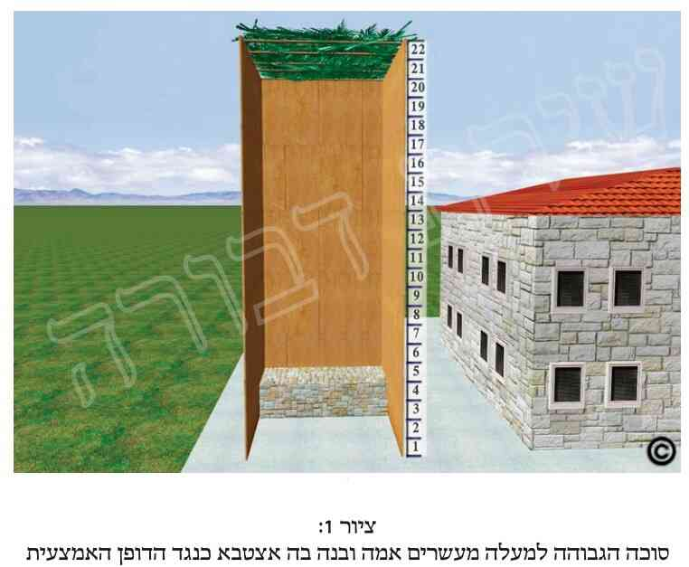

א. כפי שכתבנו לעיל (בפרק א' סעיף ה'), חובה על כל אדם מישראל שתהיה לו סוכה לדור בה, ויוכל לעשות בה את כל מה שחייבים לעשות בסוכה, כל שבעת ימי החג. ומכל מקום אין הכרח שהסוכה תהיה דווקא בבעלותו, אלא יכול הוא לצאת ידי חובה גם בסוכה שאינה שלו, וכמבואר בסעיפים הבאים.
ב. אדם שביקש רשות מחברו להשתמש בסוכתו (היינו ששאל אותה ממנו), יוצא ידי חובתו בישיבתו בה.
ג. וכן יוצא אדם ידי חובת מצוות סוכה בסוכה שהוא שותף בה עם אחרים.
ד. כתוב בתורה (דברים פט"ז פס' י"ג): "חג הסֻכֹּת תעשה לך". ודרשו חכמינו ז"ל, שצריך לעשות את הסוכה "משלך", והיינו שאם הסוכה אינה משלך אלא היא גזולה, הריהי פסולה. מכל מקום ישנם מיקרים שבכל אופן הסוכה כשרה בדיעבד (כדלקמן בסמוך). אך ברור הדבר שלכתחילה איסור גמור הוא לגזול את סוכת חברו, ולכתחילה אין עושים סוכה מדבר גזול.
ה. דין הגזל הפוסל אף בדיעבד את הסוכה אמור הן לגבי דפנות הסוכה והן לגבי הסכך שלה. וכמובן שלכתחילה אסור לגזול גם את קרקע הסוכה.
ו. יש אומרים שכאשר הסוכה פסולה בגלל שהיא גזולה, הרי שהיא פסולה הן לגזלן והן לשאר בני האדם. ויש מי שמפקפק על כך וסובר שהסוכה פסולה רק לגזלן וכשרה לאחרים.
ז. כפי שאמרנו, ברור הדבר שלכתחילה אסור לגזול סוכה שאינה שלו. ומאידך, למרות שבניית הסוכה כרוכה בגזל, מכל מקום מצד דיני הסוכה ישנם מיקרים שהסוכה כשרה בדיעבד, משני טעמים עיקריים: 1) קרקע אינה נגזלת. 2) "תקנת השבים". ומאידך ישנם מיקרים שהסוכה נפסלת אפילו בדיעבד, וכפי שבס"ד יבואר כל זה לקמן.
ח. אין לבנות את הסוכה על קרקע שאינה של בעל הסוכה. לכן אסור לבנות סוכה על קרקע של אדם אחר ללא רשותו.
ט. כפי שאמרנו לעיל, קרקע אינה נגזלת. והיינו שלא ניתן לגוזלה ואינה קנויה לגזלן אפילו אם הבעלים התייאשו, אלא היא ממשיכה להיות בבעלות הבעלים הראשונים. לכן מי שנכנס לקרקע של אדם אחר ובנה עליה סוכה, יוצא ידי חובה בסוכה זו, כיוון שאי אפשר לגזול קרקע, והריהי נשארת בבעלות בעליה הראשונים. ויותר מכך, אף אם לא בנה את הסוכה על קרקע זו אלא מצא בה כבר סוכה מוכנה וגזלה (היינו גזל גם את הקרקע וגם את הסוכה), יוצא בה ידי חובה אם הסוכה היתה מחוברת לקרקע. ומכל מקום נראה שדעת רוב הפוסקים שבמיקרים אלה אסור לברך את ברכת "לישב בסוכה" כשיושב בסוכה כזו.
י. כמו כן מעיקר הדין אין לבנות סוכה פרטית על קרקע השייכת לרבים. לכן אסור היה לבנות סוכה על מדרכה ברשות הרבים. ואם בכל אופן עשה כן וישב בסוכה זו, יצא בדיעבד ידי חובה. ונחלקו הפוסקים אם רשאי לברך את ברכת "לישב בסוכה" כשיושב בסוכה כזו. ולמעשה כתבו פוסקים רבים, שהרוצה לבנות את הסוכה במקום שגרים בו רק יהודים, רשאי לבנותה אף ברשות הרבים, באופן שאינו מפריע לרבים, וכן לברך בה את ברכת "לישב בסוכה". ואם הוא נמצא במקום שישנם בו גם גויים, לכתחילה לא יבנה את סוכתו ברשות הרבים. ואם בכל אופן בנאה שם, ואין לו סוכה אחרת, רשאי לברך את ברכת "לישב בסוכה" בישיבתו בסוכה זו. והמיקל בכך לכתחילה ובונה את סוכתו ברשות הרבים ומברך עליה את ברכת "לישב בסוכה", יש לו על מה לסמוך. וראה עוד לקמן (בסעיף י"ב).
יא. למרות שלכתחילה רצוי שלא לבנות סוכה פרטית על קרקע שברשות הרבים, מכל מקום אם ראש העיר, או אדם אחר בעל סמכות לכך, נותנים רשות לעשות זאת, הרי.שמותר הדבר לכתחילה. ויש אומרים שאין צריך לבקש רשות לכך מהרשות הממונה על כך, אם רשות זו אינה מוחה על כך.
יב. לדעת פוסקים רבים מותר לבנות סוכה פרטית במדרכה בצמוד לבית באופן שאינה מפריעה לרבים, ואף לברך על הישיבה בה את ברכת "לישב בסוכה".
יג. אסור לקטוף ענפים, לא לצורך הסכך, ולא לצורך הדפנות, מבלי לקבל רשות מבעל העצים, כיוון שאין עושים סוכה ולא חלק מסוכה מדבר גזול. והעושה את הסוכה מדבר הגזול אינו יוצא בה ידי חובה, ואינו רשאי לברך בה את ברכת "לישב בסוכה" (וראה עוד במקורות, ולקמן בסעיף כ').
יד. כיון שהגויים הינם בחזקת גוזלי קרקעות (מיהודים), כך שאף שידוע שהקרקע שלהם, בכל אופן יתכן שהם גזלוה מיהודי (או מגוי אחר), לכן אם רוצה היהודי לקצוץ לצורך סוכתו עצים או ענפים הגדלים בקרקע שבחזקת הגוי, יש לכך הלכות מיוחדות, כמבואר במקורות. ודברים אלה אמורים בפרט כאן בארץ הקודש.
טו. איסור קטיפת ענפים ללא רשות הבעלים כולל גם קטיפת ענפים מעצים הגדלים בקרקע השייכת לעיריה, לקרן הקיימת לישראל, למנהל מקרקעי ישראל, למושב וכדומה, וכן מקרקע של אדם פרטי. ואם יש רשות לקוטפם מטעם הרשות הממונה על כך, מותר אף ליהודי לקוטפם. ובאשר לאיסור קציצת ענפים של עצי פרי, ראה לעיל (בפרק ד' סעיף ח').
טז. אף אותם שאינם מקפידים שהמעמיד של הסכך יהא בעצמו כשר לסכך (כנ"ל בפרק ד' בסעיף ל"ה) מכל מקום צריכים הם להקפיד שהמעמיד של הסכך לא יהא גזול. ויש אומרים שאם המעמיד של הסכך הינו גזול, יתכן שכל הסוכה פסולה.
יז. לאור כל האמור לעיל ברור הדבר, שהקונים סכך וכדומה בשוק, צריכים להזהר שלא לקנות זאת מאנשים החשודים בגזל. וראה עוד כאן במקורות.
יח. נחלקו הפוסקים אם מותר לקטוף ענפים לצורך הסכך והדפנות ללא רשות הבעלים, אם ברור לו לקוטף העצים שבעל העצים ירשה לו לקוטפם. ונראה שדעת רוב הפוסקים להחמיר בכך. ומכל מקום אם לא ברור לקוטף העצים שבעל העצים מרשה זאת, ברור שהדבר אסור.
יט. הלוקח מחבירו בהשאלה עצים או קורות כדי לסכך בהם או כדי לעשותם דפנות לסוכה, אסור לו להשאילן לאדם אחר (שלישי) ללא רשות בעל העצים והקורות. ואם השאילן לו ללא רשות, והאדם השלישי קבען בסוכתו, יש אומרים שהסוכה גזולה, וכדי להכשירה צריך האדם השלישי לשלם לבעל הקורות את דמי הקורות. ויש אומרים שיתכן שכן הדין גם לגבי הקורות המעמידות את הסכך. ויש אומרים שאף שהשואל צריך להחזיר את הקורות, בכל אופן אין הסוכה נחשבת כגזולה.
כ. כפי שכתבנו לעיל (בסעיפים ד' וז'), ישנם מיקרים שבהם הסוכה כשרה למרות שבנייתה היתה כרוכה בגזל. אחת הסיבות להכשר סוכה כזו היא על ידי "תקנת השבים". פירוש הדבר הוא, שמן התורה הסוכה היתה צריכה להיות פסולה כיוון שהיא סוכה גזולה, אפילו אם הגזלן היה משלם לנגזל את דמי העצים. ולכן הגזלן היה צריך לפרק את סוכתו ולהחזיר לנגזל ממש את אותם העצים שגזל. אלא שחכמינו זכרונם לברכה רצו להקל על הגזלנים לחזור בתשובה (ולכן תקנה זו נקראת "תקנת השבים"), ותיקנו שאם אדם כבר גזל, ואף קבע את העצים הגזולים בסוכתו, והיינו שטרח על בנייתה או הוציא על כך הוצאות, הרי שאינו חייב לפרק את סוכתו כדי להחזיר לנגזל את העצים, אלא די שישלם לנגזל את דמי העצים, ואז העצים עוברים לבעלותו, והסוכה כשרה.
כא. במקרה הנ"ל (שהגזלן רק משלם את דמי הגזלה מבלי להחזיר אותה בעצמה), הסוכה כשרה בין אם מדובר שכבר קבע את העצים הגזולים בדופן הסוכה, בין אם רק הניחם על הסוכה לשם סכך ולא חיברם ממש לסוכה, ובין אם עשה את שני הדברים האלה.
כב. אם הגזלן אינו מוכן לשלם את דמי העצים, הרי שזו סוכה גזולה והיא פסולה. וכן אם הגזלן אינו משלם, אף על פי שמבטיח הוא לנגזל שלאחר החג יחזיר לו את העצים עצמם, והנגזל אינו מסכים לכך, הרי זו סוכה גזולה ופסולה.
כג. לפי המבואר, אין לקחת קרשים ללא רשות לצורך הדפנות או הסכך, אף אם כוונתו להחזירם מיד לאחר החג. ויש להזהר בכך גם לגבי קורות של בניין בזמן בנייתו. והעושה כן הרי סוכתו פסולה, ואסור לברך עליה את ברכת "לישב בסוכה".
כד. מי שגזל עצים וכדומה (כגון שקטף עצים משטח עירוני) ובנה מהם את סוכתו (בסכך או בדפנות), ונזכר בכך ביום טוב או בשבת, כך שאינו יכול לשלם אז עבור הגזילה, יש מי שאומר שהסוכה נחשבת כגזולה והינה פסולה, כל עוד לא שילם את דמי הגזלה, או לא הבטיח לנגזל שישלם לו. אך לדעת פוסקים רבים יש להקל יותר בכך, ומספיק שיחליט בדעתו לשלם לבעל הגזלה את שווי הגזלה, ואז יהיה מותר לו לשבת בה ולקיים את מצוות סוכה. ולדעת רוב הפוסקים שפוסקים כדעה זו רשאי אף לברך על כך את ברכת "לישב בסוכה". ומכל מקום ישלם זאת לנגזל מיד לכשיוכל. וראה עוד כאן במקורות.
כה. הגוזל סוכה בנויה שאין דפנותיה מחוברות לקרקע (כגון סוכה הבנויה על מכונית, ספינה וכדומה), וגם לא טרח בבנייתה ולא הוציא עליה הוצאות, הריהי סוכה גזולה ואינו יוצא בה ידי חובה, כיוון שבמקרה זה אין שייך להקל מאף טעם משני הטעמים הנזכרים לעיל (בסעיף ז'). וראה עוד בסעיף הבא.
כו. במקרה הנזכר בסעיף הקודם, שדין הסוכה כגזולה, על הגזלן להחזיר לנגזל את כל מה שגזל ממנו (היינו ממש את העצים הגזולים). ואין מועיל להחזיר לנגזל רק את שווי הגזלה, אלא רק אם הנגזל מסכים לכך.
כז. אסור לאדם להכנס לסוכה שאינה שלו ללא רשות בעל הסוכה. ובפרט אמור הדבר כשבעל הסוכה נמצא בסוכה. וכן הדין אם בעל הסוכה אינו נמצא בה, אך ישנה אפשרות שהוא יחזור אליה וירצה לאכול או לעשות בה דברים אחרים שלא נעים לו לעשותם בפני אנשים זרים. ואם אין חשש כזה, מותר להכנס לסוכה, על מנת לעשות בה רק דברים שחייבים לעשותם בסוכה. ויש מהפוסקים שכתבו שאם הסוכה מטופחת עם מצעים נאים וכדומה, אין להכנס אליה בכל אופן ולכל צורך שהוא אלא רק ברשות בעל הסוכה.
כח. יש מהפוסקים שכתבו שאם אדם נטל רשות מאשתו של בעל הסוכה, רשאי הוא להכנס לסוכתו. וראה מה שכתבנו לעיל (בסוף הסעיף הקודם) לגבי סוכה מטופחת.
כט. עוד מדיני סוכה גזולה והבעלות על הסוכה, ראה כאן במקורות.
ל. כפי שראינו בפרקים הקודמים, הרי שיש לעשות את הסוכה תחת אויר השמים. ולכן למשל אין לעשותה תחת גג, לא תחת אילן ולכתחילה אפילו לא תחת סכך כשר אחר.
לא. כמו כן ראינו (לעיל בפרקנו) שיש להקפיד לבנות את הסוכה במקום שאין בכך חשש גזל. ועוד כתבנו לקמן שיש לבנות את הסוכה במקום שבעת ישיבתו בסוכה, למשל כשאוכל או כשישן בה, לא יהיה לו דין של מצטער (כגון שמצטער שם מפני רעש, יתושים, שודדים וכדומה).
לב. עוד כתבו הפוסקים, שיש להזהר ולעשות את הסוכה במקום נקי. ולכן אין לעשות את הסוכה במקום שיש בו ריח רע של אשפה, צואה, ביוב וכדומה.
לג. בשעת הדחק, כשלא ניתן לקיים את מצוות הסוכה במקום שאין בו ריח רע, נחלקו הפוסקים אם מותר לבנות שם סוכה ולקיים מצווה זו במקום שיש בו ריח רע. ואף לדעת המתירים, אין לברך בסוכה זו שום ברכה ואין לומר בה שום דבר תורה ושום תפילה עד שיפסק הריח הרע.
לד. דין אדם שבנו את סוכתו במקום שיש בו ריח רע (שיש לו עיקר), וריח זה נמצא בכל הסביבה, ולאו דוקא סמוך לסוכה (כגון מלולים של תרנגולות), וכן דין אדם שבנה את סוכתו במקום שיש בו ריח רע, אפילו רק סמוך לסוכתו, כגון ריח מרפת סמוכה של פרות, אך אותו אדם רגיל לריח זה, ויש אנשים שאף אוהבים ריח זה, וכן דין אדם ששם בסוכתו מכשיר המפזר ריח טוב כדי לסלק את הריח הרע, ראה דינם כאן במקורות.
לה. לדעת כולם, אם בסוכה יש ריח רע מאוד שבני אדם לא יכולים לסובלו, הרי שהסוכה פסולה בזמן שהריח בתוכה.
לו. כשבחלל הסוכה, כגון בדפנותיה או בקרקעיתה, ישנם צינורות ביוב, הרי שתלוי הדבר מאיזה חומר הם עשויים: אם הם עשויים מבטון או משאר חומרים שהלכלוך נבלע בדפנות הצינור, הרי שחובה לכסות את הצינורות הללו. ואם צינורות אלה עשויים מברזל, פלסטיק ושאר חומרים שאין הלכלוך נבלע בדפנותיהם, הרי שאין חובה לכסותם. ויש הסוברים שצריך לכסות גם צינורות מאסבסט ומפלסטיק.
לז. לאור האמור בסעיף הקודם, אם בקרקעית הסוכה ישנו בור שופכין המכוסה במכסה העשוי מבטון (כפי שמצוי כיום), וכן שאר חומרים שהלכלוך נבלע בהם, הרי שיש לכסות את מכסה זה בשטיח וכדומה. וכל שכן שאם יש בור שופכין פתוח בתחתית הסוכה, שיש לכסותו היטב בלוחות עץ וכדומה, ולהקפיד שלא יהיה ריח רע. וראה עוד בסעיף הבא.
לח. בכל המיקרים הללו, אם יש ריח רע בתוך הסוכה, הרי שיש לנהוג כנ"ל בסעיפים הקודמים, ולהתרחק ארבע אמות (בערך כשני מטרים) ממקום שנגמר הריח הרע.
לט. עוד מדיני בניית סוכה באזור לא נקי מאשפה וכדומה, ושאר דינים לגבי מיקומה של הסוכה, ראה כאן במקורות.
מ. בענין אם מותר לכל דייר מהבנין לבנות סוכה בחצר של בית משותף, וכן בחניון המכוניות שלו, אף ללא רשות הדיירים וללא רשות וועד הבית, ראה כאן במקורות.
מא. אין לבנות את הסוכה במקום שבשל כך יש "היזק ראיה" לשכנו (כמבואר במקורות).
מב. הבונה את סוכתו בשטחו שלו, אלא שבשל בנייתה הוא גורם נזק לשכניו, וכגון שהסוכה מכסה ומאפילה את החלון של שכנו, או נזקים אחרים, והתברר על פי דין תורה שהשכנים הניזוקים צודקים בטענתם, הרי שאסור לו לעשות את הסוכה באופן שכזה. ואם בעל הסוכה ממשיך להתעקש ולהשאיר את הסוכה כך, אינו רשאי לברך על הישיבה בה את ברכת "לישב בסוכה".
מג. מי שבנה את סוכתו בשטחו, כדין, אלא שענפי האילן (שאינו אילן מאכל) היוצאים מחצר חבירו נוטים מעל סוכתו ופוסלים את כולה או את חלקה, יש מהפוסקים שכתבו שמותר לבעל הסוכה לקצוץ את הענפים המאהילים על הסוכה, וזאת אף ללא רשות בעל העץ. ויש מי שמסתייג מכך. וראה עוד כאן במקורות בענין מקרה דומה.
מד. דין העושה את סוכתו בשטחו שלו, אך נגד חוקי המקום (המדינה או הרשות המקומית), ראה כאן במקורות.
מה. בענין שירת נשים בסוכה כששירתן נשמעת בסביבה, ובין השאר בסוכות השכנים, ראה כאן במקורות.
&הערות:
[1] א. כמו שכתבנו בס"ד לעיל (בפרק א' סעי' ה') עפ"י תשו' רב נטרונאי גאון (הובאה ברי"ץ גיאת ובס' המנהיג), שמצוות סוכה לעשות כל אחד בביתו, ולאכול ולשתות ולגור שם. עכ"ל. וכ"כ בתשו' רב האי גאון, ובסידור רב עמרם גאון. וכעין זאת כ' בס' הפרדס (פסקי רש"י) וכ"ז מיוסד עפי"ד התו"כ (פר' אמור פי"ז), ובפסיקתא שם. וכן עולה כבר מלשון התיקונים (תיקון ע' דקל"ב,א'). הב"ד בסידור בית השואבה, בכה"ח (סי' תרכ"ה ס"ק ז-ט'), בסה"ס (מיל' לפ"ד סק"א. וע"ע שם במיל' לפ"ג ס"ק א' וב').
[2] ב. בגמ' בסוכה (דכ"ז,א') פליגי תנאי: רבי אליעזר אומר, כשם שאין אדם יוצא י"ח ביו"ט הראשון בלולבו של חבירו, כך אין אדם יוצא י"ח בסוכתו של חבירו, דכתיב: "חג הסֻּכֹּת תעשה לך"- משלך. וחכ"א, אע"פ שאמרו אין אדם יוצא י"ח ביו"ט הא' בלולבו של חבירו, אבל יוצא י"ח בסוכתו של חבירו, דכתיב: כל האזרח בישראל ישבו בסֻּכֹּת. מלמד שכל ישראל ראויין לישב בסוכה אחת. ע"כ. ופרש"י, דמשמע סוכה אחת לכל ישראל, שישבו בה זה אחר זה, וא"א שיהא לכולן, דלא מטי שוה פרוטה לכל חד אלא ע"י שאלה. וכ' מרן בב"י (סי' תרל"ז), דידוע דהלכה כחכמים. וכ"פ מרן בשו"ע (סי' תרל"ז ס"ב). הב"ד מרן הח"ח במ"ב (סי' תרל"ז סק"ה) וכה"ח (סק"ט).
[3] ג. בס"ד נביא עוד כמה פרטי דינים גבי סוכה שאולה:
1) גבי סוכה שאולה על תנאי, כ' הפמ"ג (בא"א סי' תרל"ז סק"ב), שמי ששאל עצים מחבירו ע"מ שלא להתחייב כלל באונסים, אעפ"כ עושה בעצים אלה סוכה לכתחי' (הב"ד בסה"ס מיל' לפ"ד סק"ט).
2) גבי סוכה השאולה למקצת מהחג. כ' בשו"ת זית רענן (ח"א, דיני הכשר ד' מינים, הלכה ט' סי' ד' סק"ב) דמי שהשאילוהו קרשים לעשות בהם סוכה או ששאל ממנו סכך, והתנה עמו להחזירם בחוה"מ שאז יטלנו בחזרה, יוצא י"ח בסוכה זו בימים שהעצים שאולים בידו, ולא אמרינן דהוי סוכה שאינה ראויה לשבעה, דפסולה (גמ' סוכה דכ"ג,א'). וזאת משום שהפסול של "אינה ראויה" הוא רק כאשר אינה ראויה מצד האיסור, כגון סוכה על אילן או על בהמה, שאסור להשתמש בה בשבת ויו"ט, וניתנת לשימוש רק בחוה"מ. אבל כשהחסרון הוא רק מצד חוסר סכך או דפנות, ה"ז דומה למי שעושה סוכתו בחוה"מ דקיי"ל שהיא כשרה. עכ"ד. כ"כ בשמו בסה"ס (מיל' לפ"ד סק"י). ובאמת שלפי מש"כ בשמו בסה"ס קשה, שהרי קיי"ל שסוכה הבנויה ע"י סכך העלול להתייבש במשך החג, הריהי פסולה. ולפי דבריו הכא יוצא שהיא צ"ל כשרה. ובאמת שבעיון בשו"ת זית רענן שם לא ראיתי שהטעם להקל הינו מטעם זה. ומ"מ בסה"ס שם ציין לעיין עוד באורחות חיים החדש (סי' תרל"ז סק"ג) וסוכת שלם (פרק ט"ו הערה ד').
ולפי דבריו אלה של בעל הזית רענן משמע בס"ד, שרשאי אדם להקים סוכה במגרש החניה של הבנין בו הוא גר, ואפי' במקום השמור לבעל מכונית מסוימת, אלא שבעל המכונית נסע מביתו לכמה ימים ויחזור רק באמצע ימי חוה"מ, והוא מרשה לשכנו לבנות שם סוכה, דמ"מ בימים שהמכונית איננה שם ה"ז שואל למקצת החג כשהמונע אינו איסור הלכתי אלא מונע מציאותי. וכ"ז אף את"ל שבסתמא אסור לאדם להקים סוכתו במגרש חניה השמור לשכנו. כך בס"ד נלע"ד. וראה עוד ע"כ לקמן (בפרקנו סעיף מ').
3) מי שחבירו נתן לו רשות רק לישון בסוכתו או (דבר שמצוי יותר) רק לאכול בסוכתו (כגון שהסוכה נמצאת במרפסת ביתו, וכדי להגיע אליה צריך לעבור דרך חדרי הבית, כך שמצד הצנעה מעדיף בעה"ב שהאורח לא ישן בסוכה). לפי"ד הרמ"א (בסי' תר"מ ס"ד) שהב"ד המרדכי (בסוכה, פרק הישן) בשם היראים (סי' תכ"א), שכ' שאם יש לו סוכה שא"א לאכול או לישן בה, שאינו יוצא י"ח בסוכה זו כלל, לכאו' זו בעיה בני"ד. ואמנם יש לכאו' כמה צדדים להקל למעשה בנידון זה.
ראשית יש להקל מצד מה שהיו כמה אחרו' שחלקו ע"ד הרמ"א הללו, ובראשם החכ"צ (כדלקמן בפרק י"א הערה ק'). ועוי"ל, שהרי דנו האחרו' האם בדברי הרמ"א הכוונה שהפסול הינו בחפצא של הסוכה או בגברא [שכתב בסה"ס (שם עמ' ת"ד) בשם שו"ת בית הלוי, האב"נ, החזו"א, ושכן כבר דעת החכ"צ, שלרמ"א הפסול הוא בחפצא. ואילו השע"ת הבין שלרמ"א הפסול הוא בגברא. והנ"מ, שאם הפסול הינו בחפצא, הרי שאף אם אדם יעשה ב' סוכות, א' לשינה וא' לאכילה, לא יצא בהן י"ח. משא"כ אם הפסול בגברא, הרי שכן יצא בהן י"ח. ועוד נ"מ, אם הסוכה הזו שראויה רק לשינה או רק לאכילה, בא אליה אדם שאינו מצטער לאכול בה ולא לישון בה, אע"ג שלבעל הסוכה היא אינה ראויה לשניהם. שבזה י"א שאם הפסול הינו בחפצא, אף לאדם שאינו מצטער בה הינה פסולה. משא"כ אם הפסול בגברא, הרי שאותו אדם שאינו מצטער בישיבה בה, יוצא הוא בה י"ח. כמובא כ"ז בסה"ס (במיל' לפי"ח רסקל"ו עמ' ת"ג-ת"ד)]. ולפי"ז כיון שבני"ד ברור שהסוכה הזו, אף לד' הרמ"א, אין הפסול בה מצד החפצא, שהריהי ראויה לבעליה, ורק לאותו אדם השואל יש מניעה לישון בה, הרי שהפסול פה הינו מצד הגברא. וא"כ לפחות לחלק מהפוס' בהבנת הרמ"א, הרמ"א לא פסל הסוכה בני"ד.
ועוד לכאו' יש צד להקל בני"ד, מדברי רב האי גאון שהביא השע"ת (רס"י תרל"ט) גבי שני אחים או שותפים שעשו סוכה קטנה, שלענין אכילה יכול לאכול כ"א בזמן שונה מחברו. אבל לענין שינה, זה ישן לילה א' וזה ישן באותה הסוכה לילה אחר. ואם חביבה עליהם מצות סוכה, זה ישן מקצת הלילה וזה ישן מקצת הלילה [וע"ע מש"כ ע"כ בשעה"צ (סי' תר"מ סקכ"ה), ובסה"ס (מיל' לפי"ח סקל"ו עמ' ת"ה)]. לכאו' מפה נראה שגם בני"ד יצא בזה י"ח. אלא שדא עקא, שכתבו הפוס' שדברי רה"ג הינם כשיטת החכ"צ שחולק ע"ד הרמ"א הנ"ל [שכ"מ בשע"ת הנ"ל, וכן מתבאר בסה"ס (במיל' שם בעמ' ת"ה)]. וא"כ מצד זה אין להקל בני"ד עפי"ד רה"ג.
ומ"מ נראה בס"ד שלמעשה יש להקל בני"ד, ואותו אדם ששואל הסוכה רק לאכילה או רק לשינה, יוצא בה י"ח בצורך שלשמו שאל.
4) ועוד בענין סוכה שאולה: מי שנתן לחבירו סכך ע"מ להחזיר לו, ולא החזירו, כתב הישי"ע (סי' תר"נ סק"א) שגזל הוא בידו למפרע שלא קיים תנאו, ולא יצא י"ח סוכה, שהרי מיעטה התורה בתיבת "לך", למיעוטי גזולה. ואף ששאולה כשרה, היינו כששאל ממנו בלא תנאי. אך כאן דלא קיים התנאי, חשוב גזול בידו למפרע ולא יי"ח. עכ"ד. הב"ד בסה"ס (מיל' לפ"ד סק"כ).
5) גבי סוכה שאולה מגוי, נחלקו האחרו' אי גם בזה נאמר היתר סוכה שאולה. די"א שכל זמן שהיא בבעלות הגוי אינה כשרה. ומה שאמרו שסוכת גוי שעשאה לשם צל, כשרה, הו"ד כשהגוי הקנה אותה לישראל. שכ"כ לדון בשו"ת נזר הקודש (סי' פ"ז). ומאידך בשו"ת חבלים בנעימים (ח"ב סי' ל"ג) כ' שסוכה זו כשרה ויוצאים בה י"ח. דגבי סוכה שאולה אין נ"מ בין ישראל לגוי. הב"ד בסה"ס (מיל' לפ"ד סקי"א).
6) בענין אי עדיפא סוכת השותפין או סוכה שאולה, ראה בהערה הבאה.
7) כיון שי"א דסוכת השותפין עדיפא מסוכה שאולה (כדלקמן בהערה הבאה), לכן כ' כה"ח (סי' תרל"ז סק"י) שבסוכה שאולה צריך ליקח רשות מחבירו, שיצא בסוכתו י"ח אכילה ושתיה ושינה וכל מה שירצה. ע'כ.
[4] ד. כ' הריב"ש בתשובותיו (סי' שמ"ז), שבין לרש"י, בין לתוס' ובין לר"ן, כיוון שיוצאים י"ח בסוכה שאולה, כ"ש שיוצאים י"ח בשל שותפין. דשל שותפין עדיפא משאולה כולה לפי שבשל שותפין מקצתה שלו לגמרי, והשאר הוא שאול אצלו, שהרי לדעת כן השתתפו, שכל אחד מהם ישתמש בה. ויוצאים י"ח בכך אפי' כשנכנס לחלק חבירו שלא ברשותו. הב"ד מרן בב"י (סי' תרל"ז) ופסק כן בשו"ע (באותו סי' בסעי' ב'). הב"ד ופסק כן המ"ב (סק"ו) וכה"ח (סק"י).
אמנם הר"ש בן הרשב"ץ (בתשו' סי' ח') חלק ע"ד הריב"ש הנ"ל, וכ' דסוכה שאולה עדיפא מסוכה בשותפות, משום דבשותפין אי קפדי אהדדי הריהי פסולה, והוסיף ששמע שכן היתה ד' רב חסדאי קרשקש. הב"ד הגחיד"א במחב"ר, דחה את השגת המהר"ש וחיזק את דברי הריב"ש. והוסיף שאם השותפין מקפידים זה על זה, אפשר שמודה הריב"ש. אמנם זו מציאות רחוקה, דכיון שעשו הסוכה יחד להשתמש בה בשותפות, ודאי כ"א לא יקפיד על חבירו, דכיון שגם הוא עצמו רוצה לצאת בה, הריהו מתרצה שגם חבירו ישתמש בה. ועוד כ' במחב"ר, שגם הריטב"א בחידושיו מסיק שגם לרבי אליעזר יוצאים בסוכת השותפין. עכ"ד. הב"ד בשע"ת ובכה"ח (סק"י).
וכ' הגר"ז (סעי' ג'), שבסוכת השותפין יוצא י"ח אפי' אם נכנס אליה שלא ברשות חבירו. ע"כ. הב"ד כה"ח (סקי"א). ומ"מ כ' כה"ח (שם בססק"י) שמן הנכון שהעושים סוכה בשותפות, הן בסכך, הן בדפנות והן בקרקע, שכל א' ימחול לחבירו חלקו בפירוש כדי לצאת י"ח לכו"ע. ע"כ.
בס"ד נביא עוד כמה פרטי דינים בני"ד:
1) כ' מרן הגחיד"א במחב"ר (סי' תרל"ז סק"ב) דמודה הריב"ש בקפדי אהדדי (שאין יוצאים בסוכת השותפין י"ח). אך הוא רחוק המציאות, דכיון דעביד סוכה בשותפות מסתמא כ"א נתרצה שיצאו שניהם. ואי מקפידים ויוצאים מכלל דעות בני אדם, בזה לא מיירי הריב"ש. ע"כ. הב"ד השע"ת (רס"י תרל"ז) וסה"ס (מיל' לפ"ד סקי"ד), וכנ"ל.
2) כ' בס' בית השואבה (דיני סוכה שאולה, סי' י"א) גבי שותפים בקרקע, שגם אם הם מקפידים זע"ז, הרי הסוכה כשרה, דלא גרע מסוכה גזולה דכשרה, לפי שקרקע אינה נגזלת. ויש נ"מ לענין הברכה, שיושב בה ואינו מברך (הב"ד סה"ס במיל' לפ"ד דרל"ב סקט"ז).
3) גבי שותף העושה סוכה בחלק חבירו, כ' הגרע"א בדרוש וחידוש (ח"ב ליקוטים. סוכה דל"א), ראובן שבנה סוכה בחצר שיש לו בה שותפות עם שמעון, אף שלא מדעת שותפות (דהיינו שלדעתו אין לשותפו רשות להשתמש בה), ובא שמעון והוציאו מסוכתו, דלא הוי גזולה ביד שמעון משום דלא עשה בה שמעון קנין בעצים, דבחצר השותפים אין השותפין קונים זה מזה על ידי קנין חצר, כדאי' בב"ב (דף פ"ה). עכ"ד. הב"ד בסה"ס (במיל' לפ"ד סקי"ז).
4) מי שהעמיד סוכתו ע"ג קרקע של חבירו שלא מדעתו, אסור לבעל הקרקע להשתמש בסוכה שלא מדעת בעל הסוכה, וראה לקמן (בפרקנו הערה נ"ו).
[5] ה. עה"פ הנ"ל אמרו בגמ' סוכה (ד"ט, א') ש"תעשה לך"- למיעוט גזולה. ופרש"י (ד"ה "למיעוטי גזולה") דבעינן תעשה לך משלך. עכ"ל.
ועל כך כ' הג' הרח"ף במל"ח (סי' כ"א סק"ה): אוי ואבוי על מי שעושה סוכה מדפנות גזולות וסכך גזול, שיהפוך הסנגור לקטגור, והיצר הרע משמח אותו שהרויח שלא נתן דמים, והוא לא יודע שהשמחה היא על שהכשילו. ע"כ. הב"ד בסה"ס (מיל' לפ"ד סקכ"א).
בענין הטעם שאמרו בגמ' שהסוכה פסולה משום דבעינן "לך"- משלך, שאלו שם התוס' (ד"ה "ההוא"), דתיפוק ליה משום מצווה הבאה בעבירה, דמהאי טעמא פסלינן אתרוג הגזול ביו"ט שני. עיי"ש בתוס' שדנו בכך. ואמנם יש שתירצו, שאם האיסור הינו מטעם מצוה הבאה בעברה דין הסכך הגזול כדין אויר. משא"כ לטעם ד"לך"- למיעוטי גזולה, דין הסכך הגזול כדין סכך פסול (והנ"מ הינן רבות, עפ"י המבואר בשו"ע סי' תרל"ב). וכמבואר כ"ז בפסתש"ו (סי' תרל"ז סק"ה) בשם היהודי הקדוש זיע"א.
והמנח"ח (מצוה שכ"ה) תירץ, שלטעם דמצוה הבאה בעבירה, אם אכל וישן בסוכה גזולה, נהי שלא קיים מצות ישיבה בסוכה ואסור לברך "לישב בסוכה", אך גם לא עבר עבירה דביטול עשה, והריהו כאילו לא אכל ולא ישן. משא"כ לטעם ד"לך"- למיעוטי גזולה, נמצא שעבר עבירה וכאילו אכל וישן מחוץ לסוכה [הב"ד בפסתש"ו (שם)]. ולכאו' התוצאה הינה הפוכה מהתי' של היהודי הקדוש זצ"ל. וע"ע בחזו"ע (סוכות. דנ"ג,א').
ובענין מה שכתבנו שבכל אופן ישנם מיקרים שהסוכה כשרה, הוא למשל עפ"י המבואר בברייתא בסוכה (דל"א, א'), דסוכה גזולה, ר"א פוסל וחכמים מכשירים. וא"ר נחמן, דמחלוקת בשתקף את חבירו והוציאו מסוכתו. ור"א לטעמיה דאמר (שם דכ"ז, ב') שאין אדם יי"ח בסוכתו של חבירו. דאי קרקע נגזלת, סוכה גזולה היא. ואי נמי קרקע אינה נגזלת, סוכה שאולה היא. ורבנן לטעמייהו דאמרי יוצא אדם י"ח בסוכתו של חבירו, וס"ל קרקע אינה נגזלת וסוכה שאולה היא. עיי"ש בגמ'. והלכה כחכמים (שו"ע סי' תרל"ז ס"ג).
ועוד, דאם גזל עצים וסיכך בהם לדברי הכל אין לו אלא דמי עצים (משום תקנת השבים). כמבואר כ"ז בפוס' [שו"ע (שם). מ"ב (סק"ז) וש"פ].
ואגב בס"ד חשבנו להעיר, גבי מש"כ הג' המ"א ע"ד מרן הנ"ל. שמרן כ', וז"ל: סוכה גזולה כשרה. כיצד: אם תקף על חבירו והוציאו מסוכתו, וגזלה וישב בה, יצא, שאין הקרקע נגזלת. עכ"ל. וכ' המ"א (סק"ב) שאין הלשון מדוקדק, דהא דרשינן לך- למיעוטי גזולה. אלא דבגזל קרקע- כשרה, דאינה נגזלת, והו"ל שאולה. עכ"ד. הב"ד המ"ב (סק"ז). ובס"ד נלע"ד שברור שזו גם כוונת מרן בשו"ע, מדלא כתב "סוכה גזולה כשרה, כגון" וכו' אלא כתב: "כיצד" וכו', היינו שדוקא בכה"ג כשרה, ולא בכל מצב.
[6] ו. דין איסור גזל פשוט הוא, ומבואר בכל התורה שבכתב (כגון בספר ויקרא פרק ה' פס' כ"ג, ופרק י"ט פס' י"ג) ובתורה שבע"פ (כגון בב"ק פרק תשיעי ועשירי). וע"ע מה שכתבנו בהל' ד' המינים (פרק כ' הערה נ"ה).
דין האיסור לכתחי' של גזל גבי סוכה, כתבוהו הג"א, האו"ז והרמ"א (סי' תרל"ז ס"ג) גבי גזל קרקע, ואילו גבי גזל העצים לדפנות ולסכך כתבוהו המהרי"ל והרמ"א (שם). וע"ע בסוף ההערה הבאה.
[7] ז. הנה בני"ד ישנן שתי מחלוקות חשובות. מחלוקת אחת הינה האם פסול סוכה גזולה אמור הן גבי הקרקע שלה, הן גבי דפנותיה והן גבי הסכך, או שפסול זה חל רק על חלק מהדברים הנ"ל. ומחלו' שניה הינה אליבא דהפוס' שיש מהדברים הללו הפוסלים הסוכה מדין גזל (וכן ד' רוה"פ), מ"מ נחלקו הפוס' האם הדברים הללו פוסלים הסוכה מדאו', או שחלקם פוסלים רק מדרבנן. ובס"ד יוצא מכך, שיש מהדברים הללו (הדפנות והסכך) שאסורים מדאו', יש מהם שלדעת כמה פוס' אסורים רק מדרבנן, ויש מהם שלד' כמה פוס' אינם בכלל איסור סוכה גזולה. וזה החלי, בעזרת צורי וגואלי.
ראשית נדון בס"ד במחלו' הפוס' האם באמת כל הדברים הללו (היינו הקרקע, הדפנות והסכך הגזולים) פוסלים הסוכה, או שיש מהם שאינם פוסלים כלל את הסוכה.
גבי קרקע, כבר כתב מרן (בסי' תרל"ז ס"ג) עפ"י הגמ' בסוכה (דל"א, א') שקרקע אינה נגזלת. והיינו שאינה נגזלת בדיעבד, ואף אם גזל אין זה פוסל הסוכה. אך מ"מ לכתחי' ודאי שאסור לגזול אף קרקע, עפי"ד הרמ"א (בסי' תרל"ז רסע"י ג') וש"פ, וכנ"ל בהערה הקודמת [ור' בסה"ס (במיל' לפ"ד סקכ"ו) שכ' בשם ס' כפות תמרים בדל"א, א' דפסול גזולה כולל גם את קרקע הסוכה. והוסיף בסה"ס, שכ"ז לסוברים שגם דפנות גזולות פסולות. אבל לסוברים דהדפנות אינן פסולות כשהן גזולות, כ"ש בקרקע הסוכה שאינה פסולה בגזולה. עכת"ד. אמנם לענ"ד זה חידוש לומר שהסוכה פסולה כשהינה על קרקע גזולה. וראה בס' כפות תמרים (שם דל"א, א ד"ה "מחלוקת"), אך כתב כן בדעת ר"א. ור' באוצר מפרשי התלמוד לסוכה (ריש דל"א) שהביאו את הכפות תמרים כמסייע לד' הרמב"ם שיש דין גזול בדפנות, מהא דבהוו"א שבגמ' (אם קרקע נגזלת), יש פסול גזול גם בקרקע].
והא דדפנות גזולות פוסלות הסוכה אף בדיעבד, שכן מתבאר מדברי מרן (בסי' תרל"ז ס"ג) גבי גזל סוכה שבראש הספינה ובראש העגלה. דהא הטעם שם שהסוכה אינה מחוברת לקרקע, וממילא מדובר על גזל הדפנות והסכך (ומדלא חילק מרן ביניהם, לכאו' משמע שמדובר באיסור גזל בשניהם). וכן מתבאר מדברי הרמ"א (בסי' תרל"ז שם) גבי ראובן שבנה סוכה בקרקע שמעון. שכיון שהסוכה אינה מחוברת לקרקע הרי שיש גזל בדפנות (וכמבואר במ"ב שם סקי"ט). וכ"כ בהדיא מהר"ם בן חביב בס' כפות תמרים (עמ"ס סוכה דל"א, א'), שדין סוכה גזולה הוי בין בסכך ובין בדפנות. וכ"כ גם הפמ"ג (במש"ז סי' תרל"ז סק"ד), הביכור"י, המ"ב בבה"ל (סי' תרל"ז ס"ג ד"ה "ואם גזל"), וכ"כ בשמם ופסקו כמותם בכה"ח (סקכ"ד) ובחזו"ע (דיני הסכך, דנ"ג סוף הערה כ"ד).
אמנם בשו"ת חלקת יואב (או"ח סי' כ"ז ד"ה עוד הקשה) כ' שלא שייך פסול סוכה גזולה לא בדפנות ולא בקרקע. עיי"ש. וכ"כ הגרא"מ הורביץ ז"ל בהגהותיו למס' סוכה (דל"א, א', וכמובא בש"ס וילנא). הב"ד בסה"ס (במיל' לפ"ד סקכ"ו) ובחזו"ע (דיני הסכך שם). אך מ"מ נראה שאין ד' רוה"פ כן.
נמצאנו למדים שמ"מ לד' רוה"פ דפנות גזולות פוסלות הסוכה אף בדיעבד.
ובאשר לסכך גזול, אי פוסל הסוכה בדיעבד. כפי שכתבנו לעיל גבי הדפנות, הרי מתבאר שלד' מרן והרמ"א (בסי' תרל"ז ס"ג) סכך גזול פוסל אף בדיעבד. וכ"כ בהדיא המהר"ם בן חביב שם, הפמ"ג, הביכור"י, הבה"ל, כה"ח וחזו"ע (כ"ז שם). וא"כ לכו"ע סכך גזול פוסל הסוכה אף בדיעבד.
נמצאנו למדים שלכו"ע סכך גזול פוסל הסוכה אף בדיעבד. וכן לרוה"פ גם דפנות גזולות פוסלות הסוכה. ולגבי קרקע- למרות שאסור לכתחי' לגזול קרקע, מ"מ קרקע גזולה אינה פוסלת בדיעבד את הסוכה, וכנ"ל.
בענין מחלו' הפוס' השניה, אי הדברים הללו פוסלים הסוכה מדאו' או מדרבנן.
כתב הביכור"י (סי' תרל"ז סקי"א) ובתוספת ביכורים (שם) שאמנם סכך גזול פסול מדאו', אך הדפנות אינן פסולות אלא מדרבנן. והיינו שפסול הסכך הינו מקרא ד"לך", ואילו פסול הדפנות הינו מדין מצוה הבאה בעבירה, שלד' התוס' בסוכה (ד"ט, א') אינה אלא מדרבנן. וכ' שם, דלפי"ז מי שאין לו סוכה אחרת אלא גזולה בלבד, הרי שתלוי מה גזול בה. שאם הסכך הוא הגזול, הרי שלא ישב בה כלל לצאת י"ח. אך אם הסכך כשר ורק הדפנות גזולות, הרי שלדעתו ישב בסוכה זו, אך לא יברך ע"כ "לישב בסוכה" כדין שאר הפסולים הפסולים מדרבנן. וכמו כן ישנה עוד נ"מ גבי הקונים מהגזלן. שאם קנה מהגזלן את הסכך, הרי שהסוכה פסולה. אך אם הסכך הוא שלו ורק את הדפנות קנה מהגזלן, הרי יכול לישב בסוכה ורק לא יברך ע"כ את ברכת "לישב בסוכה" (ורשאי לישב בה ולקיים מצוות סוכה רק אם הקניה היתה אחר יאוש הבעלים).
אלא שד' רוה"פ להחמיר בני"ד, וס"ל שהן הסכך והן הדפנות, אם הם גזולים, הריהם פוסלים הסוכה מן התורה. שכ"ד הרב כפות תמרים (לסוכה דל"א, א'), וכ"כ הפמ"ג (במש"ז סי' תרל"ז סק"ד) והמנח"ח (מצוה שכ"ה סק"ט). הביא דברים אלה בסה"ס (במיל' לפ"ד סקכ"ב). וציין עוד לדברי הגר"ש קלוגר בס' חכמת שלמה (או"ח סי' שס"ב) ובספר החיים (סי' תרל"ז סקפ"ו).
בס"ד נמצאנו למדים שלכו"ע סכך גזול פוסל הסוכה מדאו', ורק נחלקו גבי הדפנות אי האיסור הינו מדאו' או מדרבנן. ולמעשה גם בזה ד' רוה"פ שדפנות גזולות פוסלות הסוכה מדאו', ואילו מי שגזל הקרקע ובנה שם הסוכה, אין הסוכה נפסלת בשל כך, דקרקע אינה נגזלת.
בסה"ס (במיל' לפ"ד סקכ"ז) כ' בשם הגרא"מ הורוביץ (בהגהותיו לסוכה דל"א, א') שגם בקרקע גזולה, אע"פ שאינה נגזלת מ"מ יש בכך איסור לא תגזול ולא תחמוד. ע"כ.
[8] ח. כתב מרן (בסי' תרל"ז ס"ג) שהגוזל סוכה העשויה בראש הספינה או בראש העגלה (שהרי אינה מחוברת לקרקע ולא טרח בה ולא הוציא עליה הוצאות), הרי זו סוכה גזולה ופסולה. וכ' ע"כ המ"א (סק"ו) לעיין בסי' תרמ"ט, ושגבי סוכה הוי כמו לולב ביו"ט ראשון, דכתיב "לך", למיעוטי גזולה. ע"כ. ולפי"ז כ' מחה"ש שהסוכה פסולה כל ז' גם לאחרים כמו שגבי לולב הוא פסול ביוט"א גם לאחרים. דהיכא דכתיב "לך" או "לכם", הוי פסול גם לאחרים. הב"ד המ"ב (ססקי"ח) ובבה"ל (שם ס"ג ד"ה "לא יצא"), וכה"ח (סקל"ח).
[9] ט. לאחר שמרן הח"ח הב"ד מחה"ש, הן במ"ב והן בבה"ל הנ"ל, כ' לפקפק ע"ד מחה"ש הללו, דאין זה ברור שמש"כ המ"א להשוות ני"ד להא דסי' תרמ"ט הוא שגם אחרים לא יוצאים י"ח. דמה שכתבה התורה "לכם" גבי לולב, הרי התם בעינן לכם ממש שיהא שלו בעצם, ולכן אפי' שאול פסול. משא"כ בסוכה דלא אסרה התורה רק גזול ולא שאול. ולכן יתכן שבני"ד אין הסוכה פסולה לאחרים דהא אינם מתכוונים לגוזלו, וגם אפשר שדעת הנגזל להרשות לזה האחר שישב בסוכתו. ונשאר בצ"ע. והסביר שמש"כ המ"א לעיין בסי' תרמ"ט, היינו שאסור לגזלן ליהנות מהסוכה בין לפני יאוש בין לאחר יאוש. ומה שהישווה דין סוכה כל ז' לדין לולב ביוט"א, היינו שבכל ז' אינו יוצא מדאו' כמו לולב ביוט"א. עכת"ד הבה"ל. ולכאו' קושיית מרן המ"ב ע"ד מחה"ש נכונה, אך מ"מ ק"ק לי ע"כ, דהא המ"א כ' להשוות דין סוכה למש"כ ברס"י תרמ"ט, ושם לא דיברו גבי שאול אלא רק בסעי' ב'. ואילו ברס"י תרמ"ט דיבר מרן דוקא מצד אי נאסר הדבר לכולם או רק לנגזל (שממה שכ' בהמשך דבריו שם בסעי' א' שיש מתירים הגזול והגנוב לאחרים, ושנאסר רק לגנב ולגזלן, משמע שהמ'א דיבר גבי האיסור לגזלן או לכולם אך לא דיבר גבי שאול). וצ"ע (דבאמת הדברים כהררים התלויים בשערה, לדעת מהי כוונת המ"א).
ומ"מ יש להדגיש שכל הדין בני"ד אמור דוקא גבי סוכה שהינה בראש הספינה או העגלה וכדו', והיינו שאינה מחוברת לקרקע וגם לא טרח בה, ולכן שייך בה דין גזל, ולכן יש לדון אי לפחות האחרים יוצאים בה י"ח, אך בסוכה המחוברת לקרקע או שטרח בה הרי ממילא אינה גזולה ואף אחרים יוצאים בה (בדיעבד) י"ח.
ועוד נראה בס"ד, שאף בני"ד, בסוכה בראש העגלה ובראש הספינה, אי יעביר לגמרי את הסוכה לאחרים, במתנה או במכירה, לכאו' אחרים אלה יכולים לצאת בה י"ח, שהרי ביד הגזלן היה יאוש, ואילו אצל האחרים היה כבר גם שינוי רשות, ודמי לדברי המ"ב (ססקי"ב). חכ"א העיר, דהא דאמרינן שהיה יאוש, תלוי בשאלה אי סתם גזלה יאוש בעלים או לא. שאם סתם גזלה הוי יאוש, אזי רק כשידוע שלא התיאש אינו יאוש. ואם סתם גזלה אינה יאוש ה"ז ההיפך. והנ"מ גם לסתמא שאי"ז בחזקת שהתיאש. ויש עוד לדון בזה, ואכמ"ל.
[10] י. הא דלכתחי' אסור לגזול, מבואר בס"ד לעיל (בהערה ו').
דין זה מבוסס על שתי הלכות יסודיות: 1) קרקע אינה נגזלת. 2) תקנת השבים.
הא דקרקע אינה נגזלת הריהו מבואר בגמ' ב"ק (דקי"ז, ב'). דת"ר: הגוזל שדה מחבירו ושטפה נהר, חייב להעמיד לו שדה אחר, דברי רבי אליעזר. וחכ"א: אומר לו הרי שלך לפניך. ע"כ. והסבירו בגמ' שנחלקו ר"א וחכמים האם קרקע נגזלת או אינה נגזלת. ופרש"י בסוכה (ד"ל, ב' ד"ה "וקרקע אינה נגזלת"): כלומר אינה קנויה לגזלן בשום יאוש. דלעולם בחזקת בעליה היא, דמקראי נפקא לן... אבל משנתלש הפרי הוי גזל, והתולשו הוא גוזלו. עכ"ל.
ומכח מחלו' זו גם נחלקו ר"א וחכמים גבי סוכה. דאיתא בסוכה (דל"א, א'): ת"ר: סוכה גזולה... ר"א פוסל וחכמים מכשירין. אמר רב נחמן: מחלוקת בשתוקף את חבירו והוציאו מסוכתו. ורבי אליעזר לטעמיה, דאמר אין אדם יוצא ידי חובתו בסוכתו של חבירו. אי קרקע נגזלת- סוכה גזולה היא. ואי נמי קרקע אינה נגזלת- סוכה שאולה היא. ורבנן לטעמייהו דאמרי אדם יוצא ידי חובתו בסוכתו של חבירו, וקרקע אינה נגזלת, וסוכה שאולה היא. ע"כ.
ופרש"י שם (בד"ה "מחלוקת"), הא דפסיל רבי אליעזר כגון שתקף את חבירו בחזקה והוציאו מסוכתו הבנויה בקרקעו של נגזל, וכל המחובר לקרקע הריהו כקרקע. ועוד כתב שם (בד"ה "אי קרקע נגזלת"), כלומר, אם יש על הקרקע תורת גזל כשאר מטלטלין לעמוד בחזקת גזלן, סוכה גזולה היא, ורבי אליעזר דריש "תעשה לך"- משלך, ולא גזולה ולא שאולה. ואי אינה נגזלת, וכל הימים ברשות בעליה היא, הויא לה שאולה. ופלוגתא היא בפרק הגוזל (ב"ק דקי"ז, א'. וכנ"ל). איכא מ"ד קרקע נגזלת ואיכא למ"ד קרקע אינה נגזלת. והמשיך רש"י (בד"ה "ורבנן"), דרבנן לטעמייהו, דאמרי יוצא אדם בסוכה שאינה שלו בשאולה, וס"ל דקרקע אינה נגזלת...ופליגי עליה דר"א נמי בהא דגזילת קרקע (עיי"ש עוד ברש"י, דר"נ נמי מצי למימר דר"א לטעמיה דאמר בהגוזל קרקע נגזלת וסוכה גזולה היא. ורבנן לטעמייהו דקרקע אינה נגזלת). עכת"ד רבינו רש"י.
וכדברים הללו כ' הטור, מרן בב"י, הלבוש, כה"ח (סקי"ב) וש"א. ופסק מרן (בסי' תרל"ז ס"ג) כחכמים, שקרקע אינה נגזלת.
ובענין תקנת השבים ר' מה שנכתוב בס"ד לקמן בפרקנו (בסעיף כ'), עפ"י הגמ' בסוכה (דל"א, א'). והיינו שחכמים הפקיעו את דין התורה שהגזלן חייב להחזיר ממש את החפץ שגזל, וכיון שהפקר בי"ד הפקר, הם תיקנו שדי שישלם את דמי העצים (או דבר אחר שגזל), וזאת כדי להקל על הגזלנים לשוב בתשובה, שלא יצטרכו לפרק את כל הבנין או את כל הסוכה שבנו כדי להחזיר הגזלה, אלא ישלמו כנ"ל ודיים בכך. וכל זה דוקא אם כבר עשו שינוי מעשה בדבר הנגזל, וכגון ששיקעו את הקורה בבנין או בסוכה, הן בדפנותיה והן בסכך, וכפי שבס"ד יבואר לקמן.
יש לציין שישנן עוד דרכים לקנות את העצים הגזולים, אף ללא היתר תקנת השבים.
כ' רש"י בסוכה (דל"א, א' ד"ה "אבל גזל עצים וסיכך בהם"), וז"ל: אין זו לא גזולה ולא שאולה, דקננהו בשינוי מעשה ושינוי השם. ועוד, משום תקנת השבים אינו צריך לסתור בנינו וכו'. עכ"ל. ורבינו המאירי כ' (בסוכה דל"א, א' ד"ה "זהו ביאור המשנה") וז"ל: ומ"מ כל שקנה את העצים אם בשינוי מעשה אף בלא יאוש, ואם בשינוי השם וביאוש, או מפני תקנת השבים, וכו'. עכ"ל.
ואכן דנו הראשו' ואחרו' מתי שינוי קונה, האם שינוי מעשה קונה בלא שינוי השם. ר' בראשו' על הגמ' בב"ק (דצ"ג, ב'). ור' ברמב"ם (פ"ב מגזלה ואבדה ה"י וי"ב), שהגוזל עצים ושיפן שקנאם בקנין גזילה, ומשמע דבשינוי מעשה בלחוד סגי. אמנם מדבריו במקו"א (שם הי"ד) משמע שבעי אף שינוי השם. ודנו בכך הפוס'. וע"ע בשטמ"ק לב"ק (דצ"ו, א'), מש"כ בשם הרמ"ה.
הטור (חו"מ סי' ש"ס) כ' בהדיא דבעי ששינוי המעשה יהיה עם שינוי השם. וע"ע בשו"ע (חו"מ שם סעי' ה'-ו') וברמ"א שם שהביא דברי הטור. ודנו הפוס' אם ד' הרמב"ם והשו"ע כד' הטור והרמ"א (ר' סמ"ע שם סקט"ו וש"ך סק"ד). וע"ע בביאור הגר"א (סק"י) ע"ד הרמ"א, שאין זה כלל קבוע שהשינוי אינו קונה בלא שינוי השם. וכעין זאת כתבו גם הקצות (בסק"ה) ובערוה"ש (סעי' י'). ר' ע"כ בהרחבה בבירור הלכה (ע"י מכון הלכה ברורה שעל יד ישיבת "מרכז הרב") למס' ב"ק (דצ"ג, ב'). ואכמ"ל.
[11] יא. ישנם כמה מיקרים שאין בהם אף צד להקל משני הצדדים הנ"ל, וכגון שגזל סוכה שאינה מחוברת לקרקע, שאז שייך בה דין גזל, דאין בזה תקנת השבים משום שלא טרח עליה לבנותה ולא הוציא עליה הוצאות. וגם אין בה היתר שקרקע אינה נגזלת, משום שאינה מחוברת לקרקע. וכדוגמא לכך כתב רש"י בסוכה (דל"א, א' ד"ה "אבל גזל עצים") דהיינו סוכה העשויה בראש העגלה ובראש הספינה, שהיא עצמה נגזלת שאינה מחוברת לקרקע ולא טרח עליה לבנותה ולא הוציא עליה הוצאות. עכת"ד רש"י. ומ"מ לאו דוקא בכה"ג, אלא כל שאין הסוכה "מחוברת כלל לקרקע", וכגון שהיא על גלגלים או סתם מונחת על הקרקע, כל שאינה מחוברת כלל לקרקע, הרי שנחשבת כגזולה ופסולה [פמ"ג (א"א סי' תרל"ז סק"ו). בה"ל (סי' תרל"ז ס"ג ד"ה "העשויה")].
ואגב. מדברי הפמ"ג הללו, שכ' שכ"ה כשהסוכה אינה מחוברת כלל לקרקע, משמע שאם למשל ישנם לסוכה ד' עמודים אנכיים בד' פינותיה, וזאת כדי לתפוש את דפנותיה, וחלק מעמודים אלה, או אפי' רק אחד מהם תקוע בקרקע באופן שחיבורו קבוע ולא ארעי (שיכול לצאת כל רגע ורגע), הרי זו סוכה שיש לה דין סוכה הקבועה בקרקע ואינה נגזלת. הא לא"ה יש לה דין סוכה הנגזלת.
מקרה שני, שהסוכה נחשבת כגזולה ופסולה, הוא כאשר הסוכה עומדת על קרקע הגזלן ללא רשותו. והיינו שפלוני בנה סוכה בקרקע של אחר, ובעל הקרקע תקף את בעל הסוכה וגזל הסוכה. הרי שבמקרה זה בעל הקרקע אינו יוצא י"ח (רמ"א סי' תרל"ז ססע"י ג'). וכלקמן בפרקנו (בהערהס"ג).
מקרה שלישי שהסוכה פסולה מדאו' מדין גזל הוא כאשר איננה מחוברת לקרקע, אך גזל עצים וכדו' ושיקען בדפנות או סיכך בהם אך אינו מוכן לשלם את דמי הגזל לנגזל [מ"ב (סי' תרל"ז סקט"ז) וש"פ].
ופרטי דינים אלה יבוארו בס"ד בהמשך פרקנו.
[12] יב. הא דאסור לכתחילה לבנות את הסוכה על קרקע שאינה של בעל הסוכה, ללא רשות בעל הקרקע, כ"כ הרמ"א (בסי' תרל"ז ס"ג).
והא דאסור הדבר לכתחי', הוא פשוט, דהוי גזל. והא דאסור לעשות כן בפרט גבי הסוכה, זאת משום שהקרקע הינה חלק מהסוכה, וכמש"כ הפוס' עפי"ד הגמ' בסוכה (דל"א, א') גבי הבונה סוכה ברה"ר, דהתם הגזל הינו רק בקרקע, ואפ"ה לר"א פסול. שכן דנו בכך בכפות תמרים ובערול"נ בסוכה שם. והאב"נ (יו"ד סי' שס"ג) כ' גבי סוכה, שקרקע הסוכה חמורה מדפנותיה, דדפנות הסוכה אינן פסולות ארעי לר"י, ואילו קרקעית הסוכה פסולה ארעי לר"י. "אלמא דקרקעית הסוכה היא עצם הסוכה". עכ"ד. ומאידך באג"מ (ח"א חאו"ח סי' קפ"א) כ' דלא מצינו שהרצפה היא מעיקר המצוה כהסכך והדפנות, אלא רק משום שאי אפשר מציאות ללא רצפה (לכן דנו הפוס' גם גבי הרצפה). הב"ד בסה"ס (במיל' לפ"ג סק"ט). עיי"ש דיון ארוך גבי ני"ד (וכ' שהפסול שבגוף הסוכה הוא רק בסכך. ואילו הפסול הקשור לקיום המצוה, כגון איסור הנאה או גזל, הריהו כולל גם את הדפנות וגם את הקרקע, כל מה שדרוש לקיום המצוה). וע"ע בשו"ת חלקת יואב (סי' כ"ז), מקראי קודש (לגה"צ הגרצפ"פ זצ"ל. סי' י"א סק"ב), ובהררי בקודש (לסי' ט"ו שם). ובקהילות יעקב (סוכה סי' ג').
איסור בניית סוכה על קרקע שאינה שלו הוא אף אם הבעלים אינם רגילים לבוא שם כלל, ולא אמרינן בזה הכלל דניחא ליה לאיניש למיעבד מצוה בממוניה. שכ"כ פסתש"ו (סי' תרל"ז ס"ג) עפי"ד הב"ח, הפמ"ג בא"א (סק"ז) ושו"ע הגר"ז (סי' תרל"ז ס"י), דל"א ניחא ליה לאיניש וכו' אלא במשתמש במה ששייך לחבירו שימוש באקראי בעלמא, אך לא המשתמש שימוש קבוע, כהעמדת הסוכה.
ועוד כ' שם בפסתש"ו (בהערה 7), דיש לעיין אי יעמיד שם הסוכה רק לזמן קצר, כגון לסעודה גדולה שנזדמנה לו בחוה"מ (כגון סעודת ברית מילה), ואין סוכתו שבבית מספקת לכך, ומיד אח"כ יפרקנה. דיתכן לומר דדמי לנכנס לסוכת חבירו ואוכל בה שלא בידיעת בעה"ב, דיש מתירים כשבעה"ב אינו בסוכה (כט"ז, המ"ב סק"ט ועוד פוס'), או דעצם העמדת הסוכה הוא קביעת מעשה גדול ברשות חבירו האסורה ללא ידיעתו ורשותו. עכת"ד. ובס"ד נלע"ד להחמיר בהא. דגם דין הט"ז לגבי הנכנס לסוכת חבירו שלא ברשותו, אי"ז פשוט להתיר, שהרי מצינו בכמה וכמה דברים שלא התירו להשתמש בחפצי חבירו שלא ברשותו, וכגון בתפילין או בספרי קודש של חבירו. ומהיכא תיתי לחלק בין התם לני"ד. וזה גבי כניסה לסוכת חבירו. וא"כ כ"ש גבי בניית סוכה גדולה על קרקע חבירו. כך בס"ד נלע"ד. וחכ"א שליט"א העיר שתלוי הדבר בכל מציאות ומציאות ובדעת בני אדם. וכגון מגרש פנוי בעיר או בשדה פתוח, בזה יתכן שאין דעת בני אדם להקפיד שיבנו שם סוכה לזמן קצר, וכמו שנהגו רבים לעשות מדורות בל"ג בעומר או לבער שם החמץ בע"פ. עכת"ד. ולענ"ד אין הדין כן. דמאן יימר לן שאין בעל המגרש מקפיד שיבנו שם סוכות. דהיום יבנו סוכות ומחר ישתמשו שם בשימושים אחרים יותר קבועים, ואין לדבר סוף.
[13] יג. הא דקרקע אינה נגזלת מבואר לעיל (בהערה י"א). ואת פירוש הדבר כתבנו עפ"י רש"י סוכה (ד"ל, ב' ד"ה "וקרקע" ודל"א,א' ד"ה "ואי אינה נגזלת"). הגר"ז (סי' תרל"ז סעי' ד'). מ"ב (סי' תרמ"ט סק"ט). כה"ח (סקי"ד) וש"פ.
[14] יד. כיון שבני"ד עסקינן שגזל רק את הקרקע ולא את הסוכה עצמה, הרי שכיון שקרקע אינה נגזלת לכן בדיעבד יוצא הוא י"ח בישיבתו בה. שכן מתבאר מדברי רש"י הנ"ל, וכ"פ הרמ"א (סי' תרל"ז ס"ג, דכ' "וכן לא יעשה סוכה לכתחי' בקרקע של חבירו שלא מדעתו...מיהו בדיעבד יצא").
יש להעיר שלחזו"א (או"ח סי' ק"נ סקכ"ב) הגזלן יוצא י"ח רק אם הנגזל אינו מקפיד על ישיבתו עכשיו, אלא רק על מה שדעתו לגוזלה. אך אם הוא מקפיד, הרי השימוש בשל חבירו כשהוא מוחה בו הוי גזל ולא יצא. וכ"ה אף אם רק הקרקע גזולה, גם אם הדפנות והסכך של הגזלן, הריהי פסולה. הב"ד בסה"ס (פ"ד הערה 39) וחזו"ע (דחמח הסכך הערה כ"ד דנ"ג, א'). וכ' בחזו"ע שם שזה נגד סתמות הפוס' שלא חילקו בזה, והעיקר שהסוכה כשרה בכל אופן כיון דקיי"ל דקרקע אינה נגזלת. ע"כ. ובאמת כ"נ פשטות דברי מרן (בסעי' ג').
[15] טו. שכן מתבאר מדברי הגמ' בסוכה (דל"א, א') באוקימתא דר"נ, שהמחלו' בשתוקף את חבירו והוציאו מסוכתו. וכן מבואר ברש"י שם עפ"י הגמ' (בדכ"ז, ב'). וכ"פ מרן (שם בסעי' ג', גבי תקף את חבירו והוציאו מסוכתו).
והיינו הטעם, דאם מצד הקרקע, הרי קרקע אינה נגזלת, ואם מצד שגזל גם הסוכה, כיון שמחוברת היא לקרקע הריהי כקרקע וגם היא אינה נגזלת אלא כשאולה דמיא [עפ"י הגמ' ורש"י (שם). הגר"ז, המ"ב (סק"ח), וכה"ח (שם סקי"ב וי"ד) וש"פ].
וראה בהערה הקודמת ד' החזו"א גם גבי ני"ד, ומש"כ הפוס' על דבריו.
וכל זה אמור גבי גזל סוכה המחוברת לקרקע. הא אינה מחוברת לקרקע, ר' דינה לקמן (בסעי' ל"ב).
בס"ד יש להוסיף, שאם ישוב יהודי מוקם על קרקע המכונה "קרקע פרטית של גויים", ראה מש"כ בספר הקדוש "תורת המלך".
[16] טז. שכן עולה בס"ד מדברי הפוס'. שכ"כ גבי ני"ד בשו"ע הגר"ז (סי' תרל"ז סעי' י"א). הב"ד בפסתש"ו (סי' תרל"ז הערה 5). וכ"מ מדברי המ"א (סי' תרל"ז סק"ג), דאסר לברך על סוכה שבנוה ברה"ר משום דחשיבא גזולה. וא"כ כ"ש שלא יתיר לברך בני"ד. ואף שחלקו ע"ד רוב האחרו' (כדלקמן בהערה הבאה), מ"מ התם הוא משום שיש צדדים להקל כיון שזה רק ברה"ר, אך בני"ד שגוזל היחיד אין להתיר מהצדדים דהתם. וכן קצת משמע מדברי המ"ב (בס"ק י"ד. אלא שכתב כן גבי סוכה העשויה מעצים גזולים. ושמא יש לחלק בין סוכה העשויה מעצים גזולים לבין סוכה בקרקע גזולה. שקרקע אינה נגזלת ואילו סכך גזול פוסל). ואע"ג שבסק"י הביא המ"ב מחלו' אי יברך, מ"מ התם מישתעי בבונה סוכה בקרקע דרבים [ולא זכיתי להבין מש"כ בסה"ס פ"ד סי"ג, שלא חילק בין גוזל קרקע דרבים לקרקע דיחיד. וכבר חילקו הפוס' בין המיקרים, כדלקמן בהערה הבאה. ואע"ג שכמה מטעמי המתירים שייכים גם בבנה ברשות חברו יחיד, ולא רק ברה"ר, מ"מ נראה שיש לחלק ביניהם, כמש"כ רוה"פ]. וכן מתבאר מדברי כה"ח (רסקכ"ב) גבי כל סוכה גזולה (ומש"כ לברך בסקכ"א, הוא משום דהתם לא חיישינן לגזולה, כמבואר שם). וכן מוכח מדברי הגר"ע יוסף שליט"א בחזו"ע (דיני הסכך דנ"ב סכ"ו), ממש"כ שהנכנס לסוכת חבירו שלא ברשותו אסור לו לברך ברכת "לישב בסוכה". ואע"ג שיש מקום לחלק, מ"מ נראה שכן דעתו גם בני"ד.
ויש להעיר שמש"כ המ"ב (סי' תרמ"ט סק"י) לברך על ד' מינים שקצצם גוי, התם הוא משום דמספיקא לא חיישינן לגזולה, וכמש"כ בהדיא המ"ב שם (אף שצריך להבין זאת. שהא קיי"ל דסתם גויים גוזלי קרקע הם, וכמש"כ הרמ"א שם. ולפי"ז בספיקא ג"כ בעי לחשוש לגזולה. וצ"ע).
[17] יז. עיקר ד"ז נזכר בגמ' סוכה (דל"א, א'): המסכך (היינו בונה סוכה) ברה"ר. ר"א פוסל וחכמים מכשירים. ע"כ. והאו"ז (הל' סוכה סי' ש"ב) הב"ד הירו': גמליאל דזוגא עבד ליה מטללתא בשוקא. א"ל ר"ש בן לקיש: מאן שרא לך. והיינו מי התיר לך לעשות כן לכתחי'. דס"ל דלא מכשרי רבנן אלא בדיעבד, אבל לכתחי' לא. ע"כ. וכ"כ הג"א, וכ"פ הרמ"א (בסי' תרל"ז ס"ג), שלכתחי' לא יעשה סוכה בקרקע שהיא של רבים. ע"כ. וע"ע בתוס' סוכה (ד"ל, א' ד"ה "הא", גבי גוזל לולב וקונהו בשינוי מעשה, דאפ"ה לא יברך עליו). וכ"פ לאסור בני"ד גם המ"א (סי' תרל"ז סק"ג) והגר"ז (סעי' י"א). וע"ע במ"ב (סי' תרל"ז סק"י) ובבה"ל שם (ס"ג ד"ה "וכן בקרקע"), ובחזו"ע (דיני הסכך. דנ"ד ריש הערה כ"ה).
והטעם להחמיר בני"ד דהוי קרקע של רבים. ואע"ג דסוכת השותפים מותרת לכתחי' (כדלעיל בפרקנו בסעי' ג') ובני"ד כולם שותפים בקרקע, מ"מ כיון שברה"ר עסקינן הרי שלכאו' גם לגויים יש חלק בזה (לפחות לגויים הגרים באותה העיר). ואע"ג שבסוכת השותפים סתם הריהי של ישראלים, והריהם מוחלים זל"ז, מ"מ בני"ד כיון שגם הגויים שותפים ברה"ר הרי שבסתם אינם מוחלים לישראל (המ"א ושאר הפוס' הנ"ל). וע"ע לקמן בהערות הבאות מה שכתבנו בס"ד עפ"י הפוס', כמה צדדים להקל אף מצד גזל גוי.
[18] יח. מ"ב (שם סק"י), בה"ל (שם ד"ה "וכן בקרקע"). וע"ע בחזו"ע (דיני הסכך ססע"י כ"ו), וכאן בהמשך, שישנם צדדים להקל בני"ד, וכגון שיש רשות לכך מהרשות המקומית, או שעושה הסוכה תוך ד"א לפתח ביתו, וכדו'.
[19] יט. שכ"פ בהדיא הרמ"א (שם ס"ג), שבדיעבד יצא. וכן ברור שזו גם ד' כל הפוס' שחלקו על המ"א וס"ל שאף לברך ע"כ שרי, מהם הא"ר, המאמ"ר, בית השואבה ועוד, וכבהערה הבאה.
[20] כ. דעת הפוס' שאין לברך ברכת "לישב" כשיושב בסוכה זו, היא ד' המ"א (סי' תרל"ז סק"ג), הגר"ז (שם סי"א) ודה"ח דס"ל שלא יברך, דהוי סוכה גזולה. וכ' המ"א דדמי למש"כ בשו"ע (סי' תרמ"ט ס"א) גבי גוזל לולב שקנאו בשינוי מעשה, דאפ"ה אינו מברך עליו. והכא נמי כיוון שלגויים יש חלק ברה"ר ואינם מוחלים לכן הוי סוכה גזולה. וטעמיה דהגר"ז, שכיון שבאה לידו בעבירה, אין זה מברך אלא מנאץ, ח"ו. ע"כ. הב"ד הבה"ל (שם ס"ג ד"ה "וכן בקרקע"), כה"ח (סקט"ז) וחזו"ע (שם).
וד' הפוסקים הסוברים שיש לברך ברכת "לישב" כשיושב בסוכה כזו, זו ד' הא"ר (בסי' תרל"ז סק"ד), וכתב שאין בזה איסור ברכה לבטלה, דלא דמי לדין לולב ששם קנאו ע"י גזל והוי לענין ברכה מצוה הבאה בעבירה, משא"כ הכא דלא קנאה וכשאולה דמיא (ואף גבי לולב לא הוי ברכה לבטלה, שעכ"פ יוצא בו). והסיק שלכן אין למחות במי שנוהג לעשות סוכתו ברה"ר. עכ"ד וכ"פ להתיר לברך גם המאמ"ר (שם סק"ד), וכ' שמסתמות דברי הפוס' שכתבו שהתוקף סוכת חבירו יי"ח, משמע דשרי אף לברך ע"כ. ועוד, דכיון שקרקע אינה נגזלת הוי סוכה שאולה. והרי בסוכה שאולה ליכא מאן דפליג שמברך ע"כ. וכ"כ בס' בית השואבה (דף פ' ע"ב במהדו' ישנה), והוסיף שמש"כ האו"ז בשם הירו', הרי שהירו' אזיל בתר שיטת ר"א. אך לרבנן סוכה ברה"ר שרי אף לכתחי'. ושכן פירש הפ"מ בירו' שם. עכ"ד. וכ"פ הבית מאיר, וכ"פ בשו"ת תועפות ראם (חאו"ח סי' ל'), וכ' שמנהגם של ישראל לעשות סוכות ברה"ר תורה הוא. ע"כ.
גם הג"ר ברוך פרנקל זצ"ל בהגהותיו לשו"ע (סי' תרל"ז) לא קיבל את דברי המ"א הנ"ל שהחמיר, וכ' שהרמב"ן ס"ל שאפי' למ"ד גזל גוי אסור, אין בזה משום מצווה הבאה בעבירה. וכן הגר"ש קלוגר בספר החיים (על סי' תרל"ז סוף פרק י"ד) כ' שיש לצרף דעת רבינו ירוחם ושה"ג שכתבו שלגזול מהגוי ע"מ להחזיר ה"ז שרי, ורק בגזל גוי עולמית, אסור. עכ"ד. ולכן העלה הגרש"ק שמותר לברך על סוכה שנעשית ברה"ר, ומנהג ישראל שעושים סוכות ברה"ר תורה הוא. ע"כ. וכעין זאת כ' גם הג' חוו"י בס' מקור חיים (סי' תרל"ז, עמ' שי"ד), שאין בני"ד משום גזל גוי, שהרי הם רואים ולא קפדי, ודלא כמ"א שהחמיר. עכ"ד. וכ"כ להקל הג' בגדי ישע (סי' תרל"ז), והוסיף שברוכי נמי מברכינן, דכ"א יש לו שותפות בקרקע הסוכה, וכל שותף יכול להשתמש בשלו. ע"כ. וכ"כ השואל ומשיב (קמא, סי' קכ"ד) דהו"ל כסוכת השותפים, ובשעה שהוא משתמש הרי שכולה שלו, וכמש"כ הריב"ש. ע"כ. וכ"כ כבר הג' מהר"ם בן חביב בס' כפות תמרים (בסוכה דל"א, א'). ואף בשו"ת אחיעזר (ח"ב סי' מ"ז סק"ח) הקשה על מש"כ המ"א דבני"ד לא מיקרי "לכם" אף למ"ד גזל גוי מותר, עפי"ד היראים, וכיוון שהגויים לא מחלי לכן אסור לעשות סוכה ברה"ר, וכ' ע"כ באחיעזר דלא דמי לני"ד, דהיראים מיירי בד' מינים והתם בעינן "לכם", משא"כ בסוכה דאף שאולה כשרה, וגזל גוי לא גרע משאולה. עכ"ד. וכ"פ להקל בני"ד ולבנות סוכה ברה"ר, גם הג' הפמ"ג (בא"א סי' תרל"ז סק"ב), וכ' שיכולים לברך ע"כ. וכן במו"ק (סי' תרל"ז) תמה הגריעב"ץ ע"ד המ"א, וע"ע בדבריו לסי' תרמ"ט. וכ"פ להקל בשו"ת פני אהרן (או"ח סי' כ"ט), ושכן המנהג.
ובס' הליכות שלמה (מועדים. חלק חגי תשרי, עמ' ק"ט) העיד, שבירושלים עוד בימי שלטון התורכים קיבלו רשות מאת המושלים לעשות סוכות ברה"ר, ואח"כ קיבלו אישור כזה גם בימי שלטון המנדט הבריטי, ואף כיום יש לכך רשות מאת ראשי העיר (והוסיף שמ"מ יש להזהר שלא להפריע להילוך הרבים). עכת"ד. הביא את דברי הפוס' הללו בבה"ל (סי' תרל"ז ס"ג ד"ה "וכן בקרקע") ובס' חזו"ע (דיני הסכך, דנ"ד- נ"ו, בהערה כ"ה). וע"ע בכה"ח (סי' תרל"ז סקט"ז).
עוד דנו הפוס', האם המ"א שהחמיר בני"ד, וכנ"ל, חזר בו והיקל. שעל דברי התוספ' (פ"ו דב"ק הי"ג) שאמרו: וחכ"א, המסככים בפתחי חנויותיהם בחג, "אע"פ שיש להם רשות", אם הוזקו בהם, חייבים. ע"כ. ופירש שם המ"א (בפירושו "מגן אברהם" על התוספתא בב"ק שם. ויש למ"א פי' על כל התוספתא של סדר נזיקין), שהטעם שיש לבעלי החנויות רשות לבנות סוכות ברה"ר בפתח חנויותיהם שהוא משום שלב בי"ד מתנה עליהם שמותר לעשות סוכה ברה"ר, והוסיף: וא"כ יש ללמוד מזה שגם עתה העושין סוכה ברה"ר אין בהן משום גזל. עכ"ל. ומבואר בהדיא בדבריו, דשרי לבנות סוכות ברה"ר. ולכאו' זה סותר את דבריו הנ"ל על השו"ע שסוכה שבנוה ברה"ר הריהי גזולה. וכבר עמדו ע"כ כמה אחרו'. שהגאון מליסא בספרו מקור חיים (בסוף הספר, בהערות על המגינים) תמה על המ"א, וכתב שי"ל שלא התירו אלא על יד פתחי חנויותיהם שהוא צידי רה"ר, אך לא ברה"ר עצמה דשכיחי התם רבים. הב"ד בחזו"ע (דיני הסכך אמצע הערה כ"ה, דנ"ה, א'), וכ' שכ"כ בס' עלי תמר, ושכן מוכח מפרש"י בסוכה (ד"ז, ד"ה "וכן לשבת"), דשרי לסמוך על מחיצות הסוכה אם עשאה ברה"ר סמוך לפתח ביתו. ע"כ. ומוכח דס"ל דשרי לבנותה סמוך לפתח ביתו. ושכ"כ בשו"ת תורת רפאל. עיי"ש בחזו"ע. והגר"ש קלוגר בס' החיים (סי' תרל"ז פ"ב) דחה דברי המקו"ח הנ"ל, וכ' דלק"מ, דלב בי"ד מתנה לא שייך אלא בא"י. אבל בחו"ל שהם של גויים לא שייך דבר זה. עכת"ד. ואכן לפי"ז מתאימים דברי המ"א על השו"ע שאסר שם משום שאין הגויים מוחלים לבעל הסוכה. ולכאו' ד"ז הו"ד לחו"ל, הא בארה"ק יש להקל כדברי התוספ' שנכתבה בארה"ק.
אם לא יקבלו את התירוצים הנ"ל ביישוב דברי המ"א, אזי בס"ד יש עוד לדון בכ"ז מצד כללי הפוס', האם אזלינן בתר דברי המ"א בתוספ' או בתר דבריו על השו"ע. וכבר הבאנו בס"ד לעיל (בפרק ג' סוף הערה ק"ט, ענף 6) את דברי הג' שד"ח, שכשיש סתירות בין ספר חידושים על הש"ס לבין ספר פסקים, לד' רוה"פ אזלינן בתר ספר הפסקים [כמש"כ בשד"ח (בכללי הפוס' סי' ה' סקי"ד וסי' י' סק"ב) בשם הרבה פוס']. אלא שלד' מרן החבי"ב בכנה"ג בכה"ג אזלינן בתר ספר הפסקים כשהוא מאוחר יותר (הב"ד בשד"ח שם בסי' י' בסוד"ה "הרשב"א"). ואמנם נראה שדעת רוה"פ דלא תלינן ד"ז בזמן כתיבת החיבור, אך בכ"ז מתחשבינן בד' מרן החבי"ב זצ"ל. אלא שבאמת אינני יודע איזה חיבור חיבר הג' מהר"א אבלי זצ"ל מאוחר יותר: האם את פירושו על התוספ', או את חיבורו נר ישראל (כפי שהג' המחבר קרא בחייו לספר המ"א. דאת השם "מגן אברהם" קרא לחיבור זה דוקא בנו, לאחר מיתת אביו. ר' ע"כ בס' שה"ג למרן הגחיד"א, במערכת הגדולים, בערך מהר"ר אברהם אבלי, ובפירוש מנחם ציון שם). ושאלתי תלמידי חכמים המבינים בדבר, ולא ידעו להשיב ע"כ. ויתכן שחיבר את שני החיבורים כאחד, באותו זמן.
ואמנם משקראנו שוב את דברי רבינו בפירושו לתוספ', חשבנו בס"ד דשמא דבריו בפירושו שם באו רק לדון לכף זכות את המקילים בכך. שהרי זו לשונו שם: צ"ל שלב בי"ד מתנה שמותר לעשות סוכה ברה"ר. וא"כ יש ללמוד מזה שגם עתה העושין סוכה ברה"ר אין בהן משום גזל. עכ"ל. ומדלא כתב דמכאן יש ללמוד דשרי לעשות סוכה ברה"ר, משמע דלא ס"ל להתיר כן לכתחי', אלא רק לדון לכף זכות את המקילים בכך (אף שלכאו' ניתן ללמוד להיפך, ממש"כ בתוספ' ש"יש להם רשות". ומ"מ לא כתב שיכולים גם לברך ברכת "לישב" על סוכה כזו. וזה קרוב לדבריו על השו"ע.
אלא שמ"מ עומדים לנגד עיני דברי אחד מגדולי ההוראה בירושלים בפרט ובארץ בכלל, שליט"א, שכפי שאמר לי, וכמו שכתבנו בשמו בקונטרס מקראי קודש הל' תשעה באב (פרק ח' הערה נ"א באמצעה), שכאשר יש סתירות בדברי האחרונים אין לעשות אוקימתות בדבריהם. כיון שאם אחד האחרונים מתכוון לדבר מסוים הוא כותבו במפורש, ואם לא כתבו במפורש הרי שזו סתירה בדבריו. עכת"ד. עיי"ש. ואמנם שמא יש לחלק, דהתם דיבר גבי מה שנראה לכאו' סתירות בדברי המ"ב, ושמא המ"א שאני. ומ"מ ממה שניסו האחרו' הנ"ל (המקו"ח והגר"ש קלוגר זצ"ל) לתרץ את הסתירות בדברי המ"א בני"ד, משמע דס"ל שיש לנסות לישב את הסתירות גם בדברי האחרו'. וכן מוכח ממה שדנו כל האחרו' ליישב סתירות בדברי אחרונים שקדמו להם [ועוד בעינין ישוב סתירות בדברי אותו פוסק ראה ב"י (יו"ד סי' ר"א סעי' א' סוד"ה "ולאו")].
ולאחר שכתבנו כל זאת שאלתי את הגרא"י אולמן שליט"א לגבי מה שנראה לכאו' סתירה בין דברי המ"א על השו"ע (בסי' תרל"ז במ"א סק"ג) שאסור לבנות סוכה ברשות הרבים, לבין דבריו על התוספתא בב"ק (פ"ו הי"ג), שאמרה התוספ' שבונים סוכות ברה"ר ויש להם רשות לכך, ופירש המ"א שם שכן לב בי"ד מתנה שמותר לעשות סוכה ברה"ר. ושיש ללמוד מזה שגם עתה העושין סוכה ברה"ר אין בהן משום גזל. עכ"ד. ועיין הגרא"י אולמן בדברי המ"א הללו במקורם, ואמר שלפי דעתו מדובר בתוספ' על ארץ ישראל, ששם כולם ישראלים, ואילו בדבריו על השו"ע דיבר על הבונים סוכות ברה"ר בחו"ל (ונראה שזה כעין תירוצו של הגר"ש קלוגר זצ"ל בספר החיים הנ"ל. ושאלתי את הגראי"א, דמלשון רבינו שכ' שם: "וא"כ יש ללמוד מזה שגם עתה העושין סוכה ברה"ר" וכו', משמע שמדובר על העושין סוכות ברה"ר גם בזמן המ"א עצמו. וברור שמדבר על הסוכות בחו"ל. וענה הגראי"א שאכן מש"כ המ"א שלב בי"ד מתנה עליהם זה שייך רק לגבי ישראלים ולא גבי גויים. אך זה יכול להיות מדובר על המקומות הסגורים שהיו היהודים גרים בהם בחו"ל, והיינו שחיו במין גטאות. ושם שייכים דברי המ"א הכתובים בתוספ', שבזה לב בי"ד מתנה עליהם. ולעומת זאת במקומות שישנם גם גויים, שם אכן אוסר המ"א לעשות סוכה ברה"ר, וכדבריו בשו"ע. עכת"ד. ואמנם ג"ז ק"ק לי, שהרי אף אם היהודים גרים בשכונות נפרדות מהגויים, מ"מ יש לגויים רשות ללכת שם, שהרי לא יתכן (במושגים של הגלות המרה) שגוי לא יוכל ללכת ברחובות היהודים. ויותר מכך, שהרי שר העיר הגוי (שוב- בגלות המרה) ודאי שיכול לעשות ברחובות כרצונו. וודאי וודאי שיכול שלא להרשות ליהודים לבנות סוכות ברחובות. וא"כ שוב קשה להבין דברי המ"א שלב בי"ד מתנה עליהם, שהרי לכאו' בחו"ל אין כלל מקום לדין של לב בי"ד מתנה עליהם. וכ"נ גם מדברי הגר"ש קלוגר הנ"ל, שכתב לחלק בדין לב בי"ד בין א"י לחו"ל. ולפי"ז חזרה קושיה לדוכתא. וצ"ע.
ומ"מ בין אם ניישב את מה שנראה לכאו' סתירה בדברי הג' המ"א, ובין אם לא ניישבם, מ"מ כפי שתחזינה עיני הקורא, נראה שד' רוב הפוס' להקל בני"ד, ולברך את ברכת "לישב בסוכה", וכנ"ל בריש הערה זו.
ולאור כל הנ"ל נראה בס"ד שד' הרוב המכריע של הפוס' להקל בני"ד. ואע"ג שהג' המ"א, הוא פוסק מובהק, ומתחשבים מאוד בדעתו, מ"מ נראה שדעת רוה"פ לחלוק על דבריו בני"ד. ועוד יש לצרף בני"ד הא שאף דעת הג' המ"א לא ברירא לן שאוסר (בשל דבריו בפירושו על התוספתא, כנ"ל). ובפרט שנראה מדבריו שכל מה שאסר הוא היכא שישנם גויים, הלא"ה, וכגון בישובי ישראל שאין בהם גויים, וכגון בישובים ביהודה, בבנימין ובשומרון (עכ"פ ברובם ככולם), הרי ששם כולם מחלי אהדדי, ושרי אף למ"א.
[21] כא. דהא בזה שכולם ישראלים נראה אפי' מהמ"א שיש להקל, דהא מחלי אהדדי. ותו, דבזה ודאי שייך שבי"ד מתנה עליהם, כנ"ל (בהערה כ'). וכ"כ בהדיא הרב בגדי ישע (סי' תרל"ז), שבפרט ברחוב היהודים, שכולם מחלי אהדדי, שהיתר מרווח הוא (הב"ד בחזו"ע שם דנ"ו, וש"א).
ומה שהוספנו שכ"ה כשע"י בניית הסוכה אינו מפריע למעבר הרבים, כן העיר לי חכ"א. וכ"מ מדברי הגרשז"א זצ"ל, כמש"כ בהליכות שלמה (כדלעיל בהערה כ'). ולכאו' כן מסתבר בפשטות. דאם חוסם נתיב בכביש, או חוסם חלק מהמדרכה באופן שלא ניתן להעביר שם עגלת תאומים או עגלת נכה, אז מסתבר שהציבור יקפיד. ואף הרשות המקומית תמנע אותו מכך. וה"ה הבונה סוכה בחצר של בית משותף כשישנה הפרעה לשימוש הסביר של הציבור שם.
[22] כב. מה שכתבנו שלכתחי' לא יבנה סוכתו ברה"ר במקום דאיכא גויים, ומ'מ אם אין לו סוכה אחרת, שרשאי לברך עליה, כ"כ המ"ב למסקנה (בס' תרל"ז סק"י), שלאחר שהביא המחלו' בין המ"א לא"ר אי שרי לברך ע"כ ברכת "לישב", הסיק שאם אין לו אחרת מותר לברך על הישיבה בה את ברכת "לישב" (וע"ע לקמן בסעיפים הבאים עוד מיקרים שניתן להקל בני"ד, וכפי שכתב בהמשך במ"ב שם). וע"ע בבה"ל ֖(שם) שהב"ד הרבה פוס' שהקלו בני"ד, והסיק, דסוף דבר, ש"הנוהגים להקל בזה אין למחות בידן כי רבו המתירין". והיינו שלד' מרן הח"ח אף מי שנוהג להקל בזה תמיד, אין למחות בידו. ואע"ג שמלשון זו אין מוכח שמותר הדבר בשופי לכתחי', מ"מ אם עושה כן, ואפי' תמיד, אין למחות בידו. ועוד הוסיף שם בבה"ל, שנראה לו שאם באנו להחמיר שלא לעשות אפי' סמוך לפתח ביתו, יצא קלקול גדול (ומישתעי שהיה חשש שיעשו הסוכות מאחרי הבתים במקום שהיו מתפנים והוי מקום מטונף). ונראה שכיום יש חשש אחר. שבמקומות רבים שאין מקום לעשות סוכה ברה"ר סמוך לפתח הבית, לא יעשו סוכה כלל, ובפרט בערים הגדולות, היכן שאין מקום בחצרות לבנות מספיק סוכות לכל הדיירים.
ולכן נראה בס"ד, שלאור ריבוי הפוס' המקילים לבנות לכתחילה את הסוכה ברשות הרבים, המיקל בכך לכתחי' וודאי שיש לו על מה לסמוך, וממילא גם יכול לברך ע"כ. ואע"ג שמרן הח"ח כתב רק שהמיקל בכך אין מוחין בידו, והיינו שאין זה מותר לכתחי', מ"מ יש לצרף את כל הפוס' הרבים הנוספים שבמ"ב לא הזכירם (כנ'ל בשם החזו"ע), ובפרט שגם דעת המ"א לא ברורה לאיסור (עפ"י דבריו בפירוש התוספ', וכנ"ל בהערה כ'. וכפי הנראה מרן הח"ח לא ראה זאת). וכן עפ"י מש"כ בפסתש"ו (סי' תרל"ז סק"ג, בהערה 6), שכבר נהגו מקדמת דנא להקל לעשות סוכות ברה"ר ולברך בהן "לישב בסוכה", ובתנאי שאינו מפריע ומפסיק את הדרך לעוברים ושבים. עכת"ד.
ולאור כ"ז בס"ד הסקנו שאשכנזי המיקל בכך ודאי שיש לו ע"מ לסמוך, הן לגבי בניית הסוכה ברה"ר, והן לגבי הישיבה בה וברכת "לישב בסוכה". וכל זה אמור אף במקומות שגרים בהם גם גויים. הא במקומות שגרים בהם רק ישראלים, נראה ברור שיש יותר מקום להקל בזה, דלב בני"ד מתנה עליהם, וכנ"ל (בהערה כ').
ובאשר לספרדים כפי המובא בס"ד לעיל (הערה כ') הרי שהקלו בכך גם כמה מפוסקי הספרדים, מהם מהר"ם בן חביב בס' כפות תמרים (בסוכה דל"א, א'), המאמ"ר (ס' תקל"ז סק"ד. והתיר אף לברך ברכת "לישב" כשהסוכה בנויה ברה"ר), והג' בית השואבה.
והנה הרב כה"ח (סי' תרל"ז סקט"ז) הסיק, שכיוון שהדבר שנוי במחלו' אי שרי לברך ברכת "לישב" על סוכה הבנויה ברה"ר, לכן אין לברך ברכה זו, משום סב"ל. ומ"מ המברך זאת אין מוחין בידו כיוון שיש לו על מה לסמוך. עכ"ד. אמנם קצת היה קשה לי, שהרי בהרבה מאוד מיקרים שיש בהם מחלוקת, הסיק הרב כה"ח שלא לברך כלל, ולא הוסיף שהמברך יש לו ע"מ לסמוך. וא"כ מדוע הכא הוסיף שהמברך יש לו ע"מ לסמוך. הרי ברור שבכל מחלוקת האם לברך – תמיד המברך יש לו ע"מ לסמוך, ובכ"ז קיי"ל דסב"ל. וא"כ לכאו' גם הכא הול"ל שסב"ל ולא יברך, וממילא היו מבינים שהמברך הריהו עובר על ההלכה אע"ג שיש לו ע"מ לסמוך). ובפרט קשה לי, שהרי שיטת הגאון המח"ס כה"ח הינה שאם ישנם שני פוס' הסוברים שאין לברך ברכה כלשהי, הרי שכבר אז אמרינן סב"ל (וכמש"כ בכמה דוכתי בהלכות תפילה וברכות). ולפי"ז אף את"ל שד' רוה"פ לברך בני"ד, עדיין הקושיה עומדת מדוע לברך בני"ד. ואף את"ל שיש להקל ולברך בני"ד, כיוון שהמחלו' הינה על המצווה (אי הוי סוכה גזולה) ולא על הברכה, ג"ז יש לדחות, שהרי שיטת הג' כה"ח (למשל בסי' תרכ"ו סקי"ג) דלא אמרינן כלל זה. אלא לדעתו אם יש ספק במצווה, אזי אין מברכים על עשייתה. וא"כ נשאר קשה על הג' הנ"ל, לפי שיטת פסיקתו בשאר דוכתי.
אמנם חכ"א העיר, שיתכן שהרב כה"ח מחלק בין ני"ד לנידונים אחרים. שני"ד תלוי בשאלה של דיני ממונות. וכיוון שהותר הדבר ע"י חכמי דיני הממונות (הלא הם רוה"פ שהתירו בכה"ג לבנות סוכה ברה"ר), שוב נחשב הדבר לממון של היתר שאפשר לברך עליו בשופי. ודמי למי שהתדיין עם חבירו בבי"ד, ורוב הדיינים פסקו לטובתו, שרשאי הוא לקנות בו סוכה ולולב ואף לברך עליו. וה"ה גבי לולב שגדל בעץ ששנוי במחלוקת בין שכנים של מי העץ, והכריע הבי"ד שראובן זכה בו, הרי שיוכל לברך עליו. וע"ע בענינים אלה בס' שערי יושר לגר"ש שקופ זצ"ל, שער א' ועוד. עכת"ד אותו חכם.
והגר"מ אליהו זצ"ל כ' בס' הל"ח (פ"נ ס"ד) שיש להעמיד הסוכה במקום ששייך לו או שיש לו רשות לבנות הסוכה שם. ואם העמיד הסוכה ברה"ר או במקום שאינו שלו הרי שבדיעבד הסוכה כשרה, כיוון שקרקע אינה נגזלת. עכת"ד. ומ"מ לא כתב אי רשאי גם לברך ע"כ ברכת "לישב". ומדבריו משמע שבכל אופן אין לבנות הסוכה לכתחי' ברה"ר.
והגרע"י שליט"א בחזו"ע (דיני הסכך, סכ"ו דנ"ב) כ' וז"ל: העושה סוכה ליד פתח ביתו ברה"ר, יש לו על מה שיסמוך, וכשיושב בה יכול לברך עליה "לישב בסוכה". עכ"ל.
א"כ נראה למסקנה שלד' רוה"פ הספרדים לכתחי' עדיף שלא לבנות הסוכה ברה"ר (אע"ג שמרן לא הזכיר איסור בזה, ורק מור"ם כ' לאסור זאת לכתחי', שם בסעי' ג'). אמנם אם בנה הסוכה ברה"ר רשאי לברך עליה ברכת "לישב", והרוצה לבנותה שם לכתחי' יש לו ע"מ לסמוך, והיינו כמסקנתנו גם גבי האשכנזים.
[23] כג. שכ"כ הביכור"י עפ"י הרמ"א בחו"מ (ס' קס"ב ס"א), שאם נתן המלך רשות להעמיד דלתות במבוי שלהן, דינא דמלכותא דינא, כי השווקים והרחובות שלהם ויכולים לעשות בהם מה שירצו. הב"ד בה"ל (סי' תרל"ז ס"ג ד"ה "וכן בקרקע"). וע"ע לקמן (בהערה הבאה) שבאמת הביכור"י מיקל יותר.
וכ"כ גם בשו"ת שואל ומשיב (סי' קכ"א. אך כתב כן גבי המעמיד הסוכה לפני וסמוך לבית). הב"ד המ"ב (ססק"י) וכה"ח (סקי"ז). וכתב בשעה"צ (סקט"ז) שכעין זה כ' גם הפמ"ג. וכבר כ' הגרש"ז זצ"ל [מובא בהליכות שלמה (מועדים ח"א, דק"ט, בדיני סוכות. ובפרט בהערה 48)], שבירושלים עוד בימי הטורקים קיבלו רשות מאת המושלים לעשות סוכות ברה"ר. ואח"כ קיבלו רשות גם מהבריטים, ואף כיום יש רשות לעשות כן מראשי העיר [הב"ד בחזו"ע (דיני הסכך, סוף הערה כ"ה)]. אמנם יש להעיר, דלא ברירא לי טובא שכל ראשי העיר פעיה"ק נתנו רשות לכך, דהא היו כמה מהם אינשי דלא מעלי. והרי המציאות פה משתנה מראש עיר אחד למשנהו. ואם היתר זה תלוי בהסכמת ראש העיר, וכמש"כ בהליכות שלמה (שם) בהדיא, שתלוי הדבר אם נתנו פרנסי העיר רשות לכך, לפי"ז יוצא שאין ההיתר בשופי, וודאי שאינו בצורה קבועה. ותו, הרי הגרשז"א זצ"ל דיבר גבי פעיה"ק ירושת"ו, אך שאר ערי וישובי הארץ מה תהא עליהם, מי יימר לן שגם שם מותר הדבר בכל תקופה וזמן, ובכל תקופת שירותו של כל ראש עיר. ובכלל מי יימר לן שבשאר המקומות אכן ביקשו רשות לכך מראש העיר, דשמא לא ביקשו רשות וממילא לא נתן דעתו והסכמתו לכך. לכן יש להודיע לעם את הצורך בקבלת רשות לכך.
וע"ע בכעין זאת לקמן (בהערה ל"ג) עפ"י המ"ב (ס"ק י"א וי"ג) וכה"ח (סקכ"ב), גבי קציצת עצים שבקרקע של גוי שקיבל הקרקע מהמלכות.
[24] כד. שכ"כ הביכור"י, דכיוון שלמלכות יש רשות למחות ואינה מוחה, מסתמא מוחלת ע"כ שיעשו סוכות ברה"ר, ואין כאן איסור גזלה כלל. והוסיף, שלכן א"צ ליטול בפירוש רשות משר העיר, דמסתמא נתון לו מדלא מוחין בידו, ולכן שפיר יכול לברך. עכת"ד. הב"ד בבה"ל (סי' תרל"ז ס"ג אמצע ד"ה "וכן בקרקע'), ועפי"ז כ' שלכן הנוהגים להקל בכך אין למחות בידם כי רבו המתירים (לא רק הביכור"י). וכן בחזו"ע (דיני הסכך הערה כ"ה דנ"ד, ב') הב"ד הביכור"י הללו, ואף שלא הכריע כמותו להקל בשופי, מ"מ נראה שמתחשב בו במסקנתו (ולכן היקל כשבונה הסוכה סמוך לפתח ביתו). ועוד כ' שם שגם לד' בעל החוו"י בס' מקור חיים (סי' תרל"ז עמ' שי"ד) אין בזה משום גזל הגויים, שהריהם יודעים ורואים ולא קפדי. ע"כ.
[25] כה. שכ"כ בשו"ת שואל ומשיב (סי' קכ"ח), שמי שעושה סוכתו ברחוב שלפני הבית, דד' אמות שלפני הבית הם שלו, ולא מקרי רה"ר (והוסיף, שכ"ה בפרט כשיש רשות משר העיר לעשות עירובין וסוכות). עכת"ד. הב"ד המ"ב (שם סק"י). וכן בבה"ל (שם ד"ה "וכן בקרקע") הב"ד הירו' גבי גמליאל דזוגא, וכ' בשם הא"ז שמה שלא הכשירו רבנן לכתחי' במסכך ברה"ר הוא דוקא בשוקא במקום שמצויים עוברים ושבים ומפסיק עליהם הדרך. אבל במי שמסכך בצידי רה"ר סמוך לפתח ביתו לכאו' התירו לכתחי'. ע"כ. ואף הרב כה"ח (סקי"ז) פסק את דברי השואל ומשיב הללו להלכה. ומ"מ כתבנו בהלכות שיבנה אותה בצמוד לבית, וזאת כדי שכל הסוכה תהא בתוך ד' אמות הסמוכות לביתו, שזוהי רשותו לפוס' אלה.
ובס' חזו"ע (דיני הסכך, הערה כ"ה דנ"ה, א') למד מדברי רש"י בסוכה (ד"ז, א' ד"ה "וכן לשבת") דשרי לעשות סוכה ברה"ר כשהיא סמוכה לפתח ביתו. והביא שם את דברי השואל ומשיב הנ"ל, וכן עוד כמה פוס' דס"ל להקל בכה"ג, מהם את ד' הגאון מליסא במקור חיים שתירץ את הסתירה בדברי המ"א, שמה שהתיר המ"א הו"ד כשבונה הסוכה ברה"ר דווקא בסמוך לביתו. ושכ"כ בס' עלי תמר (על הירו' בסוכה) ועוד אחרו'. וכן הסיק הגר"ע יוסף שליט"א בעצמו שם (בדנ"ב סכ"ו), שהעושה סוכה ברה"ר "ליד פתח ביתו" יש לו ע"מ לסמוך. ע"כ. וכ"כ בפסתש"ו (סי' תרל"ז ס"ג). אמנם יש להוסיף שחכ"א העיר שלכאו' ענין זה דד"א תלוי גם במנהגי המקום והחוקים שבו. ויתכן שכיום אין רגילים בכך. וצ"ע.
ועפי"ז נראה שפוסקים רבים תפסו דין זה להלכה, ולכן נראה ברור שהסומך להקל בזה ודאי שיש לו על מה לסמוך (אע"ג שהדבר כרוך בביטול מ"ע וחשש ברכות לבטלה, וכדבסמוך).
תחילה כתבנו שכ"ה דוקא כשאין הסוכה מפריעה למעבר הרבים, שכ"כ הגרשז"א זצ"ל [כמובא בהליכות שלמה (שם דק"ט)], וכ"כ בפסתש"ו (סי' תרל"ז סק"ג), וכ"נ ממשמעות שאר הפוס', דהא רק בכה"ג מחלי ליה, הן ישראלים, ובפרט גויים שאין להם לב להבין את חשיבות המצוות.
אלא שאח"כ כתבנו בהלכות שד"ז מדובר שאין הסוכה מפריעה לרבים, אמנם אין די שהסוכה לא מפריעה למעבר הרבים, דיתכן שהיא אינה עומדת במעבר, אך היא חוסמת את שדה הראיה לפני מעבר חציה וכדו', באופן שלא רואים אם מתקרבת מכונית. וגם באופן זה אסור לבנות סוכה שם.
ומה שכתבנו דשרי במקרה זה אף לברך, כן משמעות סתימת כל הפוס' שהקלו בני"ד. וכ"כ בהדיא הגרע"י שליט"א בחזו"ע (שם בססע"י כ"ו) ובפסתש"ו (שם) עפ"י הגרשז"א (שם) שכבר נהגו כן. וודאי שיש לצרף בני"ד את דברי הא"ר וסיעתו שהתירו לברך בכל סוכה שהינה ברה"ר, ולאו דוקא כשהיא סמוכה לביתו.
ועוד יש להזכיר אף בני"ד את דברי מרן הח"ח בבה"ל (סוד"ה "וכן"), כנ"ל, דאם נבוא להחמיר בבניית סוכות ברה"ר, יביא הדבר שיבנו הסוכות במקומות מטונפים. ולכאו' היום לא כל כך שייך חשש זה (עכ"פ לא כמציאות שדיבר עליה בבה"ל), אך נראה שמ"מ כיום יש חשש אחר, והוא שבכלל לא יבנו סוכות, באשר לעיתים שכיחות אין מקום בחצר לבניית סוכות לכל דיירי הבנין ולכן נאלצים הם לבנות הסוכה ברה"ר.
ולכן למסקנה נראה בס"ד שהבונה סוכה ברה"ר ובפרט סמוך לפתח ביתו, ודאי שיש לו על מה לסמוך, ואף יכול לברך "ברכת לישב", ובלבד שלא יפריע למעבר הרבים (כולל עגלת תאומים). וה' יצילנו משגיאות, ומתורתו יראנו נפלאות.
[26] כו. דין איסור גזל בכלל מבואר בס"ד לעיל (בפרקנו בהערה ו').
עיקר הדין שאין עושין לכתחי' הסוכה מסכך או מדפנות גזולות, נזכר בגמ' וברש"י בסוכה (דל"א,א'), וכ"פ מרן (בסי' תרל"ז ס"ג, גבי סוכה בראש ספינה ועגלה), גבי גזל בסכך ובדפנות. וכ"כ המהרי"ל, הרמ"א (סי' תרל"ז ס"ג, וראה במ"ב סקי"א הסבר דברי הרמ"א בזה), וש"פ, גבי קציצת עצים לסכך, וכנ"ל כ"ז בפרקנו (בהערה ז').
ומה שכתבנו שאין עושים אפי' חלק מהסוכה מסכך או מדפנות גזולות, אם מדובר בחלק מהסוכה שהוא חלק מהכשר הסוכה, כגון דופן שניה ושלישית, לכאו' פשוט הוא שאין לעשותו מדופן או סכך גזולים. אך אפי' מה שאינו חלק מההכשר ההכרחי של הסוכה, ר' לקמן (בפרקנו בהערה מ"ג) שיש פוס' הסוברים שאף תקנת השבים אמורה גבי כל הסוכה. והיינו שחז"ל תיקנו תקנה זו לגבי כל הסוכה, ורצו שאפי' מה שאינו שייך ישירות להכשר הסוכה, שלא יהיה גזול, אלא שאנשים יחזרו בתשובה ושום חלק מהסוכה לא יהיה גזול. וע"ע מה שכתבנו לקמן (בסעי' ט"ז), שגם המעמיד של הסכך יהיה ללא חשש גזל.
אע"ג שכתבנו כבר לעיל (בסעי' ה') שדין הגזל הפוסל את הסוכה הינו גבי הקרקע, הדפנות והסכך, מ"מ כאן המשכנו להסביר ד"ז, שלכן לא יעשה כן, וממילא ההשלכות לכך גבי ברכת "לישב" על סוכה כזו.
דין איסור קציצת עצים בגזל (אף לצורך הסוכה) אמור אף כשגוזל מגוי [רמב"ם (רפ"א מגניבה ופ"א מגזלה ה"ב). שו"ע (חו"מ סי' שמ"ח ס"ב וסי' שנ"ט ס"א). בה"ל (סי' תרל"ז ס"ג ד"ה "לא יקצצו" ורסי' תרמ"ט ד"ה "בגזול"), ומ"ב (סי' תרמ"ט סקי"ג) וכה"ח (סי' תרמ"ט סק"א) וש"פ)].
ישנם מקרים בהם כתבו הפוס' צדדים להקל גבי גזל גוי. ראשית יש להזכיר את המחלו' בגמ' (ראה ב"ק דקי"ג, א') אי גזל הגוי אסור או מותר. ופסק הרמב"ם (פ"א מהל' גזילה ה"ב, ופ"א מהל' גניבה ה"א) שאסור לגנוב ולגזול מגוי. ועיי"ש בהרה"מ, ולקמן בסמוך. ור' שו"ע (חו"מ סי' שמ"ח ס"ב וסי' שנ"ט ס"א) שנפסק להלכה שגזל הגוי אסור.
ומ"מ כ' רבינו ירוחם ושה"ג שמותר לגזול מגוי ע"מ להחזיר, ורק בגזל גוי עולמית, אסור.
והגר"ש קלוגר זצ"ל בספר החיים (סי' תרל"ז סוף פי"ד) צירף זאת להלכה [הב"ד בחזו"ע (סוכות, דיני הסכך, הערה כ"ו דנ"ה, ב')].
ועוד כתבו הפוס', שאף למ"ד שגזל גוי אסור, מ"מ אם משתמש בזה למצוה לא אמרינן בזה דהוי מצוה הבאה בעבירה [הגהות הג"ר ברוך פרנקל (סי' תרל"ז) בדעת הרמב"ן. הב"ד בחזו"ע (דיני סכך, דכ"ה)].
ועוד יש להזכיר את מחלו' הראשו' אי גזל נכרי אסור מדאו' או מדרבנן. שיש שסוברים שמדאו' אין איסור בגזל גוי, אלא האיסור הוא מצד חילול ש"ש. ולדעתם אין חיוב תשלומים בנזק לגוי [ר' ר"ן בסנהדרין (דנ"ז, א') וביראים (סי' רכ"ד). וע"ע במנ"ח (מצוה י"א סק"ז בקומץ המנחה). ואף בדעת הרמב"ם נחלקו רוא"ח אי ס"ל דהוי מדאו' או לא. די"א שלרמב"ם האיסור הוא מדאו' [ר' הרה"מ (בפ"א מגניבה ה"א), שו"ת הרדב"ז (ח"ד סי' ר"ה), יש"ש (ב"ק פ"ד סי' ח') וכס"מ (פ"א מגניבה ה"ב)]. וי"א בד' הרמב"ם שאינו אסור מדאו' אלא מצד חילול ש"ש [ר' הגמ"י (פ"א מהל' גניבה ואבידה), ור"ן בסנהדרין (דנ"ז, א')].
וע"ע בעניינים אלה במשך חכמה (ויקרא פרק כ"ד פס' י"ח), בחזו"א (ב"ק סי' י' סקי"ד), בפתחי חושן (נזיקין פ"א ס"א), ובשו"ת חבל נחלתו (להרה"ג ר"י אפשטיין שליט"א, מגולי גוש קטיף, חלק י' סי' נ"ט. עיי"ש שהסיק שאין איסור ברור לחבול בגוי או להזיק לו, מ"מ לפי רוב הפוס' חייב בתשלומים ע"כ).
ועוד יש להאריך בדברים אלה, ובפרט לפי מש"כ הטור ומרן בב"י (יו"ד סי' קנ"ח) עפי"ד התוס', האם יש דין של אין מורידין גבי גוי שאינו שומר ז' מצוות ב"נ. וראה מש"כ הגרע"י שליט"א ביחו"ד (ח"ב סי' י"ד) גבי כהן שהרג גוי במלחמה, שימשיך לשאת את כפיו. עיי"ש (שהזכיר את דברי הב"י בשם התוס' הנ"ל). ומ"מ דעתו בני"ד לא ידועה לי. וחכ"א העיר שהרמב"ם (בפ"א מהל' רוצח ה"א) כ' וז"ל: כל הורג נפש אדם מישראל עובר בלא תעשה שנא' לא תרצח. עכ"ל. ומזה רצה לדייק שד"ז אמור רק גבי הורג ישראל. עכ"ל. ואינני רוצה להתייחס לכך.
ועוד גבי הנאה מגזל גוי, ראה בבאר הגולה (חו"מ סי' שמ"ח ססק"ה) בשם ספר חסידים ומדנפשיה, וכן מה שכתבנו בס"ד במקראי קודש הל' חנוכה (פ"ה הערה כ"ז). וע"ע גבי ני"ד לעיל (בפרקנו בהערה ז').
[27] כז. גבי אי בסוכה גזולה יוצא לפחות בדיעבד. הנה בדברי רש"י בסוכה (דל"א, א' ד"ה "אבל גזל עצים") מתבאר שהגוזל את הדפנות והסכך (והיינו כמו המציאות של סוכה בראש הספינה והעגלה) הרי שהסוכה גזולה אף בדיעבד. ואמנם מדברי הרמ"א (שם ס"ג) שכ' שכל גזל אין עושין ממנו סוכה לכתחי', לכאו' משמע שעכ"פ בדיעבד שרי. אלא שבדברי מרן (שם ס"ג) גבי סוכה בראש הספינה ובראש העגלה מתבאר כנ"ל בשם רש"י, דכאשר הדפנות או הסכך גזולים הרי שהסוכה פסולה אף בדיעבד. והסביר המ"ב (בסקי"ח) דגזולה לא הוי בכלל "לך" ד"חג הסוכות תעשה לך". וכן מתבאר בדברי הרמ"א עצמו (שם) גבי ראובן שבנה סוכה בקרקע שמעון ובא שמעון וגזל הסוכה, ששמעון לא יצא אף בדיעבד. וכן כתבנו כבר לעיל (בהערה ז') בשם הבה"ל, כה"ח, חזו"ע ועוד פוס'.
ומה שכתבנו שלא יברך ברכת "לישב" כשיושב בסוכה כזו, כ"כ המ"ב (סי' תרל"ז רסקי"ד), כה"ח (סקכ"ב) וש"א.
ומ"מ אם אותו גזלן נוהג עפי"ד חז"ל בתקנת השבים, הרי סוכתו כשרה ואף יכול לברך את ברכת "לישב", וכדלקמן (בסעיף כ'), עפ"י מרן (שם ס"ג), המ"ב (סקט"ו) וש"פ.
[28] כח. עיקר דבר זה מגמ' סוכה (ד"ל, א') ממה שאמר רב הונא להנהו אוונכרי: כי זבניתו אסא מעכו"ם לא תגזזו אתון אלא לגזזוה אינהו ויהבי לכו. מאי טעמא, סתם עובדי כוכבים גזלני ארעתא נינהו, וקרקע אינה נגזלת. הלכך לגזזוה אינהו כי היכי דליהוו יאוש בעלים בידייהו דידהו, ושינוי הרשות בידייכו. ע"כ. וכ"פ הרמ"א (בסי' תרל"ז ס"ג וסי' תרמ"ט ס"א), המ"ב (סי' תרל"ז סקי"א וסי' תרמ"ט סק"ט) הגרמ"א זצ"ל בהל"ח (פ"ז סל"ז). וש"פ.
ובענין אי מישתעינן בגוזלי קרקעות דוקא מישראל, או אף מגויים. הנה בגירסת הגמ' שלפנינו דסתם עכו"ם גזלני ארעתא נינהו, ולא כתיב מישראל דווקא. והיינו שבני"ד חיישינן אף אם הגוי גזל מגוי אחר את הקרקע. וכ"נ מדברי המ"א (סי' תרמ"ט סק"ה), כה"ח (סי' תרל"ז סקכ"א), ועוד פוס'. אלא שרש"י שם גרס (בד"ה "מאי טעמא") ש"סתם עכו"ם גזלי ארעתא מישראל נינהו, ושמא אותו קרקע מישראל הוה". עכ"ל. וכדברי רש"י, דהגויים גזלי מישראל, כתבו הט"ז, הא"ר, והמ"ב (סי' תרמ"ט סק"ט). וכ"מ מהביכור"י שהביא בה"ל (סי' תרל"ז ס"ג ד"ה "לא יקצצו", עפ"י מש"כ בשם ריא"ז ור"י, דשרי להנות מגוי במקומות שלא היו רוב ישראל מעולם), וכה"ח (סקי"ח) וש"א. אמנם לא ברירא לי אי באמת יש נ"מ להלכה אי הגוי גזל דוקא מישראל או מגוי אחר, הרי ממ"נ הוי קרקע גזולה. וע"ע במ"ב (סי' תרמ"ט ס"ק ט'-י"ג), מה שכתבנו בס"ד בדיני ד' המינים (פרק כ' הערות ס"ו-ס"ח), וכן לקמן (בהערה ל').
[29] כט. ראשית נביא בס"ד את עיקרי דינים אלה, ואח"כ בעזרתו יתברך נפרט את המקורות לכל דין.
מקרה א': יהודי הרוצה לקצוץ לצורך סוכתו עצים או ענפים הגדלים בקרקע שבחזקת גוי. לא יקצוץ אותם היהודי, אלא הגוי יקצצם והיהודי יקנה אותם מהגוי. ואם לא ניתן הדבר, רשאי אף היהודי לקצוץ את הענפים בעצמו לצרך סוכתו, וישלם לגוי.
מקרה ב': במקרה הנ"ל אם לא ניתן שהגוי עצמו יקצוץ העצים, רשאי יהודי לקצוץ (ברשות הגוי) את העצים והענפים שגדלים בקרקע שבחזקת גוי, ויתנם ליהודי אחר שצריך אותם לסוכתו.
מקרה ג': אם לגוי ישנם קרקעות, שדות או יערות שקיבל מהמלכות או מהממשל שבאותו מקום, לדעת רוב הפוסקים מותר ליהודי לקצוץ ענפים או עצים הגדלים במקומות אלה (בתשלום) לצורך הסכך והדפנות.
ועוד מדיני לקיחת עצים מן הגוי לצורך הסכך או הדפנות, ראה כאן בסוף ההערה.
ועתה נתחיל לפרט את המקורות להלכות אלה:
מקרה א': יהודי הרוצה לקצוץ לצורך סוכתו עצים או ענפים הגדלים בקרקע שבחזקת גוי. לא יקצוץ אותם היהודי, אלא הגוי יקצצם והיהודי יקנה אותם ממנו. עיקר ד"ז שלא יקצוץ היהודי אלא הגוי, מבואר בגמ' סוכה (ד"ל, א') גבי הדסים להושענות (רש"י), וכנ"ל בהערה הקודמת. וכ"פ הרמ"א (סי' תרל"ז ס"ג וסי' תרמ"ט ס"א) וש"פ.
הא דלא יקצוץ הישראל בעצמו, כ"ה אפי' שהגוי שידוע שהוא בעל הקרקע, נותן לישראל רשות לקצוץ [מ"ב (סי' תרל"ז סקי"א), כה"ח (סקי"ח) וש"פ. וכן מתבאר מהגמ' דלעיל (בהערה הקודמת), דמה לי אם הגוי הזה מרשה לישראל לקצוץ אם לאו, הרי ממ"נ אין הקרקע של הגוי].
והטעם דמהני שהגוי עצמו יקצצם ויתן לישראל, הוא כמש"כ לעיל (בהערה הקודמת) בשם רב הונא, שכשהגוי קצץ הוי יאוש בעלים, וכשהעביר זאת לישראל הוי שינוי רשות [מ"א (סי' תרמ"ט סק"ו) ט"ז (סי' תרס"ד סק"ו), מ"ב (סי' תרל"ז סקי"ב וסי' תרמ"ט סק"ט), כה"ח (סי' תרל"ז סקי"ט) וש"פ]. וא"כ ישנם שני תנאים אלה לטיבותא. וע"ע לעיל (בהערה י') גבי אופנים שונים לקניין (כגון שינוי השם, שינוי מעשה וכדו').
ובענין המשך ההלכה: אם לא ניתן הדבר (שהגוי עצמו יקצוץ העצים ויתנם לישראל), הרי שרשאי הישראל לקצוץ את הענפים בעצמו לצורך סוכתו, וישלם לגוי [מ"ב (סי' תרל"ז סקי"ג). והיינו דהתירו משום שעת הדחק כיוון שאי אפשר בענין אחר (מ"ב סקי"ד)] ומ"מ גם בני"ד יבקש רשות מהגוי (מ"ב סקי"ג).
ועוד כתבו הפוס', שבדיעבד אם קצץ הישראל ברשות הגוי, מותר אותו ישראל לברך בעצמו את ברכת "לישב", משום שהרי קיבל רשות לכך, וכן אין חוששים לספק שמא גזולה היא ביד אותו הגוי מישראל או מגוי אחר. דאפשר שבמדינותיהם (היינו בחו"ל) מותר לברך, משום שרוב הקרקעות שיש לגויים ניתנו להם מדין המלכות ודינא דמלכותא דינא. והיינו דמספיקא לא חיישינן לגזולה [ר' מ"א (סי' תרמ"ט סק"ה) וגר"ז (באותו סי' סק"ט) גבי ד' מינים. מ"ב (סי' תרל"ז סקי"ג וי"ד. וע"ע בסי' תרמ"ט סק"י גבי ד' מינים) כה"ח (סי' תרל"ז סקכ"א וכ"ב)].
מקרה ב': אם הישראל צריך את הענפים והעצים שגדלים בקרקע הגוי, הרי שיקצצם ישראל אחר, ואותו ישראל שקצצם יתנם לבעל הסוכה שצריך אותם לסוכתו [גר"ז (סי' תרל"ז סעי' י"ב), מ"ב (סקי"ב), כה"ח (סקי"ט)]. והטעם, משום שע"י הישראל הראשון הוי יאוש של הנגזל, ואילו עי"כ שנתן לישראל השני הוי שינוי רשות [גר"ז (שם עפ"י דבריו בסי' תרמ"ט ס"ח), מ"ב (סי' תרל"ז) וכה"ח (שם). והוא עפי"ד המ"א (סי' תרמ"ט סק"ו) והט"ז (סי' תרס"ד סק"ו). וע"ע במ"ב (סי' תרמ"ט ס"ק ט' וי')]. ובס"ד נלע"ד שמ"מ מותר לאותו ישראל שקצץ העצים ג"כ לישב בסוכה זו, אלא שדוקא הישראל בעל הסוכה קנה עצים אלה ע"י היאוש ושינוי הרשות.
ועוד יש להעיר גבי נידון זה, דאע"ג שבמ"ב (סי' תרל"ז ססקי"ח) כתב בשם המ"א שלא רק לגזלן אסור לישב בסוכה אלא אף לאחרים, מ"מ לא דמי כלל לני"ד. דהתם מישתעי כשכבר הסוכה הינה גזולה, לכן למ"א אסור אף לאחרים לישב בה. משא"כ בני"ד שכיון שקצץ הישראל האחד ונתן לחבירו, הרי שיש פה יאוש ושינוי רשות וממילא הסוכה בעת עשייתה נעשית בכשרות, ולית לן מידי לאסור. כך בס"ד נלע"ד.
מקרה ג': אם לגוי ישנם קרקעות, שדות או יערות שקיבל מהמלכות או מהממשל שבאותו מקום, לדעת רוב הפוסקים מותר ליהודי לקנות ממנו עצים לצורך הסכך והדפנות [שכ"כ הט"ז (בסי' תרס"ד), וכ"פ הביכור"י, הבה"ל (סי' תרל"ז ס"ג ד"ה "לא יקצצו". וע"ע במ"ב סי' תרל"ז סקי"ד), וכ"פ כה"ח (סי' תרל"ז סקי"ח, וע"ע בסקכ"ב). ואע"ג שהא"ר הסתפק אי להקל כט"ז, מ"מ הביכור"י כ' לצרף גם את ד' הריא"ז המובא בשה"ג ואת ד' ר"י, דס"ל שמתירין לקנות מגוי במקומות שלא היו רוב ישראל מעולם. וכמותו פסקו להקל המ"ב וכה"ח, כנ"ל.
וע"ע בכעין ני"ד לעיל (בהערה כ"ג) ולקמן (בהערה ל"ג).
דינים נוספים בענין לקיחת עצים מגוי:
אם הגוי גנב עצים מהיער, ר' מ"ב (סי' תרל"ז סקי"ב), בבה"ל (ס"ג ד"ה "אלא") וכה"ח (סק"כ), כמה מיקרים בני"ד. ובפרט עיי"ש גבי גוי שגנב עצים מיער של הממשלה, דכיוון דבעי יאוש ושינוי רשות, דן שם כיצד הוי יאוש, וסיים שאולי נאמר דהוי יאוש משום שאולי הממשלה יודעת לפני הגניבה שבודאי ימצאו גנבים. ע"כ.
ועוד בעניין אי הגוי המוחזק בקרקע קיבל הקרקע מהממשלה או מהמלכות, ר' במ"ב (סקי"ד) וכה"ח (סקכ"ב).
[30] ל. הנה בגמ' סוכה (ד"ל,א') אמר רב הונא להני אוונכרי (תגרי כל דבר להשתכר בו. רש"י) שכשקונים הם הדסים מהגויים, יתנו לגוי לקוצצם, מהטעם שסתם גויים "גזלני ארעתא נינהו". והנה גירסת רש"י בגמ' שם: סתם גויים "גזלי ארעתא מישראל נינהו". ופירש שם ד"שמא אותו קרקע מישראל הוה". ע"כ. וכ"כ הריא"ז (הב"ד בשה"ג בסוכה ריש פ"ג סק"ד) שדין זה נא' רק במקום שיש בו רוב ישראל. אבל במקום שלא היו בו ישראל מעולם אין לחשוש לכך. אך אם קרקע זו נגזלה מגוי, כיון שהתייאש ממנה, ה"ז הפקר ביד ישראל התולשו. ויוצא בו י"ח אף שהוא עצמו תלשו. וכ"כ רבינו ירוחם (תא"ו נ"ח ח"ג דנ"ח, ב'), שהאיסור הוא רק כשיש לחשוש לגזל שדות מישראל, אך אם גזלו מגויים אין לחשוש. וכ"ד ס' התרומות (הל' ארץ ישראל).
אמנם יש מהראשו' שפירשו שהחשש הוא גם בגזל מן הגוי, שלא כפרש"י. וכ"ה ד' הרמב"ן במלחמות.
והקשו האחרו' על פרש"י, הא קיי"ל שגזל גוי אסור, ומנ"מ אם קונה מגוי שגזל מישראל או מגוי. ובפרט שרב הונא, מרא דשמעתתא דידן, ס"ל במס' ב"ק (דקי"ג, ב') שגזל גוי אסור. ותירצו שד' רש"י, כמבואר בפירושו בסנהדרין (דנ"ז, א' ד"ה "ישראל") שגזל גוי מותר, ורק משום חילול ש"ש אסור. ובאוונכרי אין חילול ש"ש משום שהגזלן עצמו אומר לו ליקח. וגם רב הונא לא אסר אלא מדרבנן, וקרא אסמכתא בעלמא [ר' גם בערול"נ מש"כ ע"ד הפנ"י, ור' בית שמואל (אה"ע סי' כ"ח סק"ה)]. שכן תירץ בשו"ת שער אפרים (סי' ב'). ויש שתירצו [שער המלך (הל' גזלה פ"א ה"ב) בשם ס' יום תרועה (רה"ש דכ"ח, א')] שאף את"ל שגזל גוי אסור, מ"מ הגוזל ממנו קונה ביאוש בלבד. לכן פרש"י שגזלו מישראל, דאם היו גוזלים מגויים היה כשר כיון דקני ביאוש. והחת"ס ביאר שרש"י גרס כערוך בגמ' בסוכה שדברי הגמ' הם בשם רבא, ורבא ס"ל שגזל גוי מותר. והמ"א (סי' תרל"ז סק"ג) כ' שאף שגזל גוי אסור, אין בו משום מצוה הבאה בעבירה. וע"ע בשו"ת הרשב"א (ח"א סי' תתנ"ב) שכ' ע"ד רש"י שלאו דוקא הוא, דמה לי גוי מה לי ישראל, שהרי בשניהם נוהגת תורת גזל [הביאו דברים אלה בילקוט ביאורים, הוצ' עוז והדר, עמ"ס סוכה (ד"ל, א')]. וע"ע באוצר מפרשי התלמוד עמ"ס סוכה (שם).
נמצאנו למדים שדין איסור קניה מגוי שגזל מגוי שנוי במחלו' הראשו', ותלוי הדבר באיסור גזל מגוי אי הוי איסור מדינא או בשל חשש של חילול ש"ש.
ובאשר לדעת האחרו'. הנה רבינו הרמ"א (בסי' תרמ"ט ס"א) כ' שאין חילוק בדין קנית ד' מינים גזולים בין א"י לחו"ל, וביאר שם מרן הח"ח במ"ב (שם סקי"ג), שאע"פ שהקרקעות בחו"ל רובן הן של גויים מעולם, ואם הגוי גזלם, הרי שמגוי אחר גזלם, אפ"ה אסור דגזל גוי ג"כ אסור. [ואגב, לכאו' דברי מרן הח"ח אינם מתאימים זל"ז. שבסי' תרל"ז בבה"ל (סוד"ה "לא יקצצו") נראה שפסק כביכור"י שסמך ע"ד הריא"ז ורי"ו שמתירין במקומות שלא היו ישראל מעולם, והיינו דס"ל להקל בצירוף דעת הפוס' שאין איסור לקנות מגוי שגזל מגוי אחר, ואילו בסי' תרמ"ט פסק במ"ב כד' הרמ"א שאין נ"מ בין קניה מגוי שגזל מגוי או מישראל. ושמא י"ל בס"ד, שבסי' תרל"ז רק צירפו דעה זו כדי להקל. ועוי"ל, שבסי' תרמ"ט רק הסביר המ"ב את ד' הרמ"א, וליה לא ס"ל הכי. וצ"ע]. וע"ע בענין זה בכה"ח [(סי' תרל"ז סקי"ח). ורק הב"ד הביכור"י והבה"ל שגרסו שסתם גויים גזלני מישראל, וכנ"ל. והיינו דגזל הגוי מותר. וכן בסי' תרמ"ט סק"ו וסי' תרס"ד סקס"ב].
בס"ד נמצאנו למדים שד"ז שנוי במחלו' רוא"ח אי גזל הגוי אסור או שמעיקה"ד שרי. ואת"ל שמותר, הרי שלכאו' יש יותר להקל ולקנות מגוי במקום שאין כל כך חשש שאותו גוי גזל מישראל, אלא כל החשש הוא שאותו גוי גזל מגוי אחר. וממילא יוצא שיש יותר להקפיד ולאסור קניה מגוי פה בארה"ק, שבזה החשש שגזלו דוקא מישראל הוא גדול יותר. וע"ע בס' הל"ח (לגר"מ אליהו זצ"ל. פ"נ סל"ז) שכ' וז"ל דקרקע של גוי בארץ ישראל היא בחזקת קרקע שנגזלה מיהודי שאינו ידוע לנו. לכן ימנע כל יהודי לקצוץ עצים בעצמו מקרקע גוי, כיון שאז הקוטף גוזל את בעל הקרקע האמיתי. עכ"ל.
יש להעיר, שכל הנאמר לעיל, אי שרי לקטוף מקרקע של גוי, ה"ז מדובר מצד הלכות הסוכה. אך אותם הרוצים לקצוץ עצים של ערבים לשם נקמה, ולקיים את הפסוק "לעשות נקמה בגויים, תוכחות בלאומים", עליהם להתייעץ עם רב פוסק המבין בענינים אלה (כגון הרבנים מחברי הספר החשוב "תורת המלך", שביררו היטב נושאים אלה שבין ישראל לעמים, וקיבלו הסכמה לספרם מאת כמה מגדולי הדור האמיתיים). ואכמ"ל.
ופה המקום להביא את דברי הגר"ד ליאור שליט"א בשו"ת דבר חברון (ח"ג סי' של"ג), שנשאל, וז"ל: במספר פינויים של מאחזים בזמן האחרון וכן ב'בית השלום' בחברון היו בני נוער שפגעו ברכוש של ערבים, כגון ניקוב צמיגים, שריפות, זריקת אבנים וכו'.
האם מותר לפגוע ברכוש של גוי בגלל שהוא גוי, והאם דבר זה אינו חילול השם (במיוחד כאשר כלי התקשורת מלאים בהשמצתנו)?
וענה הגר"ד ליאור שליט"א שם וז"ל: חילול השם הוא במה שמפנים את המאחזים, שממשלת ישראל במקום לעודד התיישבות יהודית בארץ ממשיכה לקיים את המדיניות של 'הספר הלבן'. אפילו הבריטים בתקופת ה'מנדט', לאחר שעלה יישוב לא פינו אותו. חילול השם הוא בכך שעם ישראל שחוזר לארצו שולח את המשטרה שלו לפנות יהודים. אם היה מדובר בבעיה של תוכניות מתאר- זה משהו אחר, אבל ההתנגדות להתיישבות היא משום שהגויים מבחוץ מתנגדים לכך שיהודים יתיישבו, משום שהנשיא של המעצמה המערבית לא רוצה בכך, או משום שהערבים רוצים שהארץ תחרב ותוסגר להם. ההפך, חילול השם נעשה ע"י אלו שמבצעים את הרס המאחזים.
פגיעה ברכוש ערבי סתם כך, אסורה. אך צריך לבדוק מה השיקולים של אותם אנשים שעושים זאת, אינני יודע את שיקוליהם. השאלה אם מקרים אלו באמת נכונים או שאלו רק פירסומים של כלי התקשורת שיש להם עניין והנאה להכפיש את המתיישבים. ייתכן גם ש'שתול' שלהם עשה את המעשים, כמו שהיו דברים מעולם. כבר קרה כמה פעמים ששוטרים עשו מעשים חריגים והכפישו את המתנחלים שהם פגעו בשוטרים וכדומה. לכן צריך לבדוק אם עובדות אלו נכונות. עכת"ד.
ופה איתי המקום להזכיר את מה ששאלתי את אחד מגדולי דורנו, ששמעתי שי"א שלערבים פה בארה"ק אין דין של סתם גויים, לענין גזל הגוי וכדו', אלא יש להם דין של אויבים. האם זה נכון מבחינת ההלכה. וענה לי אותו גדול שאין זה פסק הלכה כללי. אם הם הזיקו ליהודים אז מותר להזיק להם כפעולת תגמול, כמו שמותר גם לפגוע בהם. אך אסור סתם להכנס לבית שלהם ולקחת משם דברים. ושאלתי, אם גויים הזיקו ליהודים, וכגון שעקרו עצים של יהודים, וידוע שהפושעים יצאו מכפר מסוים, האם יהיה מותר גם ליהודים לעקור להם עצים או לקטוף את זיתיהם. וענה לי אותו גדול שליט"א, שאכן במקרה כזה זה יהיה מותר. עכת"ד.
בענין קרקעות של גוים כאן בארה"ק, ר' בשו"ע (יו"ד סי' של"א ס"ד) גבי תרו"מ, ואילו גבי שמיטה ר' ברמב"ם (פ"ג משמיטה הכ"ט) ובכס"מ שם, ובשו"ת אבקת רוכל (סי' כ"ד), שהשיג על המבי"ט (ח"א סי' כ"א) שכ' להחמיר. הב"ד כה"ח (סי' תרל"ז סקכ"ג).
וראה עוד בשו"ת דבר חברון (לגר"ד ליאור שליט"א. ח"ג סי' של"ב) שנשאל: האם מותר להקים מאחז על קרקע שידוע בודאות ששייכת לערבי פרטי, אלא שהוא כרגע לא מנצל אותה? שמעתי שקרקע של מאחז מסוים היא בודאות של ערבי פרטי, והמשפחה המיישבת מעונינת כמחאה להקים מאחז דוקא שם. וענה הגר"ד ליאור שליט"א שם, וז"ל: ידוע שחוסיין מלך ירדן בזמן שלטונו, חילק הרבה אדמות ביש"ע ורשם אותם על שמות אנשים. מה שחוסיין כבש זהו גזל ומעולם לא היה שלו. לכן, אם אין לערבי קושאן שהוא קנה מיהודי או ששלטון ישראלי מסר לו, אלא רק שחוסיין נתן לו, אין לטענת הבעלות שלו שום משמעות מבחינה הלכתית. הוא אומר שזה שייך לו, אבל אין זה כך מבחינת האמת וזה גזל. גם אומות העולם במלחמת השחרור לא הכירו בכיבוש חוסיין ביהודה ושומרון כחלק אינטגראלי מהממלכה ההאשמית, זה היה גזל גמור בידו. אפילו גללים של עיזים לא הוטלו שם (שזו הוכחת בעלות מבחינת החוק התורכי). לכן כל היסוד לומר על שטח מסוים ביש"ע שהוא שייך לערבי אינו אמיתי ואלו דברים בעלמא. גם אם המדינה מכירה בבעלות כזאת, אין לזה תוקף הלכתי מפני שזה נגד דין התורה. עכת"ד.
[31] לא. מה שכתבנו שד"ז אמור גם גבי עצים הגדלים בקרקע השייכת לעיריה או לקק"ל, כ"כ בס' הל"ח (לגרמ"א זצ"ל. פרק נ' סל"ח), ובחזו"ע (דיני הסכך, דנ"ז סכ"ח).
ומה שכתבנו שכ"ה גבי קרקע השייכת למנהל מקרקעי ישראל או למושב, ג"ז כ' בהל"ח (שם).
יש להעיר, שחכ"א אמר שלכאו' בזמננו אין שווי לנזק שנגרם לעיריה בשל קציצת כמה ענפים מעצי העיר. ויתכן שלעיריה אין תביעה נגדו שישלם את הנזק שנגרם, אלא רק יתנו לו קנס על המעשה שעשה. ולפי"ז בכל אופן יצא בני"ד י"ח, והסוכה כשרה, ורק בעי לשלם דמי הקנס. עכ"ד. וצ"ע. דיתכן שאם כולם יקצצו מעצי העיריה זה כן נזק משמעותי. ובפרט שמי שאינו מקצועי עלול בקציצתו להפריע להמשך גידולו התקין של העץ. כך בס"ד נלע"ד בתור חקלאי לשעבר.
[32] לב. עפ"י מרן (סי' תרל"ז ס"א). ובה"ל (סי' תרמ"ט ס"א ד"ה "שלא יקצוץ", וד"ה "בעצמו", וד"ה "אלא").
[33] לג. כ"כ הט"ז גבי במקום שיש רשות לאנשי המקום ליקח עצים מהיער בדינא דמלכותא, דשרו לישראל ליקח משם עצים לסוכתו. וכ"כ בשמו המ"ב (סקי"א), בה"ל (סי' תרל"ז ס"ג ד"ה "לא יקצצו"), וכה"ח (סי' תרל"ז סקי"ח). והיינו כשקיבלו רשות מהמלכות או משר העיר. ובחזו"ע (שם, דנ"ז סכ"ח) כ' שאם ניתנה רשות מפורשת ע"י הממונים, ש"ד, ויכול לקצוץ בעצמו. וע"ע בכה"ח (סקכ"ב).
[34] לד. עיי"ש שב' בעיות בדבר: איסור לא תשחית את עצה, וחשש סכנה. ועיי"ש כמה אפשרויות שניתן להקל בדבר.
[35] לה. כ' הפמ"ג (מש"ז סי' תרל"ז סק"ד): אם אחד שאל לחבירו לעטיש (קורה) וכדו' להעמיד עליהן הסכך, והוא שאלן לחבירו, י"ל הוי גזל. אין השואל רשאי להשאיל. ול"מ למ"ד הכל הולך אחר המעמיד, דאינו יוצא י"ח, (אלא) אף למ"ד בסכך פסול אין הולך אחר המעמיד, (מ"מ) בגזל חמיר טפי. וצ"ע. עכ"ל. והיינו דלא ברירא ליה לפסול וצ"ע אי ברירא ליה לפסול בשל כך את הסוכה אף בדיעבד. הב"ד הבה"ל (שם ס"ג ד"ה "ואם גזל עצים"), וכתב ד"אפשר דבגזל חמיר טפי". והאג"מ (או"ח ח"א סי' קפ"א) הוסיף דגם במעמיד דמעמיד פסולה בגזל, כגון שגזל מסמרים וכדו'. הב"ד בסה"ס (במיל' לפ"ד סקכ"ג), ובפסתש"ו (סי' תרל"ז הערה 14). וע"ע במועו"ז (ח"א סי' פ"ה בהערה). נמצאנו למדים שלא רק שלכו"ע אסור לגזול, ואף אין להעמיד לכתחילה את הסכך ע"ג דבר הגזול, אלא כבר דנו כמה מגדולי הפוס' לאסור כן אף בדיעבד. וע"ע לקמן (בהערה מ"ב), שיש חולקים ע"כ. וע"ע לקמן (בהערה מ"ג) גבי דבר גזול שאינו חלק מהכשר הסוכה.
ר' בס' עמק שמעתתא (שמעתתא ה' סק"ב) שכ': וצ"ע אי בדבר המעמיד אותו (את הדפנות), כגון במסמרים, ג"כ פוסל גזול. עכת"ד. ופלא שלא הזכיר שכבר דנו בכך הפוס'.
[36] לו. כ"כ במועו"ז (ח"ו סי' ע"ו) עפ"י הבה"ל (סי' תרמ"ט ד"ה "שלא יתן"), שיש להעדיף לסכך בנסרים חדשים שקונים בחנות, שבודאי אינו גזל, מלסכך בענפים שמוכרים בשוק, שאולי המוכר גזלם מישראל או מגוי, שקצצם ללא רשות הבעלים, וכיון שהבעלים אינם יודעים מכך הוי יאוש שלא מדעת דלא הוי יאוש. וא"כ אין כאן אלא רק שינוי רשות ולא מהני. עכת"ד. הב"ד בסה"ס (במיל' לפ"ד רסקכ"ח) ובפסתש"ו (סי' תרל"ז סק"ד). וראה כעין זאת בכה"ח (סי' תרל"ז ססק"כ). ויש להעיר שמש"כ שם שלכן עדיף לקנות סכך העשוי מעצים (כפלפונים) ולקנותו בנגריה, גם ע"כ יש לעיתים לפקפק, דעובדים שם ישמעאלים לרוב (לצערנו ולבושתנו), ויכול מאוד להיות שחומרי הגלם הינם גנובים ונמכרו לבעל הנגריה ע"י הפועלים הערבים.
[37] לז. כתב בסה"ס (במיל' לפ"ד סקכ"ח) כמה צדדים שבדיעבד אין לפסול הסוכה אם העצים ושאר חומרי הסוכה נקנו בשוק, ואכן הם נגזלו לפני שהגיעו לידי הקונה.
1) ניתן להקל אם חלה במציאות תקנת השבים. והיינו שהגזלן ישלם לנגזל את דמי הדבר הגזול.
2) אף אם הגזלן לא שילם את דמי העצים, כ' שם בסה"ס שהסוכה פסולה "רק לד' בעל העיטור" המובא בטור (סי' תרל"ז). אך לד' רש"י, גם אם לא שילם דמי העצים, יצא (והטעם, דלאחר שזכה בעצים עצמם מדין תקנת השבים, הפכו דמי העצים לתביעה מחודשת, ללא קשר עם גוף הגזלה). והעיר בביכור"י, דשיטת רש"י היא גם שיטת התוס' והר"ן. עיי"ש בביכור"י שהוכיח כן מאותה ראיה שהביא מרן בב"י מרש"י עפ"י הבנת התוס' והר"ן, שלדעתם יוצא י"ח אף אם טרם שילם דמי העצים. ולאחר שכ' כ"ז הסיק שד' רוה"פ שאפי' לא החזיר דמי העצים, יצא, ושלא כד' העיטור. והוסיף שלכן באמת מרן השמיט ד"ז בשו"ע. ולאור כ"ז הסיק הביכור"י להכשיר הסוכה בדיעבד [אמנם ר' לקמן בפרקנו (בהערה מ"ה) שכתבנו שמסקנת הפוס' שכשהגזלן לא שילם דמי העצים, אין הסוכה כשרה. וזאת עפי"ד כה"ח (סקל"א) בשם שב"ל, התניא, מהרי"ו, המ"א, הא"ר, המ"ב ועוד פוס'. לכן נראה שכ"ז טוב כדי לדון לכף זכות את מי שכבר קנה עצים אלה, אך לא בשביל לישב בסוכה כזו ע"מ לאכול ולישון באופן שחייב בסוכה, וגם כ"ז אינו מתיר לענ"ד לברך את ברכת "לישב", לפחות מצד סב"ל].
3) עוד כתב שם בסה"ס צד להכשיר סוכה כזו, שאף לד' בעה"ע, המ"א, המ"ב וש"פ שיש לפסול סוכה כזו, יתכן שיש לחלק בין הגזלן עצמו שיודע ממי גזל ואין בדעתו לשלם, שעבורו לא תיקנו את תקנת השבים, לבין הקונה מהגזלן שאינו יודע למי להשיב את דמי הגזלה, ואילו היה יודע היה משלם לבעלים. שמסתבר לבעל סה"ס שבזה הכל מודים שהסוכה כשרה מדין תקנת השבים, דמאי הוה ליה למיעבד.
4) עוד צד להקל, דאמרינן דניחא ליה לאיניש למיעבד מצוה בממוניה (כשאין הבעלים מקפיד). ולפי"ז כיון שהעצים ממילא כבר ביד הקונה, ניחא ליה לנגזל שתעשה מצווה בממונו. וכעין מש"כ בבה"ל (סי' תרל"ז ס"ג ד"ה "לא יצא") דאדם אחר הנהנה מהסוכה הגזולה ודאי לא נתכוון לגוזלו, ותו דאפשר שד' בעה"ב להרשות לאדם אחר שאינו הגזלן, דניחא ליה לאיניש וכו'.
5) שמא הבעלים התיאשו יאוש מדעת, וא"כ הוי יאוש ושינוי רשות דקני.
6) כאשר עשה שינוי מעשה, והיינו שקנה עצים ועשה מהם דפנות או סכך ע"י שינוי, אין בזה חשש כלל.
7) כשהסוכה מסוככת כהלכתה בסכך כשר ללא גזל, ואח"כ הוסיף עוד סכך שבעלותו מפוקפקת, יש לצרף את שיטת ר"ת, שאם קדם סכך כשר לסכך הפסול, אין להתחשב עם הסכך הפסול והסוכה כשרה (ואולי גם החולקים ע"ד ר"ת יסכימו שכשהפסול הוא מצד גזל ולא מצד פסול עצמי, הרי שאין להתחשב עם הסכך הפסול).
עכת"ד סה"ס (שם). אמנם הוסיף בסו"ד שצ"ע גבי כל הצדדים הללו שכתב להקל.
אמנם בס"ד יש להעיר קצת ע"ד בעל סה"ס בדבריו אלה.
גבי מש"כ בס"ק 2, כבר הערנו שם שלהלכה אין הדבר נכון.
מש"כ בס"ק 3, מש"כ שם זו סברא יפה, אך כיון שלא מצינו בהדיא בפוס' שחילקו והקלו גבי אחרים, הרי שאי"ז לדינא.
מש"כ בס"ק 4, גם בזה דבריו נכונים להלכה, אלא שיודעני שלעיתים אנשים מאוד ממורמרים על שגנבו מהם, וקשה להם להתייאש ולמחול, אף עבור אדם אחר שלא הוא עצמו גזל מהם [ובדידי הוה עובדא. שבשנה מסוימת, כיומיים לפני סוכות, שמעתי באמצע הלילה רשרושים מכיוון חצר ביתי. משיצאתי החוצה ראיתי כמה אנשים שפשוט תלשו את הענפים הגדולים מעץ הערבה שגדל בחצר והעמיסו אותם על טנדר (ומשראוני ברחו עם הטנדר). למחרת משספרתי זאת לשכני (שהיה בעל העץ), הוספתי שכדאי שהוא יתייאש מכך, כיוון שממילא לא ניתן לתפוס את הגנבים, ואם לא ימחל ויתייאש מכך הריהו מכשיל יהודים רבים (שיקנו ענפי ערבה אלה) בנטילת ד' מינים גזולים, ובברכות לבטלה (שהרי יש בזה רק שינוי רשות, ללא יאוש וללא שינוי שם). אך הלה, על אף שהיה אדם שומר תו"מ לא יכל למחול ע"כ ולא להתייאש מכך, וענה: "אני לא צדיק כמו החפץ חיים זצ"ל שיכל למחול על דברים כאלה". ע"כ].
מש"כ בס"ק 5, דבריו נכונים, אך לעיתים אנשים לא יודעים מהגניבה וממילא לא מתיאשים.
ובענין מש"כ בס"ק 6, יש להעיר שבשינוי מעשה בלחוד לא סגי. ובעי גם צירוף של יאוש. ועוד, דיש להסביר ששינוי מעשה בני"ד חשיב אם גזל עצים מהיער ועשה מהם פלטות. או שגזל דיקטים וקרשים עבים יותר, ניסרם, הדביקם ועשה מהם דפנות לסוכה. אך מי שגזל דפנות של סוכה ורק חיבר כמה דפנות יחד לשם קיר של הסוכה, לכאו' לא חשיב שינוי מעשה.
לסיכום, נראה בס"ד שהצדדים להקל שהביא בסה"ס הינם רק כדי לדון לכף זכות בשמים את אותם הקונים מגזלנים, אך רוב ככל הצדדים הללו, אין לסמוך עליהם למעשה. ושמא מ"מ יש להקל משום דהוי ספק גזל, ובספק גזל קיי"ל המוציא מחבירו עליו הראיה. וכיוון שלפי"ז היה המוכר זוכה מדין המוציא מע"ה, לכן לקונה היה מותר לקנות ממנו. וצ"ע.
בס"ד עוד יש להוסיף, דאע"ג שקונה העצים עצמו הרי לא גנב ולא גזל, מ"מ כבר קיי"ל דלאו עכברא גנב אלא חורא גנב.
בעניין קניית הסכך בצ'ק, בצ'ק דחוי או בכרטיס אשראי, ר' מה שכתבנו בס"ד לקמן (בדיני ארבעת המינים, פרק כ') גבי קניית ד' המינים באופנים אלה.
ואי שרי לקנות סוכה - סכך ודפנות, או לפחות קישוטים, בכספי מעשר כספים, ר' מה שכתבנו בס"ד לקמן בדיני ד' המינים (פרק כ' הערה פ"ח ואילך).
[38] לח. הנה דבר זה שנוי במחלו' גדולה, האם מותר לאדם ליקח דבר של חבירו אף אם חבירו לא הרשה לו, אך יודע הוא שאם ישאלהו, אכן ירשה לו.
מדברי התוס' בב"מ (דכ"ב, א' ד"ה "מר זוטרא") מתבאר שיש להחמיר בדבר. דאע"ג דלבסוף ניחא ליה לחבירו שהלה לקח מפירות עצו וכדו' (כדמישתעי בגמ' ובתוס' שם גבי תמרי ורימוני דמרי בר איסק), מ"מ השתא לא הוה ניחא ליה. וא"כ הוי יאוש שלא מדעת וקיי"ל כאביי דלא הוי יאוש. עכת"ד. וכ"כ הג"א והגהות מרדכי על הגמ' בב"מ שם.
אלא שבש"ך (בחו"מ סי' שנ"ח סק"א) חלק על דבריהם, וכ' דאי לאו דמיסתפינא הייתי אומר שמותר, ויאוש שלא מדעת שאני שגם אח"כ אינו מייאש, אלא משום שאינו יודע היכן הוא, ובע"כ הוא מתייאש, א"כ אמרינן מעיקרא באיסורא אתי לידיה. משא"כ הכא כיון שידוע שיתרצה, א"כ השתא נמי בהיתרא אתי לידיה, דמסתמא אינו מקפיד ע"כ. עכת"ד.
והקצות (בסי' רס"ב) האריך לדון בזה, ולאחר שדן גם בדברי הש"ך, כ' בסו"ד: אלא שדברי הש"ך המה נגד דברי התוס' והג"א והגהות מרדכי (וכמש"כ הש"ך עצמו), והסביר בקצות אחרת את ההיא סוגיא דתורם על שלו ועל של חבירו בלא ידיעתו. עכ"ד. וכפי שזכור לי משנים קדמוניות גם ד' הגאון רבינו זלמן בשו"ע שלו, להחמיר בני"ד (וכעת לא מצאתיו).
וע"ע במילואי החושן (שם בסי' רס"ב, הערה 32) שהביא מחלו' הפוס' אי דעת הרמב"ם כד' התוס' להחמיר בזה או שאינו סובר כתוס' אלא דלכו"ע מהני אי ידעינן דאינו מקפיד. עיי"ש.
נמצאנו למדים שבני"ד נחלקו הפוס' בד"ז, ובאמת נראה שד' רוה"פ להחמיר בכך.
וע"ע בענין זה ברמב"ם (פ"ה מה' אישות ה"ח), בשו"ת מהרי"ט (ח"א סי' ק"נ), במחנה אפרים (הל' גזילה סי' ב'), בשער המלך (פ"א מהל' גירושין סוף הלכה א'), ונוב"י (מהדו"ת אה"ע סי' ע"ז). הב"ד במילואי החושן שם. וע"ע בפיתוחי חותם על הקצות (סי' רס"ב הערה 19). ואכמ"ל.
ויש להעיר ע"כ שהנוב"י (שם) כ', שאף לפי"ד הש"ך שאין בזה איסור גזל, מ"מ אינו קונה בלא הקנאת בעלים. ולפי"ז צ"ע גבי ני"ד, דיתכן שאף לש"ך לא מהני להשתמש בו לסכך ולדפנות. אלא שכיון שסוכה שאולה כשרה, יתכן שיש להקל בני"ד מטעם זה. וצ"ע.
וע"ע בהל"ח (פ"נ סל"ו) שכ' להחמיר, שאף אם משער בדעתו שבעה"ב ירשה לו אסור. ועוד גבי ני"ד ר' במועו"ז (ח"ו סי' ע"ו. דרל"ה) מעשה שגאון א' החמיר בני"ד. וקצרנו בכ"ז.
[39] לט. כפי שראינו בהערה הקודמת, לד' רוה"פ יש להחמיר אף אם ברור לו הדבר שבעל העצים ירשה לו לקוטפם. ומ"מ בני"ד, אף הש"ך שהיקל התם יודה שיש לאסור פה, שהרי מה שהתיר שם זה בגלל שידוע שיתרצה, ולכן השתא נמי בהיתרא אתא לידיה, דמסתמא אינו מקפיד. אך בני"ד שלא ידוע שיתרצה נפל כל ההיתר.
[40] מ. עפי"ד הפמ"ג במש"ז (סי' תרל"ז ססק"ד) המובא לעיל בפרקנו (בהערה ל"ה), ושכ"כ הבה"ל (סי' תרל"ז ס"ג ריש ד"ה "ואם גזל") וכה"ח (סקכ"ה). והטעם, דאין השואל רשאי להשאיל.
ואע"ג שהפמ"ג דיבר דוקא על לעטיש (קורות) המעמידים את הסכך, מ"מ הוא לא בא אלא לחדש דאפי' בקורות אלה יתכן ויש דין גזל הפוסל את כל הסוכה. והיינו דאע"ג שהמעמיד אינו חלק מהדפנות והסכך, אפ"ה יתכן ופוסל הוא את כולה. אך מוכרח מדבריו שאם מישתעי בדפנות והסכך עצמם, ברור הוא שפוסלים את כל הסוכה, דזיל בתר טעמא, שאין השואל רשאי להשאיל.
[41] מא. מה שכתבנו שי"א שהסוכה גזולה, כ"כ בה"ל וכה"ח (שם).
ומה שכתבנו שהאדם השלישי בעי לשלם את דמי הקורות, ה"ז כנ"ל (בהערות ל"ה ומ'). ור' בהערה ל"ה, שאין הדבר ברור שהדבר פוסל אף בדיעבד, אף לדעת הפמ"ג שהא מקור ד"ז.
[42] מב. כפי שכתבנו (בפרקנו הערה נ"ב) אמר לנו הגרז"נ גולדברג שליט"א, שאין הלכה כדברי הבה"ל הנ"ל (שם ס"ג ד"ה "ואם גזל") בשם הפמ"ג. וכשדנתי ע"כ עם הרה"ג ר' יעקב אפשטיין שליט"א (מחבר שו"ת "חבל נחלתו"), עוררני שישנם כמה צדדים לחזק את טענת הגרז"נ גולדברג שליט"א הללו.
דלכאו' דברי הבה"ל מכוונים למחלו' הראשו' הנזכרת בטור (בסי' תרל"ז), גבי מי שגזל עצים וסיכך בהם, דאין לו עליו אלא דמי עצים, אפי' לא שינה בהם שום דבר, ויוצא בה בדיעבד. ולבעל העיטור אם גזל העצים וסיכך בהם, ואינו רוצה ליתן דמיהם הוי נמי גזולה. עכ"ד. והסביר בערוה"ש (סי' תרל"ז ס"ג) דלרש"י אפי' לא שילם, לא נשאר עליו אלא חוב, אך העצים שלו ואין כאן סוכה גזולה. ולבעה"ע אם לא שילם חוזרים העצים אל הנגזל והוי סוכה גזולה. ע"כ. השו"ע (סי' תרל"ז ס"ג) פסק כרש"י, והמ"א הכריע כבעה"ע.
אולם כ"ז דוקא גבי רוצה לגזול. אך גבי שאלה לכאו' הם נשארו בידי בעליהם הראשו', ואף השואל השני מתכוון להשיבם, ולכאו' מדוע חשיב גזלן לד' הבה"ל.
אלא שנראה שג"ז מחלו' ראשו', גבי הא דאין השואל רשאי להשאיל, אם בכ"ז השאיל, החשיב גזל ביד השואל השני אם לאו.
דהרא"ש בב"מ (פ"ג סי' ו') כ' שבמקרה זה המשאיל אינו גזלן. וכ"כ בשמו בשו"ת משיב דבר (ח"ד סי' ל"ג). וכ"כ כבר בתה"ד (סי' ר"י) בשם הרא"ש גבי מקדש בטבעת שאולה, דהא דאין השואל רשאי להשאיל, היינו לכתחי', אבל אם עשה לא מיקרי גזלן בהכי, הואיל ומסרה לבן דעת. וכן דייק היש"ש בקידושין (פ"א סי' כ"א) מדברי הרא"ש דאינו גזל ולכן מקודשת.
ומאידך כ' מהרי"ו (בתא"ו נתיב כ"ב ח"א), דהמקדש בטבעת שאולה עד זמן ידוע, הוי מקודשת והוסיף שהו"ד כשנתנו לו רשות להשאילה, דאל"כ הוי מקדש בגזל, דאין השואל רשאי להשאיל. וכ' כ"ז בשם "מרי הרב רבי אברהם בן אסמעאל נר"ו".
ומרן בשו"ע (אה"ע סי' כ"ח סי"ט) פסק שהשואל חפץ מחבירו והודיעו שרוצה לקדש בו אשה ה"ז מקודשת. ואם לאו הוי ספק מקודשת. עכת"ד. והבית שמואל (שם סקמ"ח) פסק שמיהו בדיעבד לא הוי גזל ממש, ומקודשת.
וע"ע בענינים אלה באבני מילואים (סי' כ"ח סק"נ), בערוה"ש (שם סעי' ע"ז), בחי' אמרי סופר (להג"ר יוחנן סופר שליט"א), בברכת יהודה (להרה"ג זלמן שטארק, על גיטין דכ"ט, א'), ובשו"ת אג"מ (או"ח ח"ב סי' ק"ז).
לאור כ"ז נראה שזו כוונת הגרז"נ גולדברג שליט"א הנ"ל, דס"ל כדברי הרא"ש וסיעתו. וקיצרנו – מ.ה.].
[43] מג. שנינו במשנה בגיטין (דנ"ה, א'):העיד רבי יוחנן בן גודגדא... ועל המריש הגזול שבנאו בבירה, שיטול את דמיו מפני תקנת השבים. ע"כ. ופרש"י: מריש – קורה. בירה – בית גדול. מפני תקנת השבים – שאם אתה מצריכו לקעקע בירתו ולהחזיר מריש עצמו ימנע מלעשות תשובה. עכ"ל.
ובגמ' שם: ת"ר: גזל מריש ובנאו בבירה. ב"ש אומרים מקעקע כל הבירה כולה ומחזיר מריש לבעליו. וב"ה אומרים אין לו אלא דמי מריש בלבד משום תקנת השבים. ע"כ.
ועוד אמרינן בגמ' סוכה (דל"א, א'): גזל עצים וסיכך בהן, דברי הכל אין לו אלא דמי עצים. ופרש"י: אין זו לא גזולה ולא שאולה, דקננהו בשינוי מעשה ושינוי השם. ועוד, משום תקנת השבים אינו צריך לסתור בנינו אלא יחזיר דמים. ע"כ.
ועוד שם בסוכה: אמר רבינא האי כישורא דמטללתא דגזולה, עבדי ליה רבנן תקנתא משום תקנת מריש. ע"כ. ופרש"י (גבי המקרה שם דההיא סבתא) שאין לה אלא דמי עצים בלבד- דתקנת חכמים היא זו על המריש הגזול שבנאו בבירה, שיטול הנגזל את דמיו, ולא חייבוהו לקעקע את בנינו מפני תקנת השבים. "עבדו רבנן תקנתא" - ליטול דמיו. "מפני תקנת מריש" - ולא אמרינן אין כאן הפסד מרובה ויסתור סוכתו, דמצוה משוי ליה כל שבעה כבנין קבע. עכ"ל.
וכ"פ הרמב"ם (פ"א מגזלה ואבדה ה"ה), וכ"פ מרן בשו"ע (או"ח סי' תרל"ז ס"ג): ואם גזל עצים ועשה מהם סוכה, אע"פ שלא חיברן ולא שינה בהם כלום, יצא, תקנת השבים [צ"ל: שתקנת חכמים (לבוש. מ"ב סקט"ו. כה"ח סקכ"ח וש"פ)] שאין לבעל העצים אלא דמי עצים בלבד. ע"כ. ועוד פסק בשו"ע (חו"מ סי' ש"ס ס"א): כל הגוזל חייב להחזר הגזלה עצמה... אפילו גזל קורה ובנאה בבירה גדולה, הואיל ולא נשתנית, דין תורה הוא שיהרוס כל הבנין ויחזיר הקורה לבעלים. אבל תקנו חכמים מפני תקנת השבים שיהיה נותן את דמיה ולא יפסיד הבנין. אפילו גזל קורה ועשאה בסוכת החג, ובא בעל הקורה ותובעה בתוך החג, נותן לו את דמיה. ע"כ.
ובענין פירוש סוגיות אלה ר' גם בבה"ג על הסוגיה הנ"ל, ובלח"מ (בהל' סוכה שם). הב"ד בבירור הלכה (עמ"ס סוכה, דל"א, א'. הוצאת מכון הלכה ברורה, שעל יד ישיבת מרכז הרב). עיי"ש הרחבת הדברים.
נמצאנו למדים שתקנת המריש לא נקבעה דוקא לדיני ממונות בעלמא. אלא גם לדיני סוכה [כה"ח (סי' תרל"ז סקכ"ח) עפי"ד הלבוש].
ועתה נדון בס"ד בכמה נקודות בענין תקנת המריש:
1) א"ת כיצד יתכן שמדאו' חייב הגזלן להחזיר ממש את אותם העצים שגזל, אע"פ שכבר קבעם בבנין (כדברי ב"ש בגמ' בגיטין הנ"ל), ואילו משום תקנת חכמים אינו צריך להחזיר את העצים אלא די לשלם דמיהם. הרי חכמים עפי"ר באים לעשות סייגים וגדרים, והיינו להחמיר, ולא להקל ולהתיר מה שהתורה אסרה (ובני"ד התורה אסרה לצאת י"ח בסוכה כזו, וודאי שלכאו' גם אסור היה לברך עליה ברכת "לישב". אמנם ברכת "לישב" אינה מדאו'). ולכן כתבו הפוס' שמה שתיקנו חכמים בני"ד שדי לשלם דמי הגזלה, משום שיש להם כח לעשות כן משום שהפקר בי"ד הפקר, וממילא אם ישלם לו את דמי העצים, יהפכו העצים שנגזלו להיות ממש של הגזלן [מ"ב (סקט"ו)]. והיינו מה שמגדירים את הקורה כשלו זה מדיני ממונות ולא מתחיל מדיני סוכה.
2) יש לדון אי הקולא של תקנת המריש אמורה רק גבי גזל או אף גבי גניבה. ואכן שאלנו את הגרא"י אולמן שליט"א מהו החילוק בין המיקרים השונים: בין הגמ' בגיטין (דנ"ה,א') גבי תקנת השבים, שאם קבע את המריש בבירה שא"צ להחזירו בעצמו, אלא די שישלם את דמי הקורה, לבין הגמ' בב"ק (דצ"ד,ב') שהגזלנין ומלווי בריבית שהחזירו אין מקבלין מהן, והמקבל מהן אין רוח חכמים נוחה הימנו (וכדפרש"י שם, שח"ו אין רוח חכמה וחסידות בקרבו). ולפי"ז האם דין תקנת השבים אמור גם גבי גנב או רק גבי גזלן, כלשון הגמ' והפוס'. ואם כן- כיצד זה מתאים גם לגמ' הנ"ל בב"ק. ולאחר דיון קצר עם הגרא"י אולמן והסבריו לנו עלו הדברים הבאים: ישנם ג' חילוקי דינים בהא: 1) גזלן מפורסם (או גנב מפורסם) שגנב הרבה בימי חייו, ושאם יחזור בתשובה יצטרך להחזיר הרבה דברים (וכדאי' בגמ' בב"ק שם, שאמרה לו אשתו שאם יחזור בתשובה אפילו את חגורתו שבמכנסיו יצטרך להוריד ולהחזירה), הרי על כך ישנה תקנת החכמים שאין מקבלים ממנו, והמקבל מהם אין רוח חכמים נוחה הימנו. והיינו שגזלן זה אינו צריך להחזיר דבר. 2) גזל או גנב חפץ ולא שיקעו בבנין, וכן אם גזל כמה חפצים, אך אינו כגנב המפורסם הנ"ל שגנב רבות, אלא הוא גנב למשל שטריימל וכדו'. הרי שצריך הוא באמת להחזיר את הגניבה שגנב ואת הגזלה שגזל. 3) אם גזל חפץ ושיקעו בבנין, בזה שייכת תקנת המריש, שאינו צריך להחזיר ממש את הגזלה אשר גזל, אלא די אם ישלם את שווי הגזל אשר גזל, וכל זה בגלל שכבר שיקעו בבנין. והוסיף, שכ"ה גם גבי גזל בשוגג.
ושאלתי את הגרא"י אולמן, בענין דין זה דתקנת השבים גבי המריש, האם אמור הוא רק גבי גזלן (כלשון הגמ' בגיטין דנ"ה,א'. ואף הגמ' הנ"ל בב"ק הזכירה רק גזלנים ולא גנבים), או שדברים אלה אמורים אף גבי גנבים. ותחילה אמר לי הגראי"א שלכאו' זה לא שייך בגנב. כי בגזלן יודעים מיהו ויכולים לתבוע אותו. אך בגנב הרי אין יודעים מיהו. ושאלתי, אך אם מדובר שהגנב עצמו חזר בתשובה, הרי שאז שייכת תקנת השבים. ואכן למעשה אמר הגרא"י אולמן שליט"א שתקנת השבים שייכת גם גבי גנבים, ולא רק גבי גזלנים. עכת"ד.
3) יש להדגיש שכל ההיתר ע"י תקנת המריש הוא דוקא אם כוונתו באמת לשלם לנגזל את דמי הגזלה, וכדלקמן (בסעי' כ"ב, ובפרט בהערה מ"ה).
4) כתבו הפוס', שכשהגזלן שילם את דמי העצים, רשאי אף הגזלן עצמו לשבת בסוכה זו [כן פשט השו"ע (סי' תרל"ז ס"ג) המ"ב (ססקט"ו) וש"פ. וכן הבין בסה"ס (פ"ג בהערה 77)].
5) ובענין אי מותר לכתחי' לישב בסוכה כזו (שגזל העצים ושילם או שדי שסיכם עם הנגזל שיחזיר לו דמי העצים), ואי שרי אף לברך עליה ברכת "לישב".
הנה המ"א (סי' תרל"ז סק"ד) כתב גבי ני"ד שמותר אח"כ לישב בה לכתחי', כדאי' בגמ' (סוכה דל"א, א') בעובדא דריש גלותא. ע"כ. וכ"כ הגר"ז ובית השואבה. וכן הסיקו המ"ב (ססקט"ו), כה"ח (סקכ"ט), וחזו"ע (דיני הסכך סכ"ח, דנ"ז).
וכ"ז גבי ישיבה לכתחי' בסוכה זו. אמנם גבי הברכה עליה נחלקו בזה האחרו'. שהמאמ"ר (סק"ד) כ' שלא יברך עליה משום שבגזלה באה לידו (הב"ד כה"ח שם). ואילו המ"ב (סקט"ו) כ' שאף יברך עליה ברכת "לישב" משום שבודאי ריש גלותא ורבנן היו גם מברכים עליה, וכ"פ בחזו"ע (שם). וכה"ח כ' שלדעתו יש לחלק, דאם כבר נתרצה עם הבעלים לתת דמיה, יכול לברך, דנעשית שלו. אבל אם עדיין לא נתרצה אלא רק סומך על התקנה לתת דמים, לא יברך כיון שבגזלה באה לידו. וציין עוד לד' מרן הגחיד"א בברכ"י (סק"ו) ובשיו"ב (סק"א). עכת"ד. אמנם ק"ק לי ע"כ, דהרי גם אם נתרצה עם הבעלים, מ"מ עדיין בגזלה באה לידו, ולא נפיק מהא ששורשו עדין אתא בגזל, וא"כ לטעמא דהמאמ"ר לא מהני שנתרצה. ושמא בגלל שסיכם עם הנגזל שישלם לו הרי שיצאה מרשות הנגזל ועברה לרשותו והפקיע את הגזלה. ואגב קצת היה קשה לי, דאמנם הפוס' כתבו דבעי לרצות את הנגזל, אך לכאו' מהא דרב נחמן הכשיר את הסוכה דריש גלותא עולה דמהני אף בלא ריצוי לנגזל. שהרי ההיא סבתא לא נתרצתה להם. ושמא ניסו לרצותה ולא רצתה להסכים. ור' במאירי (דל"א, א') שבאחד מתירוציו כתב שהסכימו בדעתם לשלם לה דמי הגזלה. ועד כ' שם שאמרו לה שישלמו לה דמים אך היא רצתה דוקא את העצים [ומ"מ מש"כ בחזו"ע (שם) ש"כל זה דוקא בדיעבד, אבל לכתחי' לא", נראה שכוונתו שכל זה שיכול לשלם ולהשתמש בעצים זה דוקא בדיעבד, משום דלכתחי' ודאי לא התירו לגזול ואח"כ לשלם. וכן מוכח מהמשך דבריו שם, עיי"ש].
נמצאנו למדים שאם כבר עבר וגזל (או גנב) עצים ושאר דברים לצורך הסוכה, לד' רוה"פ אם שילם את דמי הגזלה, או שאפי' רק נתרצה עם הנגזל שישלם לו, רשאי הוא לכתחי' לישב בסוכה זו ואף לברך עליה את ברכת "לישב" הן לאשכנזים (עפ"י המ"ב הנ"ל) והן לספרדים (ככה"ח וחזו"ע הנ"ל). ובאמת שכן גם פשטות דברי הגמ' הנ"ל, דכיוון שישבו בסוכה זו רבנן הרי שמסתמא גם ברכו עליה, וכמש"כ כבר בשעה"צ (סקכ"א), דאל"כ הול"ל לגמ' או לראשו' שמ"מ לא ברכו ע"כ. ואת דברי המאמ"ר לא זכיתי להבין.
6) יש אומרים שההיתר של תקנת השבים אינו חל רק לגבי מקרה שהעצים הגזולים גורמים להכשר הסוכה, בדפנות או בסכך, אלא היתר זה חל אף על העצים הגזולים שאינם גורמים להכשר הסוכה, כל עוד הינם חלק מהסוכה. ומכל מקום לדעתם אין היתר זה חל על דברים המשמשים כנוי לסוכה. ובס"ד נפרט:
בענין אי תקנת השבים חלה על הסוכה או רק על הדפנות והסכך ההכרחיים להכשר הסוכה. והיינו דאי אמרינן שתקנה זו חלה על כל הדפנות והסכך הוי קולא בדאו', דמחילים את תקנת השבים ומפקיעים איסור דאו' של גזל (ע"י הא דהפקר בי"ד הפקר) על כל הסוכה.
ובאמת שבס"ד היה נראה לענ"ד שתקנת המריש גבי סוכה הינה רק גבי שיעור הכשר הסוכה ותו לא מידי. ואילו גבי שאר הדפנות והסכך בזה לא איכפת לן שיפרק את החלק הגזול מהדופן וכן שיוציא את חלק הסכך הרבה על שיעור צילתה מרובה מחמתה. דניחא שגבי שיקע הקורה בבירה, שם הרי מישתעי שממש שיקע הקורה וכבר קבעה בקיר. אך הכא הרי מקילינן אפי' שלא שיקעה בבנין אלא די שרק סיכך בה, שכבר בזה אין לו לנגזל אלא דמיה. ומה שהקלו בכך הו"ד משום מצות סוכה, וכמש"כ בהדיא כה"ח (סי' תרל"ז סקכ"ח). ולפי"ז נקל רק במה ששייך למצות הסוכה והיינו שיעור הכשר הסוכה (ולמ"ד שגם מעמיד גזול פוסל הסוכה, כבהערות ל"ה ומ"ב, ה"ז כולל גם את המעמיד), הא מה שרבה על כך אינו בכלל התקנה. ואמנם היה מקום לדחות זאת ולומר שאף את"ל שלא תחול עליו בני"ד התקנה מצד הסוכה, מ"מ תחול עליו התקנה מצד תקנת המריש של כל השנה, כדאי' בגיטין (דף נ"ה) ואז נרוויח שאף הקורות שהינן יותר משיעור הסוכה תהיינה בכלל תקנת המריש. אלא יש לדחות זאת, דהרי בסוכה הקלו טפי מתקנת המריש של כל השנה, דהא בסוכות אע"ג שלא שיקע הקורות בבנין אלא די שהניח אותן על הסוכה כסכך הריהן בכלל תקנת המריש, ולכן בעינן בני"ד לדון דוקא מצד תקנת המריש של הסוכה.
אלא ששאלתי ע"כ את הגרא"י אולמן שליט"א, לגבי מש"כ מרן בשו"ע (סי' תרל"ז ס"ג) גבי הגוזל עצים ועשה מהם סוכה, שהסוכה כשרה ואין לבעל העצים אלא דמי עצים בלבד. ושאלתי, האם הדין של תקנת השבים אמור דוקא גבי העצים שגורמים להכשר סוכה, שדוקא בהם אמרינן שהגזלן אינו צריך להוציא את הקורות מדפנות סוכתו ודי שישלם עבורן, אך גבי הקורות ששם בסוכה ואין להכשר הסוכה צורך בהן, בזה לא חלה תקנת השבים ויצטרך להוציא הקורות מהסוכה. או שאף בקורות שאינן גורמות לסוכה להיות כשרה- גם בהן שייכת תקנת השבים. וענה לי הגרא"י אולמן שליט"א שכבר כתב ע"כ בס' פתחי חושן על השו"ע בסי' ש"ס (עיי"ש בח"ד פרק ו' סוף הערה נ"ד) מסברא דנפשיה, שאף על הקורות שאינן גורמות להכשר סוכה, גם בהן שייך לומר תקנת השבים. ורק על גזל שהינו נוי הסוכה אין שייכת תקנת השבים. ובתשובה לשאלתי אמר הגרא"י אולמן שגם לדעתו הדין כן. והוסיף ראיה לחיזוק דין זה, מההיא גמ' בסוכה דל"א,א' גבי הסוכה דריש גלותא. דמסתבר שהיתה זו סוכה הגדולה מז"ט על ז"ט, ובכ"ז אמרו בגמ' שם שהיה שייך בה דין תקנת המריש. והוסיף הגראי"א כמהרהר לעצמו, דאע"ג דיתכן שגזלו רק קורה בת ז"ט, בכ"ז נראה שמהגמ' שם אפשר להוכיח כנ"ל. ואחר כן, גם לאחר שראה הגראי"א את דברי כה"ח (בסי' תרל"ז סקכ"ח), שמשמע שכל תקנה זו הינה משום מצוות סוכה, ולפי"ז לכאו' יוצא שכל ההיתר שדי שישלם לו את דמי העצים הוא רק משום הכשר מצוות הסוכה. וגם שאלתי את הגראי"א, שיוצא מדבריו להקל בדבר שהוא חשש גזל, שפוטרים אותו מלהחזיר העצים ומסתפקים בתשלום דמיהם, אפ"ה אמר הגראי"א שנראה כנ"ל, שאף העצים שאינם גורמים להכשר סוכה הריהם בכלל תקנת השבים. עכת"ד.
ומתוך כך שאל אותנו הגראי"א שליט"א מהי דעתנו, מה יהא הדין אם הגזלן אומר לנגזל שהוא מוכן לשלם לו מיד את דמי העצים, אך הנגזל אומר שהוא רוצה את הקורה עצמה, ואפילו שיקבלנה רק לאחר החג. האם אותו גזלן יוצא י"ח בימי החג בישיבתו בסוכה זו. והראני הגראי"א את דברי הריטב"א בסוכה דל"א,א' (עיי"ש שכתב: "או שרוצה להמתין עד מוצאי החג"), ואמר הגראי"א שלהלכה נראה שיוצא ידי חובה בישיבה בסוכה זו, כיון שהגזלן מוכן לשלם מיד (ר' כה"ח ס"ק ל"א ול"ג) את דמי העצים. עכת"ד. וראה בכה"ח (סי' תרל"ז סקל"ה) שכ' שחייב להחזיר לו העצים ולא ניתן להסתפק בתשלום דמי העצים, אך שם מדובר שלא חיברן עדיין בטיט לסוכה או לקרקע, וכדלקמן (בסעי' כ"ו).
ולאחר זמן ראינו בס' עמק שמעתתא (ראטה. שמעתתא ה' סק"ב) שכ' וז"ל: ונראה שאם מה שהוא גזול בדפנות הוי יותר מהשיעור הצריך, דהיינו מה שהוא יותר משתי דפנות ושלישית אפילו טפח, וכן מה שהוא גבוה יותר מי', לא שייך למיפסל ביה משום גזל, דדל מהכא, אפ"ה הסוכה כשרה. עכ"ל. ולכאו' היה אפשר להביא ראיה מזה דמצד גזל לא מתחשבינן בהני דפנות וסכך היתרים על הכשר הסוכה. ולפי"ז לכאו' היה מקום לומר שאין תקנת המריש חלה על הדפנות והסכך היתרים. אלא שיש לדחות זאת דהתם מישתעי מצד הברכה בלבד, דהא סו"ס הסוכה בשיעורה ההכרחי כשרה. משא"כ מצד תקנת השבים יש מקום לראות את כל הסוכה כחטיבה א'. ומ"מ נראה מדבריו דס"ל שאין דין תקנת השבים בחלק שהינו יותר מהכשר הסוכה.
ומ"מ אין להקל בני"ד מהסברא שהרי כל תקנת השבים באה כדי להקל על הרוצים לחזור בתשובה. ולפי"ז יש להקל בני"ד גבי הדפנות והסכך היתרים, כדי שיחזרו בתשובה. דלפי"ז נקל עליהם גם גבי נוי הסוכה, והרי בזה אף הג' פתחי חושן והגרא"י אולמן שליט"א לא הקלו. אלא די"ל שמה שהקלו הוא מה שקבעוהו ושיקעוהו כבר בבנין. וכ"ז בכל דבר שנוח לאדם בו. ואפי' שגזל קורה ושיקעה בארוות הסוסים וברפת הבקר שלו. ואמנם בסוכה הקלו יותר, שאפי' שלא שיקע הקורה אלא רק הניח אותה בסכך, הרי שחלה ע"כ תקנת השבים (וכמש"כ כה"ח שם). וא"כ בסוכה יש מקום להקל אף בגזל קורה והניחה בדופן הרביעית. שה"ז נוח לו לאדם לדור בסוכה סגורה, מצד צניעותא ומצד שהיא שמורה מפני כניסת בעלי חיים וכדו'. ומ"מ כפי שראינו לעיל לכאו' יש עדיין מקום לומר שמה שהקלו בסוכה הו"ד גבי מה ששייך להכשר הסוכה. וצ"ע בכ"ז.
7) בענין מאימתי חל תוקף תקנת השבים גבי סוכה. דנו הפוס' גבי מי שגזל עצים ועשה סוכה, האם חייב לפני כניסת החג לסותרה ולהחזיר את העצים לנגזל, משום שעדיין לא חלה עליו תקנת השבים, או שמא גם לפני כניסת החג כבר חלה עליו התקנה, וא"צ אלא לשלם דמי העצים בלבד. ר' בסה"ס (במיל' לפ"ד סקל"ב) שבשו"ת מהר"ם שיק (או"ח סי' שכ"א) ובשו"ת חלקת יואב (או"ח סי' כ"ז) דנו להקל בזה, דחלות תקנת השבים מתחלת משעת עשיית הסוכה. ובשו"ת חלקת יואב שם הוכיח כן מדין תולמ"ה, שאם לא חלה התקנה אלא מכניסת החג ואילך, אזי יש לפסול הסוכה מדין תולמ"ה [אמנם כבר כתבנו לעיל (בפרק ג' סעי' מ"א ואילך. ובפרק ו' סעיפים ס"ב- ס"ד). שלאו לכו"ע שייך דין תולמ"ה בכגון דא, ואף לסוברים שיש לחשוש בזה לדין תולמ"ה, לאו כולם ס"ל דהוי לעיכובא. ולכאו' יוצא שבעל החלקת יואב ס"ל דהוי לעיכובא].
ומאידך בס' סוכת שלם (סי' ט"ו הערה י"ט) הב"ד כמה אחרו' להחמיר בזה, דס"ל דתקנת השבים אינה חלה קודם החג, ושלכן צריך לסתור הסוכה ולהחזיר העצים לנגזל.
ועוד כ' שם בסה"ס (פ"ד ססע"י כ"ד) עפ"ד הגמ' בסוכה (דל"א, א') ורש"י שם, שלא נאמרה תקנה זו בסוכה אלא לימי החג בלבד. שהרי הסוכה במהותה אינה דירת קבע, שהרי מפרקים אותה לאחר החג. אלא שהמצווה לקבוע שם את דירתו משווה לה מהות של קביעות. עכ"ד. והגראי"א שליט"א אמר לי שבעל המנחת פיתים מדבר ע"כ, ומביא שכבר בראשו' דנו ע"כ. עכת"ד. וע"ע לקמן (בהערה מ"ד) מה שכתבנו בשם כה"ח (סקל"ד).
ובענין מי שגזל העצים בתוך ימי החג, אי חלה גביו תקנת המריש, כ' המהדיר לחי' הריטב"א בסוכה (הרה"ג ר' אליהו ליכטנשטיין שליט"א) שמדברי הריטב"א (בדל"א, א' ד"ה "והני מילי") מתבאר שאם הנגזל תבע את הגזלן בתוך ימי החג, או שנתכוין לגזול תוך ימי החג, אזי עשו תקנת המריש וא"צ להחזיר העצים לעולם ויש לו בהם קנין הגוף. ואילו לד' האבני מילואים (סי' כ"ח סקנ"ג) כל הגוזל עצים בתוך שבעה אין לו קנין הגוף לעולם בעצים אלא צריך להחזירם אחר החג. ע"כ.
8) עפ"י מה שכתבנו בס"ד לעיל בשם הפמ"ג המובא בבה"ל (שם סעי' ג' ד"ה "ואם גזל עצים") ר' בסה"ס (מיל' לפ"ד סקל"ג) שתקנת השבים לא נאמרה רק לגנב ולגזלן עצמו, אלא גם לבא מכוחו. דהא מישתעי שהשואל השאיל לאחר, ותקנת השבים שייכת גם אצל השואל השני.
9) אם הגזלן רוצה להחזיר העצים עצמם (לפני החג) ולא לשלם לו את דמי הגזלה. לכאו' ברור הדבר שרשאי לעשות כן. אמנם ר' במחה"ש (סי' תרל"ז סק"ה) שכ' "דמים חייב לו, ולא עצים". ומשמע שלפי תקנת חז"ל, שבאה מכח הדין שהפקר בי"ד הפקר, הרי שחייב לשלם לו דוקא בדמים. ועיי"ש בהמשך דברי מחה"ש. וצ"ע. ושמא תלוי הדבר במחלו' הראשו' שנביא בס"ד בהמשך, האם מי שגזל ולא שילם דמי העצים, ואף אינו רוצה לשלם, האם חשיבא סוכה גזולה, או שהלכה כהבנת מרן בב"י בדעת רש"י, שאי"ז סוכה גזולה, ודמים בעלמא הוא חייב לו. ואם אכן כך, הרי שנכון הדבר שכבר אינו יכול להחזיר העצים משום שכיון שכבר שיקעם בסוכתו הרי שקנאם, וחייב דוקא דמים. וזו נ"מ לדינא למשל אם הנגזל כבר הלך וקנה קורות חדשות לסוכתו, משום שלא ידע מי גזל את קורותיו, ועתה מעוניין הוא דוקא בדמים, ולא ניחא לו שיחזירו לו את קורותיו כי ממילא כבר יש לו קורות חדשות.
10) אי תקנת השבים שייכת בסוכת גנב"ך ורקב"ש, ר' בשו"ת חלקת יואב (או"ח סי' כ"ז) שאין שייכת בה תקנת השבים. עיי"ש טעמו (הב"ד בסה"ס במיל' לפ"ד סקל"ד).
[44] מד. הא דהסוכה כשרה ע"י תקנת השבים כשהגזלן קבע העצים (ושאר דברים שמהם בונים הסוכה) בדופן הסוכה, כ"מ מרש"י (סוכה דל"א, א' ד"ה "אבל גזל עצים"), ממש"כ "לסתור בנינו", ומשמע הדפנות. וכן ממש"כ שם גבי סוכה בראש העגלה, שאינה מחוברת לקרקע, דזה שייך דוקא גבי הדפנות. וכ"כ בה"ל (סי' תרל"ז ס"ג ד"ה "ואם גזל עצים") וכה"ח (סקכ"ח).
ומה שכתבנו שכ"ה גם אם רק הניחו ע"ג הסכך, מבלי לחברו לדפנות הסוכה, שכן מפורש בגמ' (דל"א, א'): "גזל עצים וסיכך בהם", וכן מפורש בפרש"י שם גבי ההיא סבתא, וכ"כ בבה"ל (סי' תרל"ז ס"ג ד"ה "ואם גזל עצים", וכן שם בד"ה "ועשה מהם" בהסבר דברי מרן שכ' "אע"פ שלא חיברן"), וכ"כ כה"ח (ס"ק כ"ו וכ"ח) וחזו"ע (דיני הסכך, דף נ"ז סעי' כ"ח).
כתבו הפוס' שכ"ה גם אם הקורות הגזולות משמשות כמעמיד לסכך [בה"ל (שם ד"ה "ואם גזל") וכה"ח (סקכ"ה].
בענין מש"כ מרן (שם) שיצא י"ח אע"פ שלא חיבר העצים כל שנתן לו דמי העצים, כ' הג' בית השואבה (סקל"ז) דהני מילי דוקא בתוך ז' ימי החג. אבל אם לא חיברן בטיט, חייב לאחר החג להחזיר לו העצים עצמם. ואם חיברן בטיט הרי שאינו נותן לו העצים עצמם אלא רק את דמיהם, אף לאחר החג [הב"ד כה"ח (סקל"ד). וע"ע לעיל (בהערה מ"ג ס"ק 7) שנחלקו הפוס' האם תקנת המריש חלה רק מכניסת החג או מעת בניית הסוכה].
[45] מה. הנה גבי ני"ד נחלקו הראשו', אי מי שלא שילם את דמי הגזלה ואף אינו מוכן לשלמה, אי בדיעבד יי"ח בישיבתו בסוכה זו. שכ' מרן בב"י (סי' תרל"ז), דמדלא אשכח רש"י דוגמא לסוכה גזולה שפסולה אלא סוכה שע"ג עגלה, ש"מ שאף באינו רוצה ליתן את דמי הגזלה, יוצא עכ"פ בדיעבד י"ח בסוכה כזו. וכ"כ הב"ח (שם) בד' רש"י. וכ"נ ד' הריטב"א [בחידושיו לסוכה שם. הב"ד כה"ח (סקל"ה)]. וכ"כ רבינו המאירי (בגמ' בשם יש אומרים, שיי"ח אע"פ שלא פרע, הן משום שכל זמן שיפרע הוא יוצא למפרע, או משום שהדמים הם חוב העומד לפריעה [הב"ד בבירור הלכה, מכון הלכה ברורה לסוכה (שם)]. והביכור"י כ' דשיטת רש"י היא גם שיטת תוס' והר"ן, שלדעתם יצא אף אם לא שילם דמי העצים. וכ"פ בס' אגורה באהלך (די"ח, ב'), דבתוך ימי החג אוקמוה רבנן לעצים ברשות הגזלן וקנויים הם לו מדרבנן מכח תקנת המריש. ואין לו עליו אלא חוב דמיהם, והם כחוב בעלמא (הב"ד בחזו"ע דנ"ח ריש הערה כ"ז). וע"ע בפמ"ג (במש"ז סי' תרל"ז סק"ה. ומשמע קצת שגם הוא מחמיר בני"ד).
ומאידך ד' בעל העיטור (בהל' סוכה דפ"ה, א') שאם הגזלן לא שילם לנגזל את דמי העצים שגזל, הרי שהגזלן אינו יוצא י"ח בישיבתו בסוכה זו. הב"ד הטור (בסס"י תרל"ז). והסביר שם מרן בב"י, שמלשון הטור מבואר שבעה"ע חולק ע"ד רש"י (וע"ש בב"י בריש דבריו, שכ' שאפשר שאף רש"י מודה לאסור. והטעם פשוט, דל"א דלית ביה שם גזולה אלא כשרוצה ליתן דמיה, דבהכי תיקנו תקנת המריש מפני תקנת השבים, אבל כשאינו רוצה ליתן דמיה לא תיקנו רבנן מידי והעמידוה על דין תורה שהיא גזולה. ומ"מ בהמשך דבריו בגלל דיוק בלשון הטור הסביר מרן שבעה"ע חולק על רש"י בכך). וגם את דעה זו הביא רבינו המאירי (שם).
וכדברי בעה"ע להחמיר כתבו עוד כמה ראשו', והם השב"ל, התניא ומהרי"ו. הב"ד הא"ר (סק"ח) וכה"ח (סקל"א). וכ"פ כמה מגדולי האחרו', מהם המ"א (סי' תרל"ז סק"ה), הלב"ש, מרן הח"ח במ"ב (סקט"ז), וכה"ח (סקל"א במסקנתו). וטעמם, דכיון דמדאו' פסול בכל ענין, וכיון דהלה לא עביד כתקנתא דרבנן הרי שהעצים נשארו בפסולם (המ"א וש"פ). וע"ע בחזו"ע [(דיני הסכך. ריש הערה כ"ז דנ"ח). וכ' שם שכדי לחוש לד' בעה"ע, אם אינו רוצה ליתן דמי העצים, לא יברך על ישיבתו בסוכה את ברכת "לישב"]. וע"ע לקמן בפרקנו (בהערה נ').
בס"ד יש עוד לזכור, שאע"פ שכתבו מרן בב"י והביכור"י בדעת כמה ראשו' דיוצא י"ח אף אם אין דעתו לשלם, מ"מ אותם ראשו' לא כתבו כן בהדיא, אלא רק דייקו כן מדבריהם.
עוד יש להזכיר שיטה שלישית בני"ד, והיא דעת המאמ"ר (בססק"ד) שהגוזל עצים וסיכך בהם, אע"פ שהסוכה כשרה, מ"מ אין לברך עליה כיוון שבגזלה באה לידו. הב"ד בחזו"ע (בדיני הסכך הערה כ"ז), וכ' שאין דבריו מוכרחים. אמנם אח"כ ראיתי שממש כדברי רבינו המאמ"ר כתב כבר רבינו אברהם אב"ד בהשגותיו לתשובת רבינו יוסף בן פלט בטעם ברכות המצוות. הב"ד רבינו האבודרהם (בתחילת ספרו, שער ג'), שכ' וז"ל: ואותה הסוכה שהיו רבנן וריש גלותא יתבי בגווה שהיתה גזולה, לא היו מברכין עליה בשביל שבאה בעבירה, שהיו עציה גדולים (נדצ"ל גזולים- מ.ה.). עכ"ל. הב"ד מרן הגחיד"א בברכ"י (סי תרל"ז ססק"ו), והוסיף שעל דברים אלה קשה קושית הא"ר על בעה"ע, דאמאי אמר רב נחמן פעיתא היא דא. עיי"ש מה שתירץ. ואכמ"ל.
בס"ד למסקנה נראה שיש להחמיר בני"ד, ולנקוט כד' בעה"ע ודעימיה. שכ"נ ד' רוה"פ, רוא"ח. ובפרט שלא מצינו (עד כמה שראיתי, אני הקטן) אף ראשון שמיקל בזה בהדיא. ואע"ג שמרן בב"י ובשו"ע לא הכריע בהא, מ"מ העיקר כדברי רוב הראשו' שמחמירים, ובפרט שכן פסקו המ"א (שכתבו האחרו' שהוא פוסק מובהק) ומרן הח"ח במ"ב (שדבריו התקבלו כפסק האחרון אצל כל קהילות האשכנזים, וכמו שכתבנו בכמה דוכתי). וע"ע בענין ני"ד לעיל בפרקנו (הערה ל"ז).
עתה נביא בס"ד עוד כמה פרטי דינים גבי מיקרים דומים לני"ד:
אם הגזלן טרם שילם את דמי העצים שגזל, אך אומר הוא שיתן את דמי העצים לנגזל, הסוכה כשרה. ואף על פי שדוחה הוא את הנגזל מיום ליום, ואומר לו שישלם לו ביום אחר, הסוכה כשרה [מחה"ש (סק"ה). שעה"צ (סי' תרל"ז סקכ"ב). כה"ח (סקל"א). הל"ח (פ"נ סל"ח). חזו"ע (דיני הסכך. דנ"ז סכ"ח. והוסיף שבכה"ג הסוכה כשרה רק בדיעבד). וע"ע בבה"ל (שם סוד"ה "יצא")]. והוסיפו הפוס' הטעם, משום שבאמת רוצה הוא לשלם על הגזלה וזו כוונתו, אלא שעדיין אין לו כסף לכך [זאת לא כתב מחה"ש, שהוא מקור ד"ז, וכן לא כתב כן בשעה"צ שם, אך נראה שזו כוונתם. וכ"מ מבה"ל (שם ס"ג ד"ה "יצא שתקנת"), וכה"ח (סקל"א), וכ"כ בחזו"ע (שם סכ"ח)]. והיינו דעדיין איכא גביה תקנתא דרבנן (שעה"צ סקכ"ב). ועוד, דאפי' אם אומר שישלם דמי העצים רק לאחר החג, קנאה ויי"ח [ריטב"א (בחידושיו לדל"א, א'). בית השואבה. כה"ח (סקל"ג). חזו"ע (דנ"ח סוף הערה כ"ז)].
כתב הריטב"א (בחידושיו שם ד"ה "והני מילי"), דהא דלא חיברן בטיט, שחייב להחזיר לו לאחר ז' ימי החג את העצים בעצמם, היינו בכגון שהנגזל לא קבל ולא התלונן עליו בבי"ד אלא עד לאחר החג, או שרוצה הנגזל להמתין עד אחר החג, או שלא נתכוון הגזלן לגוזלו כלל, או שלא נתכוון הגזלן לגוזלן אלא עד מוצאי החג. שבכל אלה חייב הגזלן להחזיר העצים עצמם. ועוד כתב שם (עפ"י הבנת הפוס'), שאם הגזלן תבעו בבי"ד תוך ימי החג, והורו בי"ד שהנגזל יקח דמי העצים, או שימתין עד מוצאי החג ואז יקח את עציו, והנגזל נתרצה בדמים, ולא רצה להמתין עד מוצאי החג ליקח עציו, כיון שנתרצה כך הנגזל בדמים תוך ימי החג, קנאם הגזלן מיד קנין לגמרי לעולם, ודמים בלבד הוא חייב לו [בית השואבה וכה"ח (סקל"ה) בהסבר כוונת הריטב"א].
בענין סוכה הפסולה בגלל שהינה גזולה, אם ראובן בעל הסכך נתן לשמעון (המקבל) סכך על מנת שיחזירו לאחר זמן, ונטלו שמעון ולא החזירו, הרי ששמעון אינו יוצא י"ח בישיבתו בסוכה זו [ישי"ע. פת"ע (סי' תרנ"ח סק"י). כה"ח (סי' תרנ"ח סקמ"א)]. ובענין אי גזל בכה"ג שייך דווקא גבי הסכך או גם גבי הדפנות והקרקע, ר' לעיל (בפרקנו בהערה ז').
[46] מו. כ"כ הריטב"א בסוכה (דל"א, א'), הב"ד כה"ח (סי' תרל"ז סקל"ה במקרה השני), וכנ"ל בהערה הקודמת. וכ"כ הבה"ל (שם ס"ג ד"ה "ואם גזל" וד"ה "יצא שתקנת") מסברא דנפשיה (עיי"ש מש"כ בסוף דבריו), וסה"ס (פ"ד ססע"י כ"ה).
ומ"מ אם הנגזל מסכים לכך, הרי שאין הסוכה גזולה, ודמים הוא דחייב לו [עפ"י הריטב"א הנ"ל. וכן מבואר בבה"ל (שם ד"ה "יצא"), כה"ח (שם סקל"ב ול"ה) ופסתש"ו (סי' תרל"ז הערה 11)].
כ' בחזו"ע (דיני הסכך. דנ"ג, א' בהערה כ"ד) בשם הג"ר יונה נבון בס' גט מקושר, שאף גזלן שגזל סוכה בראש העגלה או בראש הספינה, וחזר ופייס את הנגזל בדמים, ונתפייס הנגזל ומחל לו, אע"פ שהגזלן אינו יוצא י"ח למפרע, מ"מ מכאן ולהבא הריהי כסוכת הגזלן, וכשאוכל בה רשאי לברך ברכת "לישב".
[47] מז. עפ"י הריטב"א, הבה"ל, כה"ח וש"פ הנ"ל בהערה הקודמת. וע"ע בהערה הבאה.
ומה שכתבנו שכ"ה אע"ג שכוונתו להחזירם "מיד" לאחר החג, כך הבנתי מהריטב"א שם [שכ' "או שלא נתכוון לגזול (אלא) עד מוצאי החג"]. וראה עוד גבי ני"ד בבירור הלכה (למכון הלכה ברורה, שע"י ישיבת מרכז הרב. מש"כ בדע"ו, א' סק"ג).
ומ"מ אם גוזל מגוי, דננו בס"ד ע"כ לעיל בפרקנו (בהערה כ"ו). והזכרנו גם את דברי החזו"ע (שם הערה כ"ה, דנ"ה, ב'), שהגר"ש קלוגר בספר החיים (סי' תרל"ז סוף פרק י"ד) כתב לצרף להקל עפ"י דעת רבינו ירוחם ושה"ג שכתבו שמותר לגזול מהגוי ע"מ להחזיר. ורק בגזל גוי עולמית, אסור. ועיי"ש בשם הגהות הג"ר ברוך פרנקל (סי תרל"ז), שהרמב"ן ס"ל, שאפי' למ"ד גזל גוי אסור, מ"מ אין בזה משום מצווה הבאה בעבירה. עכ"ד. וכ"ז אליבא דמ"ד שגזל גוי אסור. אך יש לזכור שיש מ"ד שגזל גוי מותר, וכבר כתבנו ע"כ באורך לעיל בפרקנו.
[48] מח. כ"כ הבה"ל (סי' תרל"ז ס"ג ד"ה "ואם גזל"). וכ', שאע"ג שכוונתם להחזיר הקרשים תיכף אחר סוכות, מ"מ באמת אינם יוצאים בזה י"ח, כיוון שעכ"פ משתמשים הם עכשיו בהם בגזלה, ואסור לברך על סוכה כזו. וכ"כ כה"ח (שם סקכ"ד), והוסיף הטעם, דקיי"ל שהשואל שלא מדעת הוי כגזלן, וכמש"כ בשו"ע (חו"מ סי' רצ"ב ס"א), וא"כ צריך לשאול מדעת בעלים (ולא לעשות עצמו כאילו "אינו יודע לשאול"). וכ"פ בחזו"ע (שם דנ"ג א' הערה כ"ד בסופה, ודנ"ח ססע"י כ"ח).
וכתבו הפוס' דוקא דוגמא זו, כיוון שדוגמא זו עלולה להיות שכיחה, שה"ז קל לגנוב כי הבעלים אינם שם. ועוד יש להזהיר על כך גבי "לקיחת" עצים למדורות ל"ג בעומר. והתם חמיר טפי, משום דהתם העצים ממש נשרפים ומתכלים, ולא הוי שואל שלא מדעת אלא גנב ממש.
[49] מט. בה"ל, כה"ח וחזו"ע (שם). והיינו כדין סוכה גזולה או גנובה.
וגבי מי סוכה זו פסולה ואינו רשאי לברך עליה, ר' לעיל בפרקנו (בסעי' ו').
[50] נ. כפי שכתבנו בס"ד לעיל בסמוך (בהערה מ"ה), הרי שד' בעה"ע ועוד ראשו' שכל עוד לא שילם את דמי הגזלה הרי שהסוכה פסולה. וכ"ד כמה אחרו'. ולפי"ז נראה שבני"ד כל עוד לא שילם את דמי הגזלה (או לפחות סיכם עם הנגזל שישלם לו דמי הגזלה) הרי שהסוכה גזולה ופסולה.
ואכן שאלתי גבי ני"ד את הגרא"י אולמן שליט"א, שראיתי שאחד מפוסקי דורנו (כדלקמן בהערה הבאה) כתב, שמי שגזל עצים ובנה מהם את סוכתו, ונזכר בכך ביום טוב או בשבת של סוכות, כך שאינו יכול לשלם עתה את הגזלה, הרי שדי שיחליט בדעתו לשלם לבעל הגזלה את שווי הגזלה, ואז יהיה מותר לו לשבת בסוכה (וכמובן שאח"כ צריך גם לשלם בפועל לבעל הגזלה). וכדוגמא לכך יש להזכיר הדין של חובת האכילה בליל יו"ט הראשון. שאז רוצה לקיים המצוה מדאו' של אכילת הכזית פת, אך מ"מ סוכתו פסולה.
ולא הסכים הגרא"י אולמן שליט"א לכך, ואמר שאין זה נכון לדעתו להלכה, משום שהרי דנו הפוס' גבי מי שגזל ואח"כ שילם, אי מהני התשלום למפרע. ואמר הגראי"א אולמן שליט"א, שכמעט כל הפוס' ס"ל שאין התשלום מועיל למפרע. ולכן נחשב הדבר שעד עתה לא יצא י"ח המצווה. וא"כ כל שכן במקרה זה, שהרי רק חשב לשלם, מ"מ עד שאינו משלם ממש ה"ז גזל ואינו יוצא י"ח, וכ"ש שרק חשב לשלם ולא שילם ממש. ומתוך כך שאלתיו עוד, שלעיתים ישנם מקומות שמוכרים סכך, ובכניסת החג נשאר שם הרבה סכך שלא הצליחו למוכרו, והבעלים כבר אינם שם. האם גם במקרה זה שאדם לקח סכך משם, וחושב בדעתו לשלם, אינו יוצא י"ח בסוכה מסכך זה. ותחילה דן הגראי"א אם אכן זו נחשבת מכירה, אך מ"מ למעשה הבנתי ממנו שנחשב הדבר כגזל עד שאינו משלם ממש, או אומר לנגזל שאכן ישלם לו עבור מה שגזל ממנו (ועוד האריך הגראי"א בכך ואינני זוכר מה אמר, ומ"מ אלו עיקרי הדברים והמסקנות). עכת"ד.
אמנם יש להעיר שכ"ז הוא מתוך הנחה שדוקא התשלום הממשי עבור הגזל הוא המקנה לו את העצים ומכשיר את הסוכה. אך ראינו לעיל (בהערה מ"ה) שיש מהפוס' שהתירו בני"ד אף אם רק אמר לנגזל שישלם לו וטרם שילם לו. ולא עוד, אלא אף אם מדחהו מיום ליום ש"ד. ומ"מ ברור שאף אם מקילים כבמיקרים הללו, מ"מ עדיין אין זה ברור שיש להקל אם רק החליט בדעתו לשלם, מבלי לדבר עם הנגזל ע"כ.
בס"ד נציין פה קצת מדברי הפוס' שנראה מדבריהם להחמיר בני"ד:
מדברי שעה"צ (סי' תרל"ז סקכ"ב) נראה לכאו' להחמיר אם רק החליט במחשבתו לשלם הגזלה, ממש"כ ש"אם אומר" שיתן הדמים, ש"ד. הא לא אמר כן לנגזל, לא מהני והסוכה פסולה. וכ"נ מדברי הרב כה"ח (סקכ"ט), שרק אם נתרצה לשלם, שרי לשבת בסוכה. הא לא"ה לא. ומש"כ עו"ש שרק אם סומך על התקנה, לא יברך, ולכאו' משמע שאם החליט ממש בלבו לשלם הרי שיכול לישב בה ולברך ע"כ, נראה שאין כוונתו לכך, אלא שאפ"ה לא מהני. וכעין זאת כ' כה"ח (בסקל"ה), שרק משנתרצה הנגזל העצים שייכים לגזלן.
אמנם כל אלה הינם רק דקדוקים כהררים התלויים בשערה, ובפרט שמדברי אותם פוסקים נראה במקומות אחרים להיפך, וכגון מדברי המ"ב (סקט"ז), שכ' שרק אם אינו רוצה לשלם, לא יצא. ומשמע שאם רוצה רק בלבו לשלם, מהני. אך מ"מ יש לדחות זאת, שהכוונה שאינו רוצה, וה"ה ברוצה ואינו יכול, שגם אז לא יצא. וכ"מ משעה"צ (סקכ"ב) על המ"ב הזה. וכ"נ להקל מדקדוק בדברי החזו"ע (דנ"ז סכ"ח), שכתב דשרי לברך "הואיל וכוונתו לשלם אח"כ דמי העצים לבעליהם". והיינו בכוונה גרידא תלוי הדבר. וכ"מ מדבריו שם (בסוף הערה כ"ז), שכ' ש"אם רוצה לשלם דמי העצים, אלא שדחה את תשלומיו עד לאחר החג- יצא". ומ"מ צ"ע אי זו ממש כוונתו.
נמצאנו למדים, שאע"ג שיתכן לדייק גבי ני"ד מאחרוני האחרו', מ"מ ניתן גם לדייק מדבריהם להיפך, ובפרט שקשה לדייק לדינא מדברי האחרו'. ור' עוד גבי ני"ד בהערה הבאה.
[51] נא. כפי שראינו בהערה הקודמת, הרי ששורש המחלו' בני"ד הינו האם מחשבת האדם מפקיעה את איסור הגזל. והיינו שמחשבתו להשיב את הגזלה או לשלם את דמיה, גורמת לכך שהגזלה עוברת לרשותו בשל תקנת השבים, והוא ישלם את שווי הגזלה.
גבי דבר דומה מצינו שמחשבה משפיעה, כגון דברי הבית שמואל (באה"ע סי' ל"ח סקנ"ה). עיי"ש שדן גבי מחשבה לענין קידושין (כגון שגזל ושב בתשובה רק ע"י מחשבה, וטרם שהחזיר הגזלה אמר לאשה שהריהי מקודשת לו על מנת שהוא צדיק). עיי"ש שהזכיר דברי רבינו ירוחם שהביא פלוגתא אם מהני הרהור בגזלן קודם שהחזיר הגזלה. וכ' שנראה שאם הוא אומר שהרהר בתשובה, נאמן, כמו אם אמר קיימתי התנאי והיא אינה יכולה להכחישו. וע"ע שם בב"ש בשם חושן המשפט (סי ל"ד סכ"ט ואילך) דלא מהני לענין עדות עד שיחזור בתשובה, מ"מ לענין קידושין מהני קודם עשיית התשובה. שכ"כ בית הלל (ד"ה "על מנת שאני צדיק"). עכת"ד הב"ש.
ואע"ג דהתם חמיר טפי, דבעריות מדאו' עסקינן, אי חשיבא אשת איש, מ"מ גבי ני"ד לכאו' יש צד מסוים להחמיר יותר, דבני"ד ע"י מחשבתו עובר החפץ הגזול לבעלות הגזלן. ולכאו' זה חידוש לומר כן. אמנם בחיפוש מחיפוש היה נלע"ד בס"ד שיש לכך לפחות דמדומי ראיה מדברי רבינו המאירי בשמעתתא דידן. שכ' בסוכה (דל"א, א') וז"ל: שקנה את העצים... מפני תקנת השבים, כגון שחיברה (את הקורה) בקרקע ונתחייב בדמים. יש אומרים שיוצא הוא אף שלא פרע. ר"ל שכל זמן שיפרע יוצא הוא למפרע. אי נמי הואיל וחוב הם עליו יוצא, ויתבעם הלה בבי"ד אם ירצה, וכמו שאמרו בההיא דהוה צווחה ואמרה: ריש גלותא וכולהו רבנן בסוכה גזולה יתבי. ומפני שעבדים של ריש גלותא גזלו ממנה את העצים, ואמר רב נחמן אין לה אלא דמי עצים, אלמא שלא נפרעה עדיין. ומ"מ יש אומרים דכל שלא פרע לא יצא. וההיא איתתא רוצים היו ליתן לה את הדמים ולא היתה רוצה ליטלם אלא שהיתה צווחת ליטול את עציה. עכ"ל רבינו המאירי.
מכל זה מוכח שלדעה הראשו' שהביא רבינו המאירי הרי שיוצא שאע"פ שעבדים של ריש גלותא עדיין לא נתנו לה דמים, מ"מ יוצאים הם למפרע כיוון שיתנו אח"כ. והיינו שבדעתם ליתן לה לאחר זמן. והמהדיר למאירי שם (הוא הרה"ג ר' אברהם ליס) כתב שם שבהסבר השני של הי"א הראשון היא שיטת רש"י, וכמו שהבין בדבריו מרן בב"י (סס"י תרל"ז). אך לגבי ההסבר הראשון בי"א הראשון, שכ' המאירי שיוצא הוא אף בשלא פרע, דר"ל שכל זמן שיפרע שיוצא הוא למפרע, כתב אמנם הרה"ג המהדיר שם שלא מצא מקור לכך. אך מ"מ הרי אלו דברים מפורשים בבית הבחירה.
ולפי"ז מבלי לדון אם מחשבה לשלם את דמי העצים מועילה או לא, מ"מ מצינו כבר בדברי א' מגדולי הראשונים, שכל שישלם אח"כ דמי הגזלה, הרי שלמפרע הסוכה כשרה, ותו לא מידי.
וכ"ש שלד' רש"י, כפי שפירשוהו מרן בב"י, הב"ח וש"א, שאכן אם ישלם אח"כ הסוכה כשרה, ורק דמי העצים חוב הם עליו, וזו רק בעיה ממונית גרידא שיתבענה הנגזל בבי"ד, אם ירצה (כדברי רש"י, המאירי, ועוד).
ועוד יש להוסיף ולשנות להקל בני"ד, שאף אם טרם שילם דמי הגזלה, שהסוכה כשרה. ממש"כ הגרע"א (בסי' תרל"ז) ע"ד המ"א (סק"ח) שלא יצא, וכ' הגרע"א דסוגיא דההיא סבתא משמע דאף קודם שנתן דמיו ועדיין לא גילה דעתו שרוצה ליתן דמיו, מ"מ יוצא כל שנתן אח"כ הדמים וזכה למפרע. וזהו מש"כ המאירי בהסבר הראשון לי"א הראשון, שכל זמן שיפרע יוצא הוא למפרע. ע"כ. הב"ד המהדיר למאירי (שם בהערה 105).
ועוד נוסיף ונשלש להוכיח שאף מחשבה גרידא של הגזלן להחזיר העצים שגזל, מועלת להכשיר הסוכה. שגאון עוזנו מרן הגחיד"א זצ"ל בברכ"י (סי תרל"ז סק"ו) הביא את דברי בעה"ע בספר הדברות וז"ל: מסתברא, גזולה- שגזל עצים וסיכך בהם, ולא רצה לפרוע הדמים. וההיא אתתא דאתיא לקמיה ריש גלותא ור"נ וכו', התם לא היו נותנין לה הדמים. עכ"ל. והביא עו"ש בברכ"י את קושית הא"ר ועוד קושיות ע"כ, והסיק דמזה מוכח דאכתי לא יהבו ניהלה דמיה.
וכתב שם וז"ל: דאכתי לא יהבי דמי, ומיהו לא שלא היו רוצים לתת דמיה, אלא דלפי שעה לא יהבו לה, ואיהי סברה דלא בעי מיהב לה, ולכן זאת אומרת בסוכה גזולה יתבי. וברישא לא אשגח בה, דידע דכבר רוצים לתת דמיה. והיינו דקאמר נמי אין לה אלא דמי עצים בלבד, כלומר תנו לה ופטרוה. עכל"ק.
ומוכח בהדיא מדברי מרן הגחיד"א דבמחשבה בעלמא סגי, ואע"ג דעבדי ריש גלותא לא אמרו לההיא סבתא ולא מידי, ולכן היא גם חשבה שאינם רוצים לשלם לה דמים, אפ"ה הכשיר ר"נ את הסוכה (ולכל היותר דיברו בינם לבין עצמם שישלמו לה, אך לה לא אמרו דבר).
וגם מזה נמצאנו למדים שדי שיסכם בינו לבין עצמו (ולכל היותר לקרוביו) שרוצה הוא לשלם על הגזלה, שדי בזה, ויוצא י"ח עכ"פ בכך מכאן ולהבא, למרות שטרם שילם ואף לא אמר דבר לנגזל.
ולא נזקקתי לכל זה אלא מפני שראיתי בס' הלכות חגים, לג"ר מרדכי אליהו זצ"ל (פרק נ' סעי' ל"ח), שכ' וז"ל: אסור לסכך בסכך שנקצץ מאילנות השייכים לעיריה, לקק"ל וכו'. אם סיכך בהם ונזכר בליל סוכות שלא קיבל רשות, יחליט בדעתו לשלם לבעלי העצים את מחיר הסכך, ואז יהיה מותר לו לשבת בסוכה. ואעפ"כ יש אומרים שלא יברך "לישב בסוכה". עכ"ל. ומשמע מדבריו שבכה"ג ש"החליט בדעתו" לשלם, ש"ד ואף יכול לצאת י"ח אכילת כזית הפת בליל א' דסוכות, דהוא מדאו'. וציין שם כמקורותיו לדברי המ"ב וכה"ח, אך כנראה שדבריהם שייכים לשאר דברים הכתובים באותו סעיף בהל"ח, ואין שם דברים מפורשים כדברי רבינו בהל"ח. לכן אזרנו חלצינו לברר מקחו של צדיק, ובס"ד מצאנו את דברי המאירי, הגרע"א ומרן הגחיד"א זצ"ל.
אמנם כעבור זמן שאלתי את הגרז"נ גולדברג שליט"א גבי ני"ד, שמי שבליל יו"ט ראשון (או שבת חוה"מ) נודע לו שסוכתו מסוככת ע"י סכך גזול. וכגון שקטפו את הסכך מחצר השכן מבלי לקבל רשות, ועתה שכן זה נסע לכל ימי החג ולא ניתן לשלם לו, ובשל קדושת השבת או היו"ט לא ניתן לדבר עימו ולקבל את הסכמתו לשימוש בסכך. הוספתי שלדעת פוסקים מסוימים רשאי הוא להחליט בדעתו שישלם לנגזל את דמי הגזלה, ובזה מהני ע"י תקנת השבים להשתמש מיד בסכך זה. ומאידך יש מי שאומר שכדי להשתמש בסכך זה צריך ממש לשלם לנגזל את דמי הגזלה, או לפחות לסכם עמו בדיבור שישלמו לו. וענה לי הגרז"נ גולדברג שלדעתו מספיק שרק יחליט בדעתו שישלם לנגזל לאחר החג, וזאת בשל תקנת השבים, ובכך הסכך לא נחשב כגזול. ואף משהזכרתי שיש מחלו' ראשו' האם בשל תקנת השבים אמרינן שכיוון שכבר הניח את הסכך על הסוכה הרי שהסכך כבר שייך לגזלן והוא רק חייב לשלם לנגזל, ויש חולקים ואומרים שאין הסכך שייך לגזלן עד שישלם, וזאת אף ע"י תקנת השבים, מ"מ אמר הגרז"נ גולדברג שליט"א שלמעשה אין הסכך נחשב כגזול אם החליט בדעתו שישלם ע"כ לאחר מכן. ועוד האריך הגרזנ"ג שליט"א בכך, וזו היתה מסקנתו. עכת"ד.
גם במכתבו כאן בסוף הספר (בנספחים, נספח י"ח) כתב לנו הגרז"נ גולדברג את דעתו להקל בני"ד. עי"ש.
נוסף לכך ראה לקמן בנספחים (נספח י"ט סק"ה) שד' הגר"א וייס שליט"א גם הוא שיוצאים י"ח, כדעה השניה בהלכות כאן, ובאמת יתכן שלדעתו אף אפשר לברך בישיבתו זו את ברכת "לישב בסוכה".
ונוסיף כאן, שכשבאנו לגר"א וייס שליט"א לאחר הדפסת המהד' הקודמת (אלול תשע"א), והראנו לו את מה שכתבנו להעיר על דבריו במכתבו אלינו (כאן נספח י"ט). ואמרנו שנראה לנו בס"ד שמה שכתבנו זה באמת שורש המחלוקת בינו לבין הגרא"י אולמן שליט"א (בענין מי שיש לו בסוכתו סכך גזול והוא נזכר בכך בליל יו"ט ראשון של סוכות, האם מועילה מחשבה שהוא משלם לנגזל לאחר היו"ט את דמי הסכך הגזול, או שהוא צריך ממש לשלם זאת לנגזל , או לפחות לסכם עימו שישלם לו זאת). תוך כדי שקרא הגר"א וייס את דברי הגרא"י אולמן, אמרנו לגר"א וייס שדברי הגרא"י אולמן וסברותיו מפורטים יותר בגוף הספר (בפרק ז' הערה נ'). והוספנו שנראה לנו שמ"מ הגרא"ו לא יחזור בו מדבריו אף לאחר שיקרא את דברי הגרא"י אולמן, משום שהגרא"ו כתב שהדברים פשוטים להתיר. ולא הסכים הגר"א וייס שליט"א לקביעתנו זאת, ואמר שבשבילו הדבר הכי קל בעולם הוא לחזור בו. והוא אכן חוזר בו כמעט יום יום מדבריו (בפסקים מסוימים). וחוזר בו אף ברבים. כיוון שאדם שמתווכח עם הקצות והנתיבות ורבי עקיבא איגר, וחושב שאסור להתווכח עמו (היינו עם אותו שמתווכח עם הגדולים הללו), הרי אותו אדם הינו יהיר וגס רוח. ולכן לגר"א וייס אין בעיה לחזור בו. אבל מ"מ בענין זה אמר הגר"א וייס שאינו חוזר בו, משום שגם כעת נראה לו לומר כמו שאמר קודם לכן. עכת"ד.
נמצאנו למדים ששלושת הפוס' הללו: הגר"מ אליהו זצ"ל, הגרז"נ גולדברג והגר"א וייס שליט"א, כולם דעתם הינה להקל בני"ד. ומה שכתבנו שדעת רוב המקילים הינה שרשאי אף לברך בישיבתו בסוכה זו, הוא משום שכן מתבאר מפשטות דברי הגרז"נ גולדברג והגר"א וייס שליט"א. אמנם יש מהמקילים הללו שדעתו שלא יברך ברכת "לישב בסוכה" בישיבתו בסוכה זו, שזו ד' הגר"מ אליהו זצ"ל, כפי שכתב בהל"ח (פ"נ סל"ח) בשם י"א. ומהמשך דבריו שם מתבאר שכן דעתו למעשה. ומ"מ הוסיף שם שאם בכל אופן שילם לבעל העצים, ואפי' ששילם אחר שלקח בלי רשות, או אפי' שטרם שילם אלא הסכים עם בעל העצים שישלם לו לאחר מכן, רשאי לישב בסוכה זו ואף לברך עליה. עיי"ש.
[52] נב. כ"כ רש"י בסוכה (דל"א, א' ד"ה "אבל גזל עצים"), דמש"כ בגמ' בסוכה (דכ"ז, ב') דמודו רבנן בגזולה, לאו בגוזל סוכה המחוברת לקרקע, ולא בגוזל עצים ומסכך בהם, אלא בגוזל סוכה העשויה בראש העגלה ובראש הספינה, דהיא עצמה נגזלת, שאינה מחוברת לקרקע. ואין עליו להחזיר דמים אלא כמו שהיא בנויה. דאין כאן משום תקנת השבים, שהרי לא טרח עליה לבנותה, ולא הוציא עליה יציאות, הלכך גזולה היא. עכ"ל רש"י שם. ובאשר לד' הרמב"ם בהא ר' חזו"ע (שם).
וכדברי רש"י כתבו כמה ראשו' (המאירי, המכתם, האו"ז, האו"ח, הטור ועוד), וכ"פ מרן בב"י ובשו"ע (בסי' תרל"ז ס"ג), הלבוש, כה"ח (סקי"ב), חזו"ע (דנ"ב הערה כ"ד) וש"א.
וכ' הפמ"ג (בא"א סק"ו) דה"ה סוכה הבנויה ע"ג הקרקע אך אינה מחוברת כלל לקרקע (אלא רק מונחת ע"ג הקרקע), וכ"ש העומדת ע"ג גלגלים, שיכול לטלטלה ממקום למקום, דשייך בה גזולה. הב"ד בה"ל (שם ד"ה "העשויה") וכה"ח (סקל"ז). ועפי"ז כתבנו דה"ה בסוכה הבנויה ע"ג מכונית.
ובענין סוכה הבנויה על גג, הרי שתלוי הדבר אם דפנות הסוכה מחוברות ממש לגג (ע"י הלחמה, ברגים וכדו') או אם הסוכה רק מונחת ע"ג הגג. דאם דפנות הסוכה (כגון השלד של "סוכה לנצח") מחובר לגג הבית, לכאו' דינו כמחובר לקרקע, שע"כ הבאנו בס"ד לעיל מחלו' האחרו' אי הוי מק"ט אם לאו [ר' למשל לעיל (פ"ד הערה ק', ופ"ה הערה קכ"ד, ובעיקר בפ"ה הערה קכ"ב)]. שלד' הגיוו"ר הברזל המחובר לקרקע הריהו כבנין שאינו מק"ט. וכ"ד הי"א בהגב"י, וד' מרן הגחיד"א בברכ"י (סי' תרכ"ו סק"ג). ואילו לד' הג' בית השואבה (דיני הסכך, סקט"ז) אין להקל בכה"ג מטעם דחשיב כמחובר לקרקע שאינו מק"ט. וע"ע לעיל (בפ"ד ופ"ה שם) שעוד אחרונים נחלקו בזה. ואע"ג דהתם נחלקו גבי אי המעמיד של הסכך מק"ט, ולא דיברו גבי ני"ד, מ"מ בס"ד נראה דה"ה שמחלוקתם שייכת גם בני"ד.
ומ"מ לגבי ני"ד, כמה צריך הגזלן לטרוח ולבנות בסוכה הגזולה כדי שתחול תקנת המריש, לא רצה הגרזנ"ג שליט"א להכריע בזה ואמר שעדיין צ"ע בדבר. וה"ה לגבי כמה צריך להוציא עליה הוצאות, האם די בשווה פרוטה, או שצריך יותר, וכמה, גם בזה העדיף שלא לפסוק. עכת"ד.
[53] נג. עפ"י רש"י בסוכה הנ"ל בהערה הקודמת, דבני"ד אין להקל מטעם דקרקע אינה נגזלת, ולא מקילים מצד תקנת השבים, דלא טרח עליה ולא הוציא עליה הוצאות. וכ"כ עוד ראשו', והאחרו' [מ"ב (סקי"ז) וש"א]. וממילא חזר הדין לפוסלה, דכתיב "חג הסכת תעשה לך שבעת ימים", למיעוטי גזולה דלא הוי לך (מ"ב סקי"ח).
והעולה מכך, שאם בכל אופן טרח בבנייתה, או הוציא עליה הוצאות, הרי יש להקל מדין תקנת השבים, ורשאי לשלם לו את דמי הגזלה וקנאה בכך, ויוצא בה י"ח.
אמנם הרהרתי בלבי, דלפי"ז יראה ראובן עגלה נאה של שמעון ויחמוד אותה. ונוסף לכך שמעון יטרח לבנות סוכה יפה ומהודרת ע"ג עגלה זו, ואז יבוא ראובן החמדן והחמסן, ועל פי עצת מאן דהו שיודע קצת הלכות, יגזול משמעון את כל העגלה עם הסוכה שעליה, יוסיף לעגלה דרגש כלשהו לישיבה בה, מדרגה, או קישוט כלשהו לסוכה, ואז שמעון יצעק "חמס" על גזלת הסוכה, אך בשל תקנת השבים אין לו אלא דמים (ושמא קישוט הסוכה אינו בכלל טרח עליה או הוציא עליה הוצאות).
ואולי בזה ניתן למנוע זאת עפ"י כך, שתקנת השבים תקבע שרק שינוי משמעותי שיעשה הגזלן בסוכה, או לפחות שינוי גדול, יאפשר לו להשאיר את הגזלה בידו ע"י תקנת השבים, אך זאת לא ראיתי בפוס', וממילא פשוט שאין בכוחי לחדש דברים כאלה. ומ"מ צריך הדבר עיון, מהו גדר השינוי, שיחשב הדבר "שטרח בה או הוציא עליה הוצאות". האם סגי בהוצאות של שווה פרוטה. ואכן חיפשתי בכמה ספרים, ושאלתי כמה גדולים, ולא מצאתי גדר הלכתי כלשהו לגודל הטירחה או ההוצאות שעי"כ חלה על הגזלן תקנת השבים. ומ"מ ברור שדי או בטירחה בה או שהוציא עליה הוצאות.
שאלתי את הגרז"נ גולדברג שליט"א (חבר בי"ד הגדול, פעיה"ק) גבי דברי הגמ' בסוכה (דל"א,א') בענין תקנת השבים. שפרש"י שם שאם גזל סוכה העשויה בראש הספינה או ע"ג עגלה, שכיוון שלא טרח בבנייתה ולא הוציא עליה הוצאות, הרי שחייב להחזיר לנגזל את הסוכה כמות שהיא ולא חלה לגביו תקנת השבים. ושאלתי מה הגדר של טרח בבנייתה. האם די שהגזלן ישים ענף א' על הסכך אפי' שהסוכה כשרה בלעדיו, או שצריך שיעשה דופן רביעית, או מאידך די שיתקע מסמר א' לחיזוק הסוכה, והזכיר הגרזנ"ג שליט"א את דברי הבה"ל (סי' תרל"ז ס"ג ד"ה "ואם גזל עצים") שאף מי שהשאיל לחבירו קורה א' של לעטי"ש וכדומה להעמיד עליהם הסכך, והשואל השאילן לאחר, שי"ל דהוי גזל ואין יוצא י"ח בסוכה זו. ואמר הגרזנ"ג שליט"א ע"כ שלכאו' מכאן רואים שאף קורה אחת פוסלת הסוכה. והוסיף והעיר שבאמת אין הדבר נכון להלכה, כיוון שאם השואל משאיל לאחר, אין הדבר נחשב לגזול אצל השואל השני [ר' גמ' גיטין (דכ"ט,א') ושו"ע (חו"מ סי' שמ"ב) שלכאו' מבואר שם כדברי הבה"ל בשם הפמ"ג. אמנם ר' בביאור הגר"א (שם ברס"י שמ"ב), שמה שציין הרמ"א לעיין בסי' שט"ז, הסביר הגר"א ששם נתבאר שהשוכר רשאי להשכיר, וה"ה שהשואל רשאי להשאיל. וע"ע בתוס' ב"מ (דל"ו,א' ד"ה "ורב אמר", גבי שומר ושואל). וע"ע בטור בשם הרמב"ם, ושכ"ד הסמ"ע והגר"א (בחו"מ סי' שט"ז) שמחלקים בין קרקע למטלטלין. שבקרקע (ובית) שרי לשואל הראשון להשאיל לשואל אחר אף לכתחי', ובמטלטלין אסור להשאיל לאחר לכתחי', אך משמע שבדיעבד השני אינו גזלן. ועוד נראה מדברי התוס', הב"י והש"ך (בחו"מ סס"י שמ"ב סק"ג) שהשואל הראשון אינו גזלן, כי היתה לו רשות להשתמש, ולכן מה שמעביר לשני לא חשיב גזל].
[54] נד. כן מבואר בגמ' סוכה (דל"א, א') וברש"י שם (ד"ה "אבל גזל עצים", שכ' "ואין עליו להחזיר דמים אלא כמו שהיא בנויה". וכן הוא בד"ה "אלא דמי"). וכן מתבאר גבי תקנת המריש בגיטין (דנ"ה, א') דחייבוהו לקעקע בנינו. וכ"כ המ"ב (סי' תרל"ז סקי"ז) וש"פ. ופשוט.
יש להעיר, שאין פעולת השבת העצים לנגזל מכשירה את הסוכה (שאם הסוכה היתה כשרה אף בלא הוספת העצים הגזולים, ועתה הוא משיבם לנגזל, הסוכה נשארת כשרה. ואם בלא העצים הגזולים הסוכה היתה פסולה, ועתה הוא מחזירם לנגזל, הריהי נשארת פסולה כשהיתה). ורק אם מרצה הוא את הנגזל ומשלם לו את דמי העצים, הרי שהעצים הגזולים הופכים לעצים המכשירים את הסוכה. ור' לעיל (בהערה מ"ג).
[55] נה. הא דאינו מועיל לשלם דמי הגזלה, כן מתבאר בגמ', בראשו' ובאחרו' הנ"ל (בהערה הקודמת). וכ"כ בהדיא בשעה"צ (סקכ"ד) ובחזו"ע (דיני הסכך, הערה כ"ד, ריש דנ"ג).
והוסיפו שאם הגזלן חזר ופייס את הנגזל בדמים, ונתפייס הנגזל ומחל לו, מכאן ולהבא הרי הסוכה שלו, וכ' בחזו"ע שאף רשאי לברך עליה ברכת "לישב". ומשמע מדבריהם שאף אם הגזלן עמד ושכנע את הנגזל לקבל את דמי הגזלה במקום את העצים עצמם, ש"ד. וצ"ע.
חכ"א העיר, שיתכן מצב שהגזלן מחזיר את הסכך הגזול והסוכה נכשרת עי"כ. והוא שאם הסכך הגזול פוסל כנגדו, הרי שהחזרתו מכשירה את הסכך שתחתיו. אך כ"ז שייך כבר מהסרת הסכך הגזול ולאו דווקא מהשבתו לבעליו. עכת"ד.
[56] נו. עיקר ד"ז כתבו הרמ"א (סי' תרל"ז ס"ג). והוסיף, שכ"ש שאסור הדבר כשדעתו לגוזלה. והטעם, שמא בעל הסוכה מקפיד ע"כ, שלא יראה חבירו את עסקיו ואת אכילתו בלי ידיעתו [ט"ז (סק"ד). מ"ב (רסק"ט). כה"ח (סקט"ו) וש"פ], וע"ע לקמן בסמוך (בהערה נ"ט).
וכתב ע"כ המ"ב (שם), שממילא אין נכון לברך ברכת "לישב" בישיבתו זו בסוכה כזו.
ודברים אלה אמורים אף אם בנו הסוכה בקרקע של האדם שנכנס לסוכה. שכ' המהר"ם שיק בתשובותיו (או"ח סי' שכ"א), שמי שהעמיד סוכה ע"ג קרקע של חבירו שלא מדעתו, אפ"ה אסור לבעל הקרקע להשתמש בסוכה שלא מדעת בעל הסוכה, שזה כמו מי שמכניס חפציו בחצר של חבירו שלא ברשותו, שאין בעל החצר רשאי להשתמש בחפצים אלה שלא ברשותו. ע"כ. הב"ד בסה"ס (במיל' לפ"ד ססקי"ט).
אם הסוכה נמצאת במרפסת ביתו של האדם וכדו', וכדי להגיע אליה צריך לעבור דרך חדרי הבית, בזה ודאי מקפיד אדם שלא יכנסו לסוכתו ללא רשותו. ומה שכתבו הפוס' להתיר במיקרים מסוימים להכנס לסוכת חבירו הוא דוקא כרוב הסוכות שהיו בימיהם שהיו בנויות בחצר הבית (פסתש"ו סי' תרל"ז הערה 3).
[57] נז. ט"ז, מ"ב וכה"ח (שם). וכתב הט"ז, שד"ז מוסכם מצד הסברא. וע"ע לקמן (בהערה נ"ט).
[58] נח. כ"כ הא"ר, מרן הגחיד"א בברכ"י, שע"ת, מ"ב (סק"ט), כה"ח (סקט"ו) וש"א.
[59] נט. שעל דברי הרמ"א הנ"ל (בהערה נ"ו) שאסר להכנס לסוכת חבירו, כ' הט"ז (סק"ד), שנראה פשוט שמותר לאדם להכנס לסוכת חבירו שלא מדעתו, דניחא ליה לאיניש דליעבד מצוה בממונו, והוא מק"ו מאתרוג ולולב דשרי ליטלם שלא מדעת הבעלים (ר' סי' תרמ"ט). ע"כ. וכ"פ המ"ב (סק"ט) וכה"ח (רס"ק ט"ו).
אמנם לא כ"כ זכיתי להבין את דברי הפוס' הללו, שהרי סו"ס הסוכה הינה כביתו, ושמא יש בסוכה דברים צנועים שאדם רוצה להסתירם מעיני כל (ויש דוגמאות רבות לכך, וכגון שמונחים שם בגדי אשתו). ועוד, שהרי ישנם דברים שלא מקילים בהם מטעם דניחא ליה לאיניש דתעביד מצווה בממוניה, כגון ספרים (ר' רמ"א או"ח סי' י"ד ס"ד) וסידורים (מ"ב שם סקט"ז. עיי"ש דה"ה שאסור אף באקראי בעלמא). וע"ע בשו"ע (סי' י"ד ס"ד) ובמ"ב (שם סקי"ג) גבי השואל ציצית, ובמ"ב (סי' כ"ה סקנ"ג) גבי שואל תפילין שלא מדעת הבעלים. ורבינו הגרי"ח בס' בא"ח (ש"ר "וירא" סי"ד) החמיר אף בתפילין שלא ללבוש תפילין של חבירו ללא דעת הבעלים, דשואל שלא מדעת גזלן הוי. ורק בשעה"ד כשאין לו תפילין ויעבור זמן התפילה עד שישיג תפילין, בזה היקל מטעם דניחא ליה לאיניש וכו', וטוב שיאמר אח"כ לבעלים. הא לא"ה, כשאינו בשעה"ד, אסור. עכ"ד. וע"ע בכה"ח (סי' י"ד סקכ"ז וסי' כ"ה ס"ק פ"ה ופ"ו).
ומה שכתבנו שמותר להכנס לסוכה ע"מ לעשות בה דברים המחייבים סוכה, כך עולה מטעם הפוס' הנ"ל, דניח"ל "דתיעביד מצוה בממוניה". והיינו דוקא כשנכנס לדבר מצווה. ושמא ה"ה כשרוצה להכנס ולשהות בה בעלמא, אף ללא כוונת אכילה ושינה, אלא מצד ישיבה בעלמא בסוכה. וצ"ע.
[60] ס. כ"כ כה"ח (סי תרל"ז ססקט"ו) מדנפשיה. וכ"כ בשמו בסה"ס (מיל' לפ"ד סקי"ט).
[61] סא. ביכור"י. מ"ב (ססק"ט). כה"ח (סקט"ו). וכתבו הטעם, דכיוון שאשתו הרשתה זאת מסתמא בעל הסוכה לא יקפיד ע"כ. עכ"ד. אמנם החכם עיניו בראשו, דאם יודע שבעל הסוכה הינו קפדן, ישתדל להמנע מכך, שמא בעל הסוכה יקפיד גם על האורח וגם על אשתו שהרשתה זאת.
ואגב יש להזכיר כאן את דברי הגמ' בעירובין (ד"פ, א') שאשתו של גוי משכרת רשותו לענין עירוב בשבת, ואפי' שלא מדעתו. וכ"פ הרמב"ם (בפ"ב דעירובין הי"ב). ויש לדון אי באמת הטעם דהתם שייך גם גבי ני"ד. דהרי בני"ד ממש נכנסים לרשותו הפרטית של הישראל, ועלולים לקלקל את חפציו שבסוכה או ללכלכה. ולכן לכאו' לא דמי ני"ד כלל להתם. ומאידך יש צד להקל בני"ד, דישראל רוצים לזכות אחרים בממונם לשם מצוה. ולכן רק אגב הערנו זאת.
ואי מהני רשות להכנס לסוכה כששאר בני הבית נותנים רשות לכך, ולא אשתו של בעל הסוכה. הנה בערוה"ש (סי תרל"ז סעי' ה') כ' דלא מועיל. הב"ד בסה"ס (במיל' לפ"ד סקי"ט) ופסתש"ו (סי' תרל"ז ססק"ב). והוסיף בסה"ס שם, שבס' סוכת שלם (סי' ט"ו, סעי' כ"ד) כתב לדון להקל בשעת הדחק. ע"כ (עיי"ש בסוכת שלם שכ': ואפשר דבשעה"ד גם נטילת רשותם מועיל. עכ"ל).
ומ"מ לא כתבנו ד"ז בסתמא אלא בשם "יש מהפוסקים", הן בשל כך שד"ז לא נזכר בגמ', לא בראשו' ולא בשו"ע, והן בשל כך שמצד הסברא לא ברור לנו שזה נכון גבי כל האנשים. ואף שיתכן שרובא דעלמא יסכימו לכך כיוון שנשותיהם נתנו רשות, מ"מ ודאי איכא אינשי דקפדי ע"כ, וא"כ יש לחשוש שמא בעל סוכה זו הינו קפדן, ולכאו' לא יועיל דרובא אינם מקפידים. וניחא אם חז"ל היו מקילים בקולא זו, היינו אומרים שהפקר בי"ד הפקר. אך נראה שבכה"ג דני"ד אין הפקר בי"ד הפקר, דלא מצינו כן גבי הפוס' האחרו' שלגביהם נאמר הפקר בי"ד הפקר. וחכ"א אמר שיתכן שבכה"ג הולכים אחר הרוב. שהרי יש מחלוקת אם הולכים בממון אחר הרוב או לא. ויש מהראשונים שכתבו דהיכא דליכא מוחזק הולכים אחר הרוב. ויתכן מאד דני"ד דומה למקרה שאין מוחזק שהרי אנו מדברים בסתמא, כל עוד לא הגיע הבעל ומערער. ואם לא נסמוך על רוב בממונות כגון זה נצטרך זהירות רבה בכל עיסקה שעושים עם נשים. ועוד טען אותו חכם שבזמנינו מקובל ברוב הבתים (וכן הוא גם בפסיקות בי"ד) שהנכסים שבבית אינם של הבעל בלבד אלא משותפים לבעל ולאשתו (בפרט כשהאישה עובדת ומרויחה משכורת מכובדת) ולכן הסוכה היא גם שלה והיא יכולה להרשות לאחרים להיכנס לסוכה. עכת"ד של אותו חכם. וצ"ע.
[62] סב. עיי"ש שכתבנו שאם הסוכה מטופחת עם מצעים נאים וכדו', הרי שאין להכנס אליה אלא ברשות בעל הסוכה. והמקור לכך הוא בעל כה"ח.
וכפי שהבנתי מדבריו, הרי שמה שהחמיר גבי סוכה מטופחת קאי גם גבי מקרה שאשת בעל הסוכה מרשה. שהרי לאחר שהב"ד הביכור"י גבי הרשות מהאשה, הוסיף שאם הסוכה מטופחת ודאי מקפיד בעה"ב. וא"כ משמע בהדיא שיש להחמיר גם כשאשת בעל הסוכה נותנת רשות. וזה שלא כמו שהבין בעל סה"ס (במיל' לפ"ד סקי"ט). מ"מ כך נלע"ד בס"ד.
[63] סג. עתה נביא בס"ד עוד כמה כללים ופרטי דינים במיקרים שונים גבי סוכה גזולה.
1) גבי שיעור הסכך הגזול הפוסל הסוכה. כ' במנח"ח (מצוה שכ"ה סק"ט) דסכך גזול חמיר טפי מסכך פסול לענין מידת ושיעור הפסול, משום דדינו כמו אויר. והוסיף, שסכך גזול (כצ"ל) מה"ת, חוץ ממה שהוא פסול משום "לכם", הריהו פסול גם מדין מצוה הבאה בעבירה.
והנ"מ אי חשיב כסכך פסול או כאויר: דסכך פסול פוסל בד"ט ואויר בג"ט. סכך פסול פחות מד"ט ישנים תחתיו, ובאויר אפי' פחות מג"ט אין ישנים תחתיו. ב' טפחים אויר וב' טפחים סכך פסול, אינם מצטרפים. הביא דברים אלה בסה"ס (במיל' לפ"ד סקכ"ה). ומבואר כ"ז בס"ד לעיל (בפרק ה' סעי' י"א ואילך). וראה עוד לקמן בסמוך (בהערה זו ס"ק 6).
2) גזל עצים וערבם עם עציו הכשרים. כ' הביכור"י (סי' תרל"ז סקי"ג), שאם הגזלה אינה ניכרת ע"י התערובת, הרי שהסוכה כשרה. אולם הפמ"ג (במש"ז סי' תרל"ז סק"ד) כ' שמי שגזל עצים וערבם עם עציו שלו, ואין ניכר בתערובת מיהם הגזולים, לא שייך ביטול ברוב, עפ"י הגמ' בביצה (דף ל"ז). והוסיף, שמ"מ יש לומר דאין חייב לו כי אם דמים, אך לא להשיב הגזלה גופא, מאחר ואין ניכר מהו הגזל. וסיים דצ"ע. עכ"ד. הב"ד בסה"ס (מיל' לפ"ד ס"ק ל' ול"ח). וע"ע בתוספות ביכורים על הביכור"י הנ"ל.
3) בענין קניית הגזל ע"י שינוי מעשה: כ' הפמ"ג (במש"ז סק"ד), שאם גזל וקנה בשינוי מעשה גמור וכדו', מה"ת קנה וחייב רק ממון. והוסיף שלדעתו אף אם אינו רוצה ליתן דמים, אפ"ה יצא ידי חובתו. עכת"ד. אמנם נראה שמש"כ בסו"ד שאפ"ה יי"ח, ד"ז שנוי במחלו' הראשו' רש"י ובעה"ע אי אינו משלם דמים, דלבעה"ע פסולה, ולרש"י כשרה ורק דמים חייב לו (עכ"פ בהבנת הב"י והב"ח). ועוד בענין קנין הגזלה, ר' ברש"י (דל"א, א' ד"ה "אבל גזל עצים"), ולעיל (בפרקנו הערה י'). וחכ"א העיר שאי"ז נכון. אלא שמה שהם נחלקו זה גבי תקנת השבים, ויתכן שחכמים תיקנו רק לשבים. אך מי שאינו רוצה להשיב הגזלה אינו בכלל התקנה. משא"כ בנידון דהפמ"ג שהקנין נעשה בשינוי מעשה, ואינו תלוי בתשובה, ולפי"ז בני"ד אף כשאינו רוצה להשיב הגזלה קנאה.
4) בענין האם הפסול מדין תולמ"ה שייך גם בסוכה גזולה. הפמ"ג (במש"ז שם סק"ד) דן בזה ונשאר בספק. ואילו בשו"ת חלקת יואב (חאו"ח סי' כ"ז) ובס' חמדת ישראל (ח"ב, ב') דעתם לפסול בזה. ובס' אפיקי ים (ח"ב, ל"ג) כ' שלמעשה אין נ"מ בכך, כיון שתיקנו תקנת השבים שאז ממילא יוצא י"ח. ע"כ. ומ"מ לענין ציצית כבר דנו בזה הרבה פוס'. הב"ד בסה"ס (מיל' לפ"ד סקל"ה). עיי"ש.
5) בענין מי שגזל עצים וקבעם בסוכה, והבטיח לשלם לנגזל, ואח"כ נפלה סוכתו, האם יחזיר את העצים הגזולים. כ' מרן הגחיד"א בברכ"י (סי תרל"ז סק"ה) ששמע מקדוש אחד שהסתפק בזה, אי משום דנפלה חייב להחזיר את אותה הקורה, או דילמא כיוון שכבר היתה בסוכה וזקף עליו דמיו במלוה, אף שנפלה אח"כ, רשאי ליתנה בסוכתו שוב, ומשלם עליה. ע"כ. וכ' ע"כ בס' כס"א, שלדעתו עפ"י מש"כ הרמב"ם, שחכמים תיקנו (את תקנת המריש) שיתן הגזלן את דמיה ולא יפסיד את הבנין שבנה כבר. ומשמע מדבריו דהו"ד היכא דאיכא פסידא, הא היכא שאינו מפסיד (כבני"ד, שהרי הסוכה נפלה ויכול עתה ליתן לנגזל את הקורות שגזל) חייב להחזיר את הקורות שגזל. עכת"ד (ולענ"ד גם מש"כ גבי היכא דליכא פסידא, לכאו' אי"ז מוכרח. דהא אף סוכה שנפלה, יתכן שנפלו קירותיה ונשארו שלמים, ואם יוציא עתה את הקורות הגזולות תהיה לו בזה פסידא שהוא צריך לפרק קירות שלמים כדי להחזיר את חלקם. וא"כ גם לשיטתו החילוק אינו אם נפלה הסוכה אם לאו, אלא אם תבא לו פסידא בשל כך, אם לאו). הב"ד כה"ח (סי' תרל"ז סק"ל) וכ' דמ"מ הכא שאני, דכיוון שכבר נתרצה הוי כאילו מכרה. ועיי"ש בכה"ח שהביא עוד דעות בפוס' גבי הא.
6) בענין דין דוע"ק בסכך גזול. כ' הפמ"ג (מש"ז סי' תרל"ז ס'"ד), שאם גזל סכך וסיכך מהצד פחות מד"א, לא אמרינן דוע"ק, דאי נמי נעקם כדופן מ"מ הו"ל דופן פסול, משא"כ אי הוה אמרינן דופן מעקם והולך באלכסון. עכ"ל. הב"ד בסה"ס (במיל' לפ"ד סקכ"ד). עיי"ש פירושו. ולפי מה שכתבנו לעיל (בהערה זו ס"ק 1) שסכך גזול נידון כאויר, א"כ אין זה לא סכך גזול ולא דופן גזולה אלא כאויר, ואין הו"א שיהא בד"א.
7) סוכה גזולה לענין פסל. וכעין מש"כ בשו"ע (סי' תרל"ג ס"ה) ובמ"ב (סקט"ו) בענין סוכה גבוהה מכ' אמה ובנה בה איצטבא, שכל הסוכה כשרה. וה"ה בני"ד, אלא שבמקום סכך שהוא מעל כ' אמה יש סכך גזול (ור' לקמן בציורים,  ). הסתפק הפמ"ג (במש"ז שם) אי אמרינן בסכך גזול פסל היוצא מהסוכה להכשיר. וטעם הספק, אי גזל מיקרי סכך פסול, או דילמא דמי לסכך למעלה מכ'. עיי"ש. והביכור"י כ' שהדבר פשוט דסכך פסול מיקרי. דלא דמי לסכך גבוה למעלה מכ', דסכך כשר הוא במקומו. ע"כ. ויש מי שאמר, שעפי"ד המנח"ח (מצוה שכ"ה) דסכך גזול דינו כאויר, לפי"ז לא שייך דין פסל היוצא מהסוכה בסכך גזול, שהריהו כאויר. ע"כ. הב"ד בסה"ס (במיל' לפ"ד סקל"ו).
8) האם יש קדושה בסוכה גזולה. י"א שאינה נאסרת בהנאה, כיוון שאין בה קדושה כלל, וזאת אפי' לאחר שישב בה, כיוון שלא נעשתה בה שום מצוה [ס' סוכת שלם (סי' ט"ו הערה ט') בשם ס' תיקון משה (דף קס"א). הב"ד בסה"ס (במיל' לפ"ד סקל"ז)].
9) דין סוכה גזולה בשמיני עצרת (בחוץ לארץ). כ' הביכור"י (סי' תרל"ז סק"ג) בשם הפמ"ג, שכל מקום שאסור משום גזולה, גם בשמיני לא ישב בה, אף שהסוכה בשמיני אינה אלא רק מדרבנן, מ"מ כל דתקון דרבנן כעין דאו' תקון. ע"כ. הב"ד בסה"ס (במיל' לפ"ד סקל"ט).
10) ראובן בנה סוכה בקרקע שמעון, ושמעון תקף את ראובן וגזל סוכתו הבנויה בקרקע שלו, הרי ששמעון לא יצא בה י"ח ואין כאן תקנת השבים הואיל ולא טרח בה ולא הוציא עליה הוצאות [רמ"א (סס"י תרל"ז) עפ"י הג"א. וע"ע במ"ב (סקי"ט), שעה"צ (סקכ"ה) וכה"ח (סק"מ). וע"ע בכה"ח (סקמ"א) גבי מקרה דומה)].
11) גזל סוכה בראש העגלה וישב בה, ואח"כ חזר בתשובה וקנאה, או שמחל לו, לא יצא למפרע ידי חובה [בית השואבה. כה"ח (סקל"ט). עיי"ש נ"מ לחיוב האכילה בליל א' דסוכות. וע"ע בכעין זאת בסה"ס (מיל' לפ"ד סקל"א)].
12) בענין חזקת מקום לסוכה ר' עוד בשו"ע וברמ"א (חו"מ סי' קנ"ג סעי' ט"ז וי"ז, בסמ"ע וש"ך שם), בסה"ס (דף ר"ל מיל' לפ"ד סק"ו), ולקמן (בהערה פ"ג).
[64] סד. הא דיש לעשות הסוכה תחת אויר השמים, כתבנו ע"כ בס"ד לעיל (בפ"ו ס"א) עפ"י הגמ' בסוכה (ד"ט, ב'), דבעינן שיעשה סוכתו תחת אויר השמים, ושכ"כ הטור, הלבוש, הט"ז, המ"ב (סי' תרכ"ו רסק"א) וש"א.
הא דאין לעשות הסוכה תחת גג, כתבנו ע"כ בס"ד לעיל (פ"ה סל"ב ופ"ו ס"א וס"ב) עפ"י הברייתא בסוכה (ד"ט, ב'), דכתוב "בסֻכֹת תשבו", ודרשו חז"ל, בסוכות ולא בסוכה שתחת הסוכה, ולא בסוכה שתחת האילן, ולא בסוכה שבתוך הבית. ע"כ. וכן עולה מדברי המשנה (שם), דתנינן: העושה סוכתו תחת האילן כאילו עשאה בתוך הבית. ע"כ. ופרש"י שם: ופסולה, כדתניא בברייתא (הנ"ל) בגמ'. ע"כ. וכ"פ הטור, הרמ"א (סי' תרכ"ו ס"א), המ"ב (באותו סימן סק"א), כה"ח (סק"א) וש"א.
כמו כן ר' לעיל (בפ"ו סל"ב ואילך) מה שכתבנו בס"ד גבי סוכה תחת חבלי כביסה.
[65] סה. כך כתבנו לעיל (בפרק ו' סעי' י' - י"ח) עפ"י המשנה, הברייתא והפוס' הנ"ל בהערה הקודמת.
[66] סו. כך כתבנו בס"ד לעיל (בפ"ו סעי' י"ט - כ"ג) עפ"י הברייתא והפוס' הנ"ל (בהערה ס"ד). והיינו שלכתחי' לא יעשה כן, דאז לעיתים נכנס הוא לבעיה של סוכה תחת סוכה שלעיתים א' מהן פסולה ולעיתים שתיהן פסולות. עיי"ש.
[67] סז. כנ"ל (בסעיפים ח'- י"ב).
[68] סח. דין מצטער הפטור מהסוכה כתבנו בס"ד לקמן (פרק י"א סעיפים ט"ו - נ') עפ"י מרן והרמ"א (בסי' תרל"ט סעי' ו'- ז' וסי' תר"מ סעי' ג' - ד') ונו"כ.
למשל דין צער בשל רעש כתבנו בס"ד לקמן (פרק י"א סעיף מ"ז). דין צער מחמת גשמים כתוב שם (בסעי' כ"ג ואילך), מחמת קור, חום, יתושים וכדו', מבואר שם (בסעי' י"ט ואילך), וכן שאר המיקרים של צער. עיי"ש.
ודין איסור בניית הסוכה במקום שיצטער בישיבתו בה, בזמן האכילה או השינה, כתבנו בס"ד לקמן (פרק י"א סעיף מ"ה ומ"ו).
[69] סט. בענין בניית הסוכה ע"י דפנות שיש להן ריח רע, ר' מה שכתבנו בס"ד לעיל (בפ"ג סעי' ב').
בענין בניית הסוכה ע"י סכך שיש לו ריח רע, ר' מה שכתבנו לעיל (בפ"ד סעי' ל"ב).
כפי שכתבנו כאן בהלכות, אין לבנות הסוכה במקום לא נקי, שיש בו ריח רע (דאם אינו נקי מחמת אשפה של שיירי ניירות וכדו', שאין בזה ריח רע, לכאו' אין בכך בעיה הלכתית ושרי להקים שם הסוכה).
ואכן דין איסור בניית הסוכה במקום שיש בו ריח רע, כתבו מרן (בסי' תר"מ ססע"י ד'), שלכתחי' אין לעשות את סוכתו במקום הריח, ולומר מצטער אני. עכת"ד. וכ"כ גם הפמ"ג במש"ז (סי' תר"ל סק"א), המ"ב (ססק"ד) וכה"ח (סק"ט).
בענין ריח רע מאשפה וכדו', הנמצא ברשות אחרת, כ' מרן (בסי' ע"ט ס"ב): היתה (הצואה) במקום גבוה עשרה (טפחים), או שהיתה בבית אחד והוא בבית אחר, אפילו הפתח פתוח ויושב בצידה ורואה אותה, אם אין לה ריח יכול לקרות, דכיון שהיא ברשות אחרת קרינן ביה שפיר "והיה מחניך קדוש", להרא"ש. אבל להרשב"א דוקא כשאינו רואה אותה. וממשיך מרן: ואם יש לה (לצואה) ריח, לא מהני הפסקה ולא שינוי רשות. וי"א דכי היכי דהפסקה מועלת לצואה עצמה, הכי נמי מועלת לריח רע שלה. עכ"ל.
ולענין הלכה, אי לריח רע מהני הפסקה או שינוי רשות. הנה מרן בב"י (סי' ע"ט) פסק כסברא הראשונה שהביאה כאן בשו"ע בסתם, דלריח רע לא מהני הפסקה ולא שינוי רשות. וכ"פ הפר"ח, הסו"ב במקו"ח, הא"ר, הפמ"ג, הגר"ז, הבא"ח, ועוד הרבה מאוד אחרו' (ואע"ג שמדברי הלבוש משמע שיש רק להחמיר כדעה קמא בשו"ע, ולא מדינא, מ"מ כבר השיגו האחרו' ע"ד). הב"ד כה"ח (סי' ע"ט סקכ"א) ופסק כמותם להחמיר. וכ"פ מרן הח"ח במ"ב (סי' ע"ט סקט"ז). וא"כ העיקר לדינא להחמיר בזה דלא מהני הפסקה ולא שינוי רשות, ולכן אם יש ריח רע מחוץ לסוכה הנכנס לתוך סוכה, כגון ריח רע של אשפה, ביוב וכדו', הרי דחשיב כאילו מקור הריח הינו ממש בתוך הסוכה עצמה, ויש לנהוג בהתאם. וראה עוד מה שכתבנו בס"ד לקמן (בהערה ע"ב).
בענין הגדרת ריח רע, כתבו הפוס' [כס"מ. מ"א. מ"ב (סי' ע"ט סקכ"ג)] דהיינו כל שדרך בני אדם להצטער מאותו ריח. וכ' הח"א, שכל דבר שטבעו ריח רע כגון עטרן וכדו', מותר, ולא נקרא צואה אלא מה שנסרח מחמת עיפוש. וכ"כ בס' מנחת שמואל. הב"ד המ"ב (שם).
ועוד נחלקו הפוס' גבי צואה (וכדו') שיש ממנה ריח רע בסוכה ואילו הצואה ברשות אחרת, כמה בעי להרחיק ממנה. לד' הלבוש צריכים להרחיק ד"א ממקום שכלה הריח. אך הפרישה כתב שא"צ להרחיק ד' אמות, אלא רשאי לקרוא (ולהתפלל) מיד במקום שכלה הריח, ולא כלבוש. וכ"נ ד' הא"ר, וכ"כ הפמ"ג במש"ז ובא"א. אמנם הח"א החמיר וכ' שאם מגיע אליו ריח רע לא מהני מחיצה ולא כיסוי, דצריך להרחיק מהריח ד"א. והמ"ב (סי' ע"ט סקי"ז) ובבה"ל (שם ד"ה "ולא שינוי רשות") כ' בסתמא (בשם הלבוש, הגר"א והח"א) דבעינן ד"א ממקום שכלה הריח, ושיש מקילים (בשם הפרישה, הא"ר, דה"ח והשלחן שלמה) שבזה די עד מקום שיכלה הריח. וע"ע בהקדמת המ"ב לסי' ע"ט (בסעיף השביעי) שאם מקור הריח הרע מכוסה (כגון אשפה המכילה שקיות זבל או טיטולים וכדו'), ולמרות זאת הריח הרע נודף החוצה, שגם בזה יש דעות בין הפוס' אי בעי ד"א ממקום שכלה הריח. ע"כ. ונראה שאכן הלכה בני"ד ככה"ח הנ"ל, שלריח רע לא מהני הפסקה, וממילא מדינא בעי להרחיק ממנו ד"א. ושכן נוטה גם ד' המ"ב הנ"ל, [וזאת אע"פ שלגבי מקרה שמקור הריח הינו ברשות אחרת כבר כ' המ"ב (בהקדמה הנ"ל לסי' ע"ט) עפ"י הפמ"ג שדינו כריח שאין לו עיקר ואיסורו רק מדרבנן אלא שבכל זאת החמיר המ"ב בכה"ג, וכנ"ל].
עוד נזכיר בני"ד ב' הלכות:
א. כ' מרן (בסי' ע"ט ס"ח), שאסור לקרות כנגד אשפה שריחה רע. עכ"ל. והיינו אף שאין בה צואה ומי רגלים. וצריך להרחיק מלפניה כמלוא עיניו, והוא איסור מדאו' (מ"ב שם סקכ"ט).
ב. יש אומרים שאם ממקום מושבו (בסוכה) נראה כנגדו בית כסא ושאר מקום מטונף (כגון מי ביוב או בור שופכין) אסור לקרוא ק"ש וד"ת ולברך שם, אף אם אין הריח הרע מגיע אליו, וי"א שכ"ה אף אם הריח הרע מגיע תוך ד"א, וכנ"ל בסמוך [ראה מרן (סי' פ"ג) ומ"ב (סק"ה)].
וע"ע בענינים אלה מה שכתבנו לקמן (בפרק י"א סעיפים י"ט ומ"ה).
[70] ע. הנה בדבר זה נחלקו הפוס', אי ניתן לקיים מצוות במקום שיש בו טומאה, או רוח רעה, או מקום מטונף. ודנו בזה הפוס' מכמה צדדים, וכגון אי עושה מצווה שהיא עצמה בדיבור (כגון ד"ת או ברכת המזון), או שעושה מצוה שאינה בדיבור אך מברכים עליה (כגון נטילת לולב), או שעושה מצווה שהיא רק הכשר, ושמברכים עליה (כגון טבילת כלים, שחיטה, הפרשת תרו"מ), או שעושה מצוה שאין בה מעשה (אולי אפשר לומר כגון ישיבה בסוכה הנמצאת במקום מטונף, או שמיעת קול שופר במקום כזה), או מצווה שיש לה השלכות גבי אדם אחר, ואין מברכים עליה (כגון מצוות כיבוד אב ואם, שעוזר לאביו ולאמו הזקנים ללכת במבואות מטונפים, או מצות צדקה, שיתכן שתלויה רק בזה שהעני יקבל הצדקה ויוכל לחיות, או מי שמציל אדם שטבע בבור ביוב, וכדו').
ראה על דברים אלה ודומיהם ביבי"א (ח"ו חיו"ד סי' כ"ט כולו), ומה שכתבנו בס"ד במקראי קודש הל' רה"ש (פרק ז' סעי' ט', ובהערות שם), והל' ליל הסדר (פ"ז הערה ט"ו).
ובס"ד נכתוב בקיצור את הדברים למעשה:
כפי שכתבנו, נחלקו הפוס' אי שרי בשעה"ד לקיים בקו"ע מצוה במקום מטונף שלמשל אסור להרהר בו בד"ת, וכגון מקום שיש בו ריח רע שיש לו עיקר (ור' בהמשך בסמוך, אם בכל אופן קיים שם המצווה, האם עכ"פ בדיעבד יצא י"ח).
דעת הפוס' המתירים (לפחות בשעה"ד) לקיים מצוה במקום לא נקי היא ד' הפמ"ג, שכ' גבי אותם המקימים סוכה במקום ריח רע, שיוצאים י"ח מה"ת. ומ"מ התיר כן רק בשעה"ד, והוסיף שאם יש לו מקום אחר לסוכה בודאי לא יעשנה שם (ולגבי הברכה ר' בהערה הבאה). וכ"נ מד' הג' הרח"ף בשו"ת לב חיים (ח"ב סי' קע"ג), וכפי שהב"ד ביבי"א (ח"ו חיו"ד סי' כ"ט רסק"ה), שכ' בשם ספר טוב עין שהסתפק בכך, ואילו בשם ספר עיקרי הד"ט (סי' ע"ה) בשם הלק"ט (ח"ב סי' נ"ז) כתב שיש להתיר [עיי"ש בהלק"ט, דלכתחי' ודאי אסור לדבר בעשיית מצוות במקום מטונף, כגון נלך ונקנה לולב, וכן אין להרהר שם כיצד יעשה סוכתו, וכן מתבאר בדבריו שאין לעשות סוכה במקום לא נקי. הב"ד המט"א (סי' תרכ"ה)]. וכ"נ ד' הגרח"ף עצמו במסקנתו שם, והניף ידו שנית בספרו מל"ח (סי' ה' סק"ו). וכ"נ גם ד' שו"ת מעט מים (הב"ד ביבי"א שם רסק"ו), וכ"נ מדברי מרן הח"ח בבה"ל (סי' תקפ"ח ס"ב ריש ד"ה "שמע") שכן דעתו שלו (וכ' שם: היכן מצינו שאסור לקיים מצוה כשגופו אינו נקי או במקום שאין נקי. האם אסור ללבוש טלית של ד' כנפות כשגופו או המקום אינו נקי. עכ"ל. וע"ע לקמן בסמוך אי חזר בו מכך). וכ"נ מדברי המ"ב (בסי' תר"ל ססק"ד) שהב"ד הפמ"ג הנ"ל ולא העיר על דבריו. וכנ"ד כה"ח (סי' תר"ל סק"ט. אמנם כבר כתבנו בס"ד בכמה דוכתי, שיש מחלו' אי כה"ח נחשב כמלקט או כפוסק. ואכ"מ. ומ"מ ע"ע בכה"ח סי' תרל"ה סק"ט). וכ"פ הגר"ע יוסף שליט"א ביבי"א (ח"ו שם. עיי"ש בסוף התשובה, שהסיק לדינא שמותר לעשות מצווה בלי ברכה במקום מטונף כשהוא שעת הדחק ואונס גמור, דלא סגי בלא"ה. עכ"ל). וע"ע בפת"ת (או"ח סי' ע"ו) שהסתפק בכך (הב"ד בסה"ס במיל' לפ"ג ססק"ד).
ומאידך ד' האוסרים לקיים מצוה במקום מטונף אף כשהיא שעה"ד, זו ד' מרן הגחיד"א בספרו טוב עין (סי' י"ח סקל"ז) עפי"ד הזוה"ק (פר' "תרומה") שכ': מצוות בעי למיקני להו באגר שלים, ובאתקנותא דגרמיה ובאדכאותא דמשכניה. עכ"ל. הב"ד בס' חרדים (ד"ז, א') מרן הגחיד"א ז"ל (שם) וביבי"א (ח"ו שם ססק"א).
גם מדברי המט"א שהביא המ"ב בבה"ל (סי' תקפ"ח ס"א ד"ה "שמע") נראה שיש לאסור לקיים מצוה במקום מטונף או כשגופו מטונף [וצ"ע אי גם דעת מרן הח"ח עצמו הינה להחמיר בזה. שכפי שכתבנו לעיל בסמוך, הרי שבריש דבריו שם כ' הח"ח להקל בזה. אח"כ הב"ד המט"א שמחמיר לכתחי'. ואף שהבה"ל הביא ראיות לדברי המט"א, מ"מ לא כתב שחזר בו מדבריו ברישא, ואף לשונו שם אינה מורה כן. ואם נאמר שחזר בו ודעתו להחמיר, הרי שקשה מדבריו גבי סוכה (בסי' תר"ל סק"ד) שמיקל. ואמנם ביבי"א (ח"ו שם סק"ד, דף רמ"א עמודה ב') כ' שמסקנת המ"ב שאף בדיעבד לא מהני, אך לענ"ד הדבר עדיין צ"ע. שהרי למט"א עצמו לא ברירא ליה שבדיעבד לא מהני. שאמנם כ' שם שאם תקע בשופר בזמן שהמים שותתין או אפי' מצא צואה במקומו שיש לו לחזור ולתקוע בלי ברכה, אך הרי גם כ' שם שיצא י"ח, והיינו שיצא אף אם לא חזור לתקוע. ולכן לא ברירא לי אי לד' המט"א הוי לעיכובא, וכן לא ברורה ד' מרן המ"ב אם אוסר לקיים המצוה בשעה"ד, וכ"ש שלא ברור שיאסור בדיעבד. ולא זכיתי להבין את דברי היבי"א שכ' שם שלמ"ב אף בדיעבד לא מהני].
גם ד' הגר"מ אליהו זצ"ל להחמיר ולאסור לעשות מצוה במקום מטונף (ומתבאר שאף בשעה"ד), וכפי שכתבנו בס"ד בשמו בקונטרס מקראי־קודש הל' רה"ש (פרק ז' סעי' ט' ובהערות שם). עיי"ש. וע"ע במקראי קודש הל' ד' המינים, בפרק על מקום נטילתם.
נמצאנו למדים שד"ז של קיום מצוה (אף ללא ברכה, ד"ת ושאר דיבורי מצווה) במקום מטונף (באופן שאסור לדבר שם ד"ת, וכגון שיש שם לכלוך של צואה), שנוי הוא במחלו' הן אצל הספרדים והן אצל האשכנזים. וכפי שכתבנו בס"ד במקו"ד הל' רה"ש שם. וע"ע מש"כ הג' הראגצ'ובי רבי יוסף ראזין בס' צפנת פענח (פ"ג מק"ש הט"ז. ולא ברירא לי דעתו), ובשו"ת הלק"ט (ח"ב סי' נ"ז).
ובענין דעת האוסרים בני"ד בשעה"ד, היסברו דהוי גם לעיכובא בדיעבד. הנה י"א שאף המחמירים אינם מחמירים אלא לכתחי', או אפי' בשעה"ד, אך אם כבר עשה המצוה במקום מטונף הרי שבדיעבד יי"ח. שכ"כ בס' עיקרי הד"ט (או"ח סי' ה' סקט"ו), שלאחר שהב"ד הגחיד"א בס' טוב עין הנ"ל, כ' שאף לד' הזוה"ק אי"ז לעיכובא אלא למצוה מן המובחר. ואיסור הרהור במקום מטונף הוא רק בברכות ובד"ת, אך כשעושה מצוה, אע"ג שחושב במצוה עצמה, מותר. והוכיח כן מדברי הרמ"א (ביו"ד סי' י"ט) בשם האגודה, שהשוחט במקום מטונף יברך בחוץ בריחוק ד' אמות ויכנס וישחט, והלא שחיטה מ"ע היא (ומ"מ סיים בסו"ד ויש ליישב קצת). עכ"ד. כל זה כתב בשמם ביבי"א (ח"ו שם רסק"ד). ועיי"ש שדחה את הוכחתו מדברי הרמ"א גבי שחיטה, דשחיטה פשיטא לן דשרי דאינה אלא הכשר מצוה, ולא מצוה כתפילין ולולב. ומ"מ למעשה כתב כן גם הגרע"י שליט"א עצמו ביבי"א (ח"ו חיו"ד סס"י כ"ט במסקנה דדינא) בהסבר הזוה"ק, שאף מש"כ הזוה"ק בפר' "תרומה" שצריך לקיים המצוות במקום טהור ונקי, זהו רק כשאפשר הדבר, וכמש"כ בזוה"ק בפר' "צו" (דכ"ח, ב'), דמצוות דאו' דמקיימי רבנן תורה איהי לגבייהו. עכ"ד. ועוד הניף ידו שם ביבי"א (באמצע סק"ד) דשרי לחבוש לתקוע בשופר בבית האסורים במקום מטונף, ומבלי לברך, דשעה"ד כדיעבד דמי. עכ"ד. וא"כ ס"ל שודאי בדיעבד אי עביד הכי מהני (אך זאת לא כתב אליבא דהזוה"ק. ומ"מ במסקנה הנ"ל כתב כן בשם הזוה"ק).
גם מדברי המט"א הנ"ל נראה בס"ד לענ"ד דס"ל להקל בדיעבד, ואע"ג שכתב לכתחי' להחמיר בני"ד (והיינו אפי' בשעה"ד). שכבר הביא דבריו בבה"ל (רס"י תקפ"ח ד"ה "שמע") וז"ל: נראה שאם התחיל לתקוע ומים שותתין על ברכיו, פוסק עד שיכלו המים וחוזר לתקוע מראש ולהלן על הסדר. ואם תקע בשעה שהמים היו שותתין, או אפילו מצא צואה במקומו, "יצא, ומ"מ יש לו לחזור ולתקוע בלי ברכה". ומבואר בדבריו שאכן מעיקה"ד יצא, ולכן לא יברך כשתוקע שוב. ומ"מ לכתחי' יחזור לתקוע שוב, אך בלי ברכה [וזה שלא כמו שהבין גאון עוזנו הגרע"י שליט"א ביבי"א (ח"ו שם אמצע סק"ד דף רמ"א סוף עמודה ב'), שכ' שמסקנת המ"ב (והיינו עפי"ד המט"א הנ"ל. דאילולא דברי המט"א הרי שהיה המ"ב מתיר לכתחי', וכמש"כ בריש הבה"ל הנ"ל), שאפי' בדיעבד לא יצא י"ח. דלכאו' זה אינו. אלא מבואר בהדיא במט"א שעכ"פ יצא, וכנ"ל. ותו, שכבר כתבנו לעיל דלא ברירא לן שהמ"ב עצמו חזר בו ופסק להחמיר כמט"א הנ"ל. עיי"ש בבה"ל].
אמנם יש מהפוס' האוסרים בני"ד שנראה שדעתם דהוי אף לעיכובא. שכ"כ ביבי"א (ח"ו שם באמצע סק"ג, דף רמ"א סוף עמודה א') בשם ס' רוב דגן (בקונטרס אות לטובה סקי"ז), שהסיק, שבמקום שמותר להרהר בד"ת יכול לקיים מצוה, ובמקום שאינו יכול, שאסור להרהר בד"ת, אסור לעשות מצוה. ואמנם מה שחיי הנפש תלויים בו, כאכילה ושתיה, יעשה בלא ברכה. אך מצוות כלולב, ציצית ותפילין, כיון שאינו ראוי לכוון ולהרהר במעשה המצוות ובד"ת, לא יעשה כלל המצווה. והוסיף שלפי"ז ד' הזוה"ק שהביא הגחיד"א הם לעיכובא, שצריך שיהא המקום נקי וטהור. ואם אינו כזה, הו"ל אנוס ורחמנא פטריה, ולא הותר לו לקיים המצוה לא בדיבור ולא במעשה. עכת"ד.
נמצאנו למדים שלדברי ס' רוב דגן אכן לדינא הוי ממש לעיכובא, ושכן עפ"י הזוה"ק הנ"ל [אמנם לי הקטן ג"כ נראה בס"ד שלד' הזוה"ק הוי לעיכובא. אך ק"ק לי, שהרי הזוה"ק כ' בחדא מחתא עם ני"ד, שגם "יקנה המצווה באגר שלים". ולפי"ז אם נחמיר בני"ד, הרי יוצא שמי שקנה מצווה, כגון לולב ואתרוג, ולא קנאם בתשלום מלא אלא קיבל הנחה, ושילם רק חלק מהדמים, הרי שלא יצא י"ח המצוה. ולכאו' זה חידוש גדול. וצ"ע]. ומ"מ אפ"ה נראה שלזוה"ק לא מהני לעשות המצווה במקום מטונף, זולתי לתת צדקה, כשהעני עומד במבואות מטונפים. דלכאו' בשביל זה לא ימנע העני לקבל אוכל שמא ימות. וה"ה המציל אדם הטובע בביצה של מי שופכין וכיוצ"ב. כך בס"ד נלע"ד].
ומ"מ נמצאנו למדים שנחלקו הפוס' בד' האוסרים, שי"א שאם עשה המצוה במקום מטונף הרי שעכ"פ בדיעבד יצא י"ח, ומאידך יש המחמירים אף בדיעבד.
ובכעין ני"ד ר' לקמן (בפרק י"א סעיף מ"ו), אך אין זה ממש כבני"ד. דבני"ד עסקינן בדין הפסול בסוכה עצמה, ואילו התם עסקינן שהקים הסוכה במקום שגורם לו צער.
בענין הרהור בתכנון הסוכה כשנמצא במקומות מטונפים ר' לעיל (בפרק א' הערה כ').
[71] עא. שכ"כ הפמ"ג, וכ"כ בשמו המ"ב (סי' תר"ל סק"ד. ונראה שהסכים לדבריו). וכ"כ הגר"ע יוסף שליט"א ביבי"א (ח"ו חיו"ד סי' כ"ט באמצע סק"ד, גבי אסיר, וכן במסקנה בסוף התשובה).
[72] עב. בענין המקומות שיש בהם ריח רע בכל הסביבה, וכגון במושבים, בקיבוצים ושאר מקומות שריח צואת התרנגולים מהלול וריח הפרות מהרפת מתפשט בכל הסביבה. יש לדון בזה מצד הא שריח זה הינו ברשות אחרת (כנ"ל בהערה ס"ט), ואם כבר בנה הסוכה במקום כזה, אי בדיעבד מקיים בישיבתו בה מצוות סוכה, ואי רשאי לברך בה וללמוד שם תורה (כנ"ל בהערות ע' וע"א).
ראשית יש להזכיר שדין ריח רע מלול של תרנגולים לענין קריאת שמע נזכר בשו"ע (סי' ע"ט סעי' ז'). ודין איסור זה גבי רפת של בקר נזכר שם בבה"ל (ד"ה "אבל הלול שלהם"). וע"ע שם במ"ב (סקכ"ח) מש"כ בשם הח"א.
הנה לגבי הענין הראשון (שהצואה ברשות אחרת) כבר ראינו לעיל (בהערה ס"ט) שד' מרן בב"י ובשו"ע להחמיר בזה, ושכן דעת הרבה מאוד אחרו', שכשיש ריח שיש לו עיקר, אין מועילים הפסקה ושינוי רשות. אלא שברור הדבר שבני"ד הוי שעה"ד גדולה, דמה יעשו כל אותם הגרים במקומות הנ"ל ואין ביכולתם לעזוב את מקומות מגוריהם בשל הריח, (וגם אינם צריכים לעשות כן, שאם יעזבו, מי יטפל בפרות ובתרנגולות). אמנם אין ללמוד להקל ממה שבזמן חז"ל היו בעלי חיים אלה סמוכים למקומות הישוב. ואדרבא, בזמנם היו בעלי חיים אלה מסתובבים ממש בחצרותיהם ובטירותם [ר' למשל שו"ע (סי ע"ט ס"ז, סי' רס"א ס"ג, וסי' תל"ג ס"ו)], ובכל זאת היו עושים סוכות בחצרותיהם (דאל"כ כיצד היו מקיימים מצוות סוכה). אלא שבזמננו לכאו' הדבר חמור יותר, שסתם צואת בקר וצואת תרנגולים אין איסור ללמוד ולהתפלל סמוך להן (עפ"י מרן סי' ע"ט ס"ז). אך בימינו הבעיה של הריח הינה מלול של תרנגולים ורפת של בקר, שבזה כבר החמירו הח"א והמ"ב בבה"ל (סי' ע"ט ס"ז ד"ה "אבל הלול"), ושלא כקיצוש"ע שהיקל ברפת של בקר. וא"כ בזמננו חמיר טפי, ודין הרפת כדין צואת אדם שיש להרחיק מהריח ד' אמות. ואגב יש להוסיף, ששמעתי שכיום עפי"ר מתכננים את בניית הרפתות שתהיינה רחוקות ממרכז הישובים, וכן בונים אותן באופן מנוגד לכיוון הרוח, כדי שהריח מהן לא יגיע לישוב. וכן נוהגים לגבי לולי התרנגולים.
ומ"מ נראה שבכה"ג בעינן לנקוט כדעה בתרא בשו"ע (סי' ע"ט ס"ב), שכ' מרן שם בשם י"א (עפי"ד רבינו יונה והרא"ש בשם רבני צרפת), דכי היכי דהפסקה מועלת לצואה עצמה ה"נ מועלת לריח רע שלה. ע"כ.
ואע"ג דקיי"ל שסתם וי"א בשו"ע הלכה כסתם, ובפרט במקום שמרן בב"י גילה דעתו בהדיא שיש להחמיר בני"ד, מ"מ נלע"ד בס"ד שבשעה"ד כבני"ד יש להקל הן למ"ד שמרן הביא את דעת הי"א להקל כדי שיסמכו עליה בשעה"ד, והן לפי ד' הפוס' שמרן הביא דעת הי"א הללו רק לשם כבוד (ולא כדי שיסמכו עליה בשעה"ד). שכן העלנו בס"ד לעיל (בפרק ו' הערה ל' בסופה) עפי"ד הג' בעל הזב"צ והגרי"ח, זצ"ל. עיי"ש (עפ"י יבי"א ח"ד חאו"ח סי' ט' סק"ז).
ומ"מ נלע"ד בס"ד שמה שיש להקל בני"ד כדעה בתרא בשו"ע הוא גבי עצם קיום מצוות הסוכה גרידא. אך לענין הברכות שמברך בסוכה כזו במשך כל ז' ימי החג, כולל את ברהמ"ז מדאו', בזה לבי נוקפני מלהקל. ור' בפסתש"ו (סי' ע"ט סק"ז) שכ', שכיון שאי אפשר להמלט מריח זה, ניתן לסמוך על ההיתר של צואה (שאינה נראית) ושנמצאת ברשות אחרת, שדינה כדין ריח רע שאין לו עיקר, ומותר שם ללמוד תורה (ר' שו"ע סי' ע"ט ס"ב). אף שציין (שם בסק"ה) שזו מחלו' אי ריח רע שמקורו בצואה ברשות אחרת, אם הוא בגדר ריח רע שיש לו עיקר או אין לו עיקר. מ"מ לענין ד"ת היקל בכך כנ"ל. אך לענין אמירת ברכות, קריאת שמע ותפילה, כתב שבמקרה כזה יש לפזר ריח טוב ממטהר אויר שיסלק את הרגשת הריח הרע. עכת"ד.
ואף שגם גבי ד"ת לבי נוקפני מלהקל, מ"מ נראה שעפ"י כללי הפסיקה שכתבנו לעיל יש להקל בזה בשעה"ד כזו, ולכן למסקנה נראה בס"ד שהמיקל בזה ואומר ד"ת בסוכה כזו, יש לו על מה שיסמוך. אך מ"מ אין לומר בסוכה זו ברכות, קריאת שמע ושאר התפילות. ובפרט שכיום מצויים כמעט בכל בית מטהרי אוויר שיכול להכניסם לסוכה ע"מ שהריח הרע יבלע בריח הבשמים. וכ"ז אמור גבי ריח רע מלול תרנגולים, שזה אסור מדינא דהשו"ע (סי' ע"ט ס"ז). אך לגבי ריח רע מרפת בקר, נראה שבשעת הדחק גדולה שאין לו כלל מטהר אויר וכיוצ"ב יתכן שיכול לסמוך ע"ד הקיצוש"ע (שהב"ד בבה"ל סי' ע"ט ס"ז ד"ה "אבל הלול") גבי ברכות ותפילה וכשקורא ק"ש שאין חיובה מדאורייתא (כק"ש על המיטה). אך לגבי דברים דאו', כק"ש שחרית וערבית, וכן כשמברך ברהמ"ז מדאו', עכ"פ בזה יחמיר כח"א והמ"ב שלא לקרות בסוכה אפי' כשהריח הרע בא רק מרפת של בקר. כך בס"ד נלע"ד.
וכתבנו כ"ז לגבי מציאות של שעת הדחק גדולה, שאין לאדם אפשרות לבנות סוכה במקום אחר, כיוון שבכל סביבתו ישנו ריח רע ואין לו מקום אחר להמלט אליו ולבנות את סוכתו ללא ריח רע. אך לגבי תפילה ולימוד תורה בבתי כנסיות ובתי מדרשות שבקיבוצים ובמושבים, אינני רוצה לפסוק כאן עבורם, אלא הללו ישאלו את המרא דאתרא כיצד לנהוג, ובפרט יש לבדוק המציאות שם אם די בסגירת החלונות על מנת שלא יכנס הריח, או שבבתי הכנסיות ובתי המדרשות הללו יתקינו מכשירים המפזרים ריח טוב בכל זמני התפילות ולימוד התורה באופן קבוע, כך שלא יורגש כלל באותו מקום הריח הרע. ור' מה שנכתוב ע"כ בס"ד בהערה הבאה. וע"ע שם גבי מי שרגיל לריח רע כזה. וג"ז צירוף להקל בני"ד.
[73] עג. באשר לאדם שאינו סולד מריח זה וריח זה אינו מפריע לו כלל. ובפרט הני אינשי שאף אוהבים את הריח הנודף מהרפתות (וישנם אנשים כאלה).
בענין אדם הרגיל לריח רע הנודף מבהמות, וכגון שהוא עובד ברפת של בקר ולכן הוא רגיל לריח זה. הנה בכעין זאת דן המ"ב (סי' פ"ה ססק"ז) גבי בורסקי (המעבד עורות, ויש שם ריח רע), שמעת שהחל עיבוד העור ויש ריח רע אסור להתפלל שם ולא להזכיר שום דבר שבקדושה. ובזמן שאסור הדבר, אסור הוא אפילו לאומן עצמו שמורגל בריח הרע הזה ואינו מרגיש בריח הרע, דמ"מ כל זמן ששאר בני האדם מרגישים בריח הרע הזה, אסור. וכתב כן עפי"ד מרן [(בסי' ע"ט ס"א). עיי"ש שמרן כ' כן גבי מי שיש לו חולי ואינו מריח, שצריך להרחיק ד"א ממקום שכלה הריח למי שמריח. עיי"ש. ולמרות שיש מקום לחלק בין המיקרים (וכגון שבמקרה של המ"ב הוא כן מריח, אלא שאין זה מפריע לו, ויתכן שאפי' אוהב הוא ריח זה, ולכן יש לכאו' יותר מקום להקל), מ"מ מרן הח"ח לא ראה מקום לחלק בין המיקרים].
וחכ"א העיר שכיון שהמ"ב למד את הדין בני"ד לגבי מי שרגיל בריח הרע הזה (שיש להחמיר לגביו) מהדין של מי שאינו מריח, הרי כיוון שלגבי מי שאינו מריח צידד המ"ב להקל בשעה"ד אם הריח הרע בא מרשות אחרת [מ"ב (סי' ע"ט סקי"ח), ושעה"צ (שם סקכ"ב)], א"כ גם גבי מי שרגיל בריח זה יש מקום להקל ולהתיר כשהריח בא מרשות אחרת. עכת"ד.
ואמנם יש להוסיף, שבפסתש"ו (סי' ע"ט סק"א) כ' שבספר אפיקי מגינים (סקט"ו) ובביאורים שם מצדד להקל בזה. עכת"ד. אמנם משעיינו בספר אפיקי מגינים (להג"ר שבתי פיינברג זצ"ל, בדבריו לסי' ע"ט), ראינו שהן בדבריו בחידושים (בסקט"ו), והן בדבריו בביאורים (בסוף סק"ו), כתב וז"ל: בבית הבורסקי שיש שם ריח רע, שאסור להתפלל שם. אבל במקום שמעופש קצת, שרי מן הדין, אלא משום מידת חסידות יש להחמיר. אך מי שהורגל באותו הריח ואינו מצטער, א"צ להחמיר כלל. עכ"ל המדויקת. וכעין זאת כ' בביאורים שם. ונראה לענ"ד שלא היקל אלא גבי מקום שמעופש קצת, שבזה כתב שמידת חסידות להחמיר, ורק מי שרגיל בזה א"צ להחמיר. אך במקום שיש ריח רע של בורסקי אסור מדינא להתפלל, כמפורש בדבריו שם, ובזה לא שייך להקל אף למי שרגיל בכך. וכן הסכים עימי חכ"א שליט"א, והוסיף שכ"מ שדעת הג' הנ"ל, גם ממה שלא חלק ע"ד מרן שם (בסעי' א') שאסר לקרוא ק"ש במקום שיש בו ריח רע אף למי שיש לו חולי ואינו מריח. ואם החמירו גבי מי שאינו מריח כלל, כ"ש (לדברי אותו חכם) שאין להקל למי שמריח אלא שרגיל לריח זה. עכת"ד.
מ"מ לאור הנ"ל נמצאנו למדים שאין הכרח כלל שדברי הג' אפיקי מגינים חולקים ע"ד המ"ב הנ"ל שאוסר, דהאפיקי מגינים כנראה קאי אמקרה אחר. ומה שאסר המ"ב דבריו קיימים ועומדים (והאפיקי מגינים כנראה לא ראה את דברי המ"ב, ומ"מ לא הזכירם הכא. למרות שהודפס בשנת תרס"ז, לאחר הדפסת החלק הראשון של המ"ב). כך בס"ד נלע"ד.
וגבי מי שמריח את הריח העולה מרפת של בקר (והיינו הזבל שנעשה מפרש הפרות), ואפי' שאינו רגיל לכך, אך מ"מ אינו מצטער מריח זה כלל, ואדרבא אוהב הוא ריח זה. הנה מדברי מרן (בסי' ע"ט ס"א) גבי מי שאינו מריח, וכן מדברי המ"ב (סי' פ"ה ססק"ז) עולה שמ"מ בטלה דעתו אצל כל אדם ואסור לו לקרוא ק"ש ולהתפלל במקום כזה. ומאידך יש מקום קצת לדייק מדברי המ"ב הנ"ל, שכ': "אסור... אפילו לאומן עצמו שמורגל בריח ואינו מרגיש". ע"כ. ומשמע שאם מרגיש ואף אוהב ריח זה, הרי שמותר לו הדבר. וגם מצד הסברא יש לכאו' מקום להקל בני"ד, דהא עבורו זה ריח טוב, ומשמע שאף נשמתו אינה מצטערת מכך (אמנם מודה אני שלא יוכל לברך ע"כ ברכת הבשמים בהבדלה. ופשוט). ומ"מ אף שנטיית לבי להקל בזה (דגם אני בכלל אלה, ואוהב אני את ריח הרפת), מ"מ למעשה צ"ע [בפרט שמצד א' חשיב כריח רע אצל רוב בני האדם, ויתכן שבטלה דעתו. ומאידך י"ל שאם רפת דינה כאשפה (כבה"ל בסי' ע"ט), אז לד' האפיקי מגינים יתכן דשרי למי שרגיל].
ועוד בענין מי שיש לו חולי ואינו מריח את הריח הרע, ר' במ"ב (סי ע"ט סקי"ח, גבי המתפלל בבית ויש שם ריח רע ממקום אחר. ושם בסקי"ט, גבי מקרה שמעבירים ריח רע בתוך הבית ונשאר ריח רע בתוך הבית. עיי"ש הדין כשאותו אדם אינו מריח את הריח הרע). ועוד בענין מי שאינו מריח ר' בשו"ע (סי' רצ"ז ס"ה, לענין ברכת הבשמים בהבדלה).
ובענין מציאות שאסור לקרוא ק"ש, להתפלל, ללמוד תורה ולברך בשל ריח רע, המהני להשתמש במכשיר (חשמלי או לא חשמלי) המפיץ ריח טוב שיבטל את הריח הרע (ואין הכוונה להפעיל מכשיר זה בשבת או ביו"ט, או להוסיף לו חומר ריחני. אלא הכוונה האם זה מועיל לענין איסור אמירת דברי קדושה כשיש ריח רע).
הנה מדברי כמה אחרו' מתבאר שמועיל הדבר, אם אכן הריח הטוב המתפזר בבית או בסוכה מבטל לגמרי את הריח הרע שהגיע לשם. שכ"כ החס"ל (סי' ע"ט סק"ג), שריח רע שהעבירוהו בבית ונשאר ריחו, מותר להעבירו ע"י איזה מוגמר באופן שלא ישאר ריח רע בכל אויר הבית. וכ"כ פתה"ד, דמה שנוהגים שכשיש ריח רע בבית בתוך הלימוד, שמאחיזין את האור ע"י בגד בלוי ומביאין אותו תוך הבית כשהוא דולק ומעשן, ומכח ריח האש אין מריחין את הריח הרע וחוזרים ללימודם, יש להתיר, דאתי ריח ומבטל ריח. וכ"כ היפ"ל והבא"ח (פר' "בא" סכ"ח). הב"ד כה"ח (סי' ע"ט סק"כ) ונראה שפסק כמותם. ומבואר בדברי כל הפוס' הללו שהיתר זה הוא כשהריח הרע שיש לו עיקר הינו דוקא ברשות אחרת.
וכ"כ הגר"א נבנצל שליט"א בביק"ר [בהוספות והשלמות לדבריו (בעמ' 222, על סי' ע"ט סעי' א') ולמ"ב (סקי"ח)], וז"ל: מטהר אויר המונע (נראה שר"ל המסלק ומעביר) ריח רע מותר לגמרי, ואפילו בריח שיש לו עיקר. ובאופן שהעיקר מכוסה או ברשות אחרת. עכל"ק.
וע"ע בס' אשי ישראל (פפויפר. פנ"ב הערות ס"א וס"ד) שהב"ד הרבה פוס' שהקלו כשמקור הריח הרע הינו ברשות אחרת, דמהני לפזר ריח טוב. וזאת שלא כשלמי ציבור (הל' נט"י שחרית דכ"א) שהחמיר בכך משום "והיה מחניך קדוש". דרוה"פ הקלו בכך. עיי"ש. וע"ע בשו"ת מהרי"ל דיסקין (קו"א סי' ה' סק"ד), שו"ת מנחי"צ (ח"ח סי' ט') מש"כ הגאון הרב דב ליאור שליט"א בשו"ת דבר חברון (חאו"ח סי' ע"ו, עמ' 57), ובפסתש"ו (סי' ע"ט סק"ב ובהערות 57, 25), ובמ"ב - דירשו (סי' ע"ט ס"ק 33).
בס"ד נמצאנו למדים שכאשר יש מפזר אויר המסלק את הריח הרע הבא מבחוץ, מותר בבית ובסוכה לקרוא ק"ש, להתפלל, לברך וללמוד תורה, וכן לעשות את שאר המצוות (לכו"ע- אף למ"ד שאסור לעשות מצוות במקום מטונף), אך כל זה בכמה תנאים: 1) שמקור הריח הרע הינו נמצא ברשות אחרת, וכגון בחדר אחר [ויש מחמירים אף כשהצואה וכדו' נמצאים ברשות אחרת, אם הם נראים לאדם. ר' כה"ח (סי' ע"ט סקי"ז ד"ה "ועוד") בשם הח"א ובפרט עפ"י מרן (סי' ע"ט ס"ב)]. 2) שע"י פיזור הריח הטוב מסתלק לגמרי הריח הרע ואינו מורגש כלל.
חכ"א העיר, שדין רשות אחרת, ספק אם הוא שייך תמיד בסוכה. דלעיתים הסוכה אמנם נחשבת כרשות בפני עצמה, אך לענין הריח לאו מילתא פשיטא היא. דיתכן שחסרה לסוכה רוח רביעית, ודווקא משם בא הריח הרע. וספק אי כיוון שכל שטח הסוכה נחשב כסוכה לכל העניינים הרי שגם לני"ד חשיב כרשות בפנ"ע. או כיוון שאין מחיצה ממשית בין הסוכה למקור הריח, יתכן דלא חשיב כרשות בפנ"ע. עכת"ד אותו חכם. אמנם חתני כבני, הרב שאול אלעזר שנלר שליט"א העיר דלכאו' אין כאן מקום לספק, דהא תליא בהגדרת "מחנהו" ובהגדרת רשותו כרשות נפרדת. וכיוון דקיי"ל כרבא דאמרינן בזה מיגו (כבגמ' סוכה ד"ז, ובשו"ע סי' תר"ל), ומתוך דהוי מחיצה לענין סוכה הוי מחיצה לענין שבת, ולהיפך, א"כ לכאו' ה"ה בני"ד. ואף לאחר סוכות דליכא הטעם הנ"ל, מ"מ ממש"כ מרן בסי' ע"ט ס"ב גבי צואה הנמצאת במקום גבוה י' או עמוק י', חשיב כברשות אחרת אף שרואה אותה. וא"כ א"צ מחיצות ממש המפרידות אלא די ברשות אחרת עפ"י ההלכה, ולכאו' ה"ה הכא. והוסיף להוכיח כן עפי"ד הט"ז (בסי' ע"ט סק"ג) דכל דהוי מחיצה לענין שבת הוי מחיצה לני"ד. עכת"ד. ונלע"ד שעדיין יש לחלק בין סוכה בת ג' דפנות, שהריח בא מצד הדופן הרביעית, והיא באותו מישור, לבין צואה הנמצאת גבוה י' או עמוק י'. ולענ"ד עדיין צ"ע בכ"ז, דדברי שני החכמים הללו יש להם מקום, ומיניה ומיניה יתקלס עילאה.
[74] עד. כ"כ המ"ב (סי' תר"ל סק"ד) בשם הפמ"ג. והטעם, דחיישינן שמא יצא מהסוכה. ולכן רצינו לכתוב דמישתעי שריח רע זה הוא דוקא בסוכה. דאם הוא גם מחוץ לסוכה, וגם בביתו, יתכן שאין הסוכה פסולה לגמרי, דהא לא חיישינן שיצא ממנה, דאין לו לאן להמלט מהריח הרע הזה, ואז דינה ככל סוכה שיש בה ריח רע. ואם גם בכל הסביבה ישנו ריח רע זה, כולל בתוך הבתים, יתכן דזה ג"כ חשיב כ"תשבו כעין תדורו". אלא כיוון שכתב הפמ"ג דהריח הזה שהינו מאוד רע, אפשר דפוסל את הסוכה מן התורה, "דתשבו כעין תדורו" בעינן, וליכא (הב"ד המ"ב שם), הרי שלפי"ז אף אם אין לו לאן לצאת מהסוכה, דבכל הסביבה יש ריח רע, אפ"ה הסוכה פסולה. וכ"ש אם יכול לצאת מהסוכה לביתו, ובביתו יסגור את החלונות ויפעיל מכשיר המפזר בביתו ריח טוב, שאז יותר חיישינן שיצא לביתו, והסוכה פסולה.
[75] עה. כך נראה עפי"ד מרן (סי' פ"ז ס"א) עפ"י הגמ' בברכות (דף כ"ה) והראשו' שם. וכ"כ גבי ני"ד דסוכה בספר סוכה כהלכתה (עמ' 45) בשם גדולי ההוראה. הב"ד בסה"ס (במיל' לפ"ג סק"ו, דרכ"ז).
ומה שכתבנו שתלוי הדבר מאיזה חומר עשויים צינורות הביוב, הוא עפ"י מרן (סי' פ"ז סעי' א' וב'), דיש נ"מ אם הגרף של רעי או העביט של מי הרגלים עשויים מחומר הבולע את הטינוף, שאז לגרף ולעביט יש דין של צואה ממש. ואם הינם עשויים מחומרים שאינם בולעים הרי שאין דינם כצואה וכמי רגלים. עיי"ש בשו"ע שיש נ"מ בין גרף ועביט העשויים מחרס או מעץ, שהינם בולעים, לבין מתכת, זכוכית או חרס מצופה. וכן מתבאר חילוק זה כבר בתוס' וברבינו יונה בגמ' ברכות (שם). וכ"כ הפוס' [ראה למשל מ"ב (סי' פ"ז סק"ד וח') ובה"ל (שם ס"א ד"ה "גרף"). ועיי"ש בבה"ל שכ' שלר"ן עביט מי רגלים איסורו מדאו' אע"ג שמ"ר עצמם אסורים רק מדרבנן, והטעם, כיוון שהעביט מסריח ביותר. עכ"ד. ולכאו' ה"ה בני"ד בצינורות של ביוב. וע"ע בענין הבליעה, לקמן בהערה הבאה.
ובאשר לצינורות הביוב בימינו. הנה בהליכות שלמה [פסקי הגרש"ז אוירבך זצ"ל (חלק תפילה, פרק כ' סעי' ב', וחלק המועדים, חודש תשרי, דף ק"ט הערה 48)] כ' בשם הגרשז"א זצ"ל שמותר לקרוא .ק"ש ולהתפלל כנגד צינור שדרכו עוברים מי שפכין. וכתב שם הטעם להקל, דצינור זה אינו עשוי לקבל הצואה בתוכו אלא הצואה רק עוברת דרכו ואינה נשארת בו, לכן אין דינו כעביט וכגרף של רעי. ועוד, דצינור זה הינו סגור ולכן קיל מגרף, דגרף הוא דבר מאוס שמשתמשים בו תמיד. בפתיחתו וסגירתו וריחו מרובה. עכת"ד. וכעין זאת כ' בס' אשי ישראל (פפויפר. פנ"א סט"ו ובהערה נ"ט). אלא שבשני הספרים הללו הוסיפו תוספת מסוימת. שבס' הליכות שלמה (שם, בהערה ד') כ', שאף בצינור העשוי מחומר הבולע קצת, שרי. עכ"ד. והיה קשה לי מדוע יש להקל בצינור העשוי מחומר הבולע "קצת". דמה לי בליעה מועטה ומה לי בליעה מרובה, לכאו' בשתיהן צ"ל אסור. ואע"ג שאח"כ ראינו שכבר המ"ב (בסי' פ"ז סק"ד) בשם האחרו' חילק בין בליעה מועטה למרובה, אך מ"מ לא זכיתי להבין הסברא בזה, דלכאו' אף כשנבלעה מעט צואה בגרף יש לאסור לקרוא ק"ש כנגדו או סמוך לו. וצ"ע. וחכ"א אמר שכיוון שבליעת הצינורות מועטה הרי שלעולם אין שום ריח רע מבחוץ, דאל"כ היו מחליפים אותם, אא"כ הם נמצאים במקום נידח, כגון בישוב ערבי. ולדעתו זו סברת הגרשז"א זצ"ל. עכת"ד.
אמנם הגדיל יותר בס' אשי ישראל (פנ"א הערה נ"ט), וכ' בשם הגרשז"א שאין מקילים לקרוא ק"ש ולהתפלל רק כנגד צינור מחומר שאינו בולע, אלא "אין נפק"מ מאיזה חומר עשוי הצינור". והיינו אף אם הצינור עשוי מחומר הבולע הרבה, גם אז יהיה מותר לקרוא כנגדו. ולכאו' צע"ג ע"כ, שהרי כפי שראינו לעיל יש נ"מ בין דבר הבולע הצואה ומי הרגלים, לבין דבר שאינו בולע. ושמא י"ל שבזה סמך הגרשז"א זצ"ל על הטעם השני שאמר, שאין הצינור עשוי לקבל הצואה בתוכו, שאינה נשארת שם, אלא רק עוברת שם. אך לפי"ז קשה: 1) מדוע נקט שני טעמים להקל, הרי יש רק טעם אחד בלבד. 2) עוד קשה, דלפי"ז מדוע בס' הליכות שלמה כתב שיש להקל רק בצינור הבולע קצת, הרי לפי האמור יש להקל אף בצינור הבולע הרבה. וצ"ע (ור' דברי חכ"א שכתבנו בסוף הקטע הקודם).
ומ"מ לא כל כך זכיתי להבין את היתרו של הג' הגדול הרשז"א זצ"ל, מדוע צינורות אלה אינם נחשבים כעשויים לקבל הצואה בתוכם. הרי למרות שהצואה עוברת בתוכם וממשיכה הלאה, מ"מ נשאר לכלוך ממנה בצינור, ומה לי לכלוך מועט או לכלוך מרובה. ואדרבא, זה צד גדול להחמיר בצינור ביוב יותר מעביט. שהעביט שהפוס' דיברו עליו הריהו למעשה נקי מצואה וממי רגלים. ואילו צינורות הביוב דהכא הרי למעשה כל הזמן דבוקה בהם צואה מבפנים. ואע"ג שבצידם החיצוני הינם נקיים, מ"מ בשל הלכלוך בצד הפנימי דינם לפחות כעביט של רעי, ולכאו' אף חמור מכך.
ומה שכתבנו שיש לכסות צינורות אלה הנמצאים בחלל הסוכה, היינו לכסותם בסדינים וכדו'. וזאת עפי"ד השו"ע (סי' פ"ז ססע"י ג'), המ"ב (ס"ק ח' וי') ובה"ל (ד"ה "וכן"). וצ"ע אי סגי בצביעתם, דהא הצבע לעיתים מתקלף. בס"ד נלע"ד להחמיר. ובפרט שיתכן שהצבע בטל לגבי הכלי והוא חלק ממנו.
וכל זה מדובר כשצינור הביוב נמצא ממש בחלל הסוכה. אך אם הוא נמצא מחוץ לסוכה אך נראה ליושבים בסוכה, הרי שדינו מבואר בשו"ע (סי' ע"ט ס"ב). עיי"ש מחלו' בין הרא"ש לרשב"א. וע"ע ע"כ בבה"ל (שם ד"ה "אבל להרשב"א") ולעיל (בפרקנו בהערה ס"ט).
ואגב זאת נזכיר מה שאירע פה בשכונתנו (גבעת-שאול, קרית משה, פעיה"ק ירושת"ו) לפני כעשרים שנה. שביהכ"נ הגדול "פרושים" שוכן כבוד במקום מסוים, ובקצה המגרש ששוכן ביהכ"נ, רחוק מביהכ"נ, היה ביתן קטן מאבן ששימש כבית הכסא של ביהכ"נ. ולעיתים כשיצאו המתפללים מביהכ"נ לומר קידוש לבנה, היו עומדים לכיוון הבנין ששימש כבית כסא, כיוון שהלבנה היתה לעיתים באותו צד. ואמר לי הגר"מ אליהו שליט"א לומר להם שרק לפני אמירת הברכה, כשמסתכלים על הלבנה, יסתובבו לצד הלבנה, ואילו את אמירת הפסוקים והברכה עצמה יאמרו כשהינם לצד השני, כך שאינם אומרים זאת לכיוון בית הכסא. וטעמו היה משום חשש שקירות בית הכסא - שהיה בית בפני עצמו - היו מלוכלכים בצואה, ולכן לכל הביתן הזה היה דין של גרף של רעי. ואכן מאותו זמן שינו המתפללים שם את מנהגם ונהגו כדברי הגרמ"א זצ"ל. וראה שו"ע (סי' פ"ג ס"א), במ"ב (ס"ק א'-ה') ובשאר הנו"כ שם.
[76] עו. ג"ז עפי"י מרן (בסי' פ"ז סעי' א' וב'), שאם הגרף של רעי או עביט מי הרגלים עשויים מחומרים שאינם בולעים, כגון מברזל, אין דינם כצואה. וכן מתבאר גבי סוכה בספר סוכה כהלכתה וסה"ס (שם). והיינו שבני"ד א"צ לטעם שכתבו הפוס' (כנ"ל בהערה הקודמת), שהצואה רק עוברת בתוך הצינור ואינה נשארת בתוכו. ומ"מ הפוס' הנ"ל לא חילקו ולא החמירו בני"ד בשל העובדה שמש"כ מרן שם מישתעי בגרף של רעי, והרי מדובר בגרף נקי, משא"כ בני"ד שלכאו' מדובר בצינורות המלוכלכים מבפנים.
וכן נראה מדברי הגר"מ אליהו זצ"ל, שהורה לי בעבר שמותר לקרות ק"ש ברחובותינו (כמובן כשהרחוב עצמו נקי מצואה וכדו') אף כשמולו פח אשפה, אם הפח עשוי מחומר שאינו בולע. וכדוגמא לכך אמר שאם הוא עשוי ממתכת, הרי שאינו בולע. ומ"מ הוסיף שאין לסמוך על כך שהזבל מושלך לפח בתוך שקיות ניילון, משום דיש לחשוש ששקיות אלה לעיתים נקרעות. ובפרט שלעיתים ישנן שקיות זבל שיש בהן חיתולים של תינוקות המלוכלכים בצואה שאסור לקרות כנגדה. ולכן התיר כן כאשר הזבל הינו כולו בתוך פח האשפה. כך זכור לי מדבריו, וה' יצילנו משגיאות. וזה שלא כמש"כ בהליכות שלמה (שם סעי' א') להתיר לקרות כנגד פחי האשפה מהטעם שהזבל נמצא בתוך שקיות.
[77] עז. סה"ס (מיל' לפ"ג סק"ו) בשם ספר סוכה כהלכתה (עמ' 45). וכתב ש"צריך" לכסות הצינורות בסדינים, דאולי האסבסט והפלסטיק נחשבים כחומרים בולעים כמו חרס, ואז דין הצינור כדין עביט גם כשהוא סגור. עכ"ד. והיינו דגם הוא לא היקל כד' הגרשז"א הנ"ל (בהערה ע"ה).
יש להעיר שלכאו' כללי הבליעה בני"ד אינם שווים לכללי בליעת אוכלים. שלגבי הכשר כלים מאיסור והיתר, כחמץ, בשר וחלב וכדו', הרי כלי פלסטיק וברזל נחשבים כחומרים שבולעים, ולכן צריך להכשיר כלי ברזל. משא"כ בני"ד שאדרבא, צינורות מברזל נחשבים לד' הפוס' כמי שאינם בולעים צואה, ואין דינם כגרף של רעי. ושמא גבי אוכל החמירו טפי בגלל שאדם מכניסם לפיו. אך זאת יש לדחות, דמאידך גבי צינורות הביוב מדובר מצד הקדושה, ולעיתים כרוך הדבר באיסורי דאו' של דיבור ד"ת וכדו'. או שמא יש לחלק ולהסביר שבכלי אוכל החמירו טפי דהתם מישתעי בדברים חמים, כבושים או חריפים, שלכן בליעתם חזקה יותר. וצ"ע בכ"ז.
[78] עח. כנ"ל (בהערות ע"ה-ע"ז). והיינו שדין המכסה הזה כדין גרף של רעי, משום שבטון הינו חומר הבולע. וכן יראה הרואה כשפותחים את מכסה הביוב בעת שהביוב עולה על גדותיו, שהבור (ה"מֵנוֹל") כולו מלוכלך, כולל המכסה הזה. כך בס"ד נלע"ד.
[79] עט. שכ"כ בסה"ס (שם סק"ז) בשם ספר סוכה כהלכתה (עמ' 46), שמקום שיש בו בור שופכין פתוח, יכסה אותו בלוחות עץ וכדומה, ואז נחשב למקום נקי כיוון שבור השופכין נחשב לרשות אחרת. ומ"מ פשוט וברור שכל זה מדובר שאין הריח בוקע לסוכה, וכדלקמן בסעיף הבא. וכן פשוט שיש לכסותו היטב שלא יפול ח"ו ילד לתוכו.
[80] פ. עפ"י מרן (סי' ע"ט ס"ב וסי' פ"ז ס"ג) ובנו"כ (שם), מ"ב (סי' פ"ה סק"ז וסי' פ"ז סק"ח) וש"פ. ור' לעיל (בהערה ס"ט) שישנם מיקרים שנחלקו הפוס' אי שרי לקרות דוקא במרחק ד"א ממקום שכלה הריח, או שמותר לקרות כבר ממקום שכלה הריח.
[81] פא. בס"ד נביא עוד כמה מיקרים גבי איסור בניית הסוכה במקום לא נקי:
1) כשלאדם הנמצא בסוכה נראה בית כסא קבוע (כגון שלסוכה ישנן רק ג' דפנות, ויש ביכ"ס קבוע באותה חצר- דבר לא שכיח היום. ומצוי אולי בסוכה של בית כנסת או בסוכה שבמרפסת הבית). אם רואה את מקום האסלה (שהיא עפי"ר מקום מלוכלך), תלוי הדבר אם ביהכ"ס הינו מלפניו, הרי שאז אסור לקרוא ק"ש ולומר שאר דברי קדושה במרחק של כמלוא עיניו (וכן הדין גם בלילה. מרן רס"י ע"ט). ואם רואה רק את דפנות ביהכ"ס, הרי שתלוי הדבר אם הן מלוכלכות בצואה, דינן כגרף של רעי (כבמ"ב סי' פ"ג סק"ה), שגם לכך צריך להרחיק כמלוא עיניו מהמחיצות עצמן. ואם הדפנות נקיות אך יש ריח רע משם, צריך להתרחק ד' אמות ממקום שנגמר הריח [כל זה עפ"י שו"ע (סי' ע"ט ופ"ג) ובנו"כ שם. כגון מ"ב (סי' פ"ג סק"א)]. ורק אם הדפנות של ביהכ"ס נקיות וגם אין ריח שיוצא החוצה, רשאי לקרוא ק"ש ושאר דברי תורה וקדושה מול ביהכ"ס הזה אף כשהוא קרוב אליו.
וע"ע בכעין זאת במרן (סי' ע"ט ס"ח) ומ"ב (סי' פ"ג סק"ה וסי' תר"ל סק"ד).
2) ובענין בניית סוכה על קרקע שהיה בה בית כסא. הנה כ' רבינו דוד ברבי שמואל הכוכבי (בן דודו של רבינו המאירי) בספר הבתים (חלק בית תפילה. שער קריאת שמע. שער חמישי ססק"ה), וז"ל: יש מי שכתב: מקום שהיה בית מרחץ או בית הכסא. וניקוהו ופינוהו מן הלכלוך שבו, מותר לקרות ולהתפלל ולומר בו כל שבקדושה. ויש מי שכתב שצריך לעשות בהם מעשה ניכר. כיצד, עוקרין הספסלים או הרהיטים שרחצו בהם. יש מי שכתב, שאם רצה לבטלו לזמן ידוע, ואחר כך יחזור לתשמישו הראשון, אין ביטול מועיל בו, ולא נתברר לי. ומעשים בכל יום שעושין בהם סוכה בכל חג ואומרין בו דברי קודש, ואחר החג חוזרין לתשמישן הראשון. עכ"ל.
נמצאנו למדים שלדעת הראשו' יש חילוק בין אם רוצה לעקור את ביהכ"ס לצמיתות או רק לזמן מה. שאם רוצה לעקור את בית הכסא לצמיתות, שנוי הדבר במחלו' ראשונים, אי די בניקיון המקום, או דבעי גם לעשות מעשה ניכר כעקירת הספסלים (ויש מהפוס' שכתבו עקירת כל הרצפה והחלפתה). ואם רוצה לעקור את ביהכ"ס רק לזמן מוגבל, י"א דלא מהני ביטול, ויש מי שהדבר אצלו בספק, אך הוסיף שיש שנהגו להקל.
גם האחרו' דנו בזה. שבשו"ת פנים מאירות (ח"א סי' פ"ז) כ' מדנפשיה דאפשר דעקירת שם בית הכסא או בית המרחץ מהני, וכ"ש אי עביד מעשה. וע"ע בענין זה במ"ב (סי' פ"ג סק"ה. סי' פ"ד סק"ג), בבה"ל (סי' פ"ג ס"א ד"ה "ויראה". סי' תרל"ה ס"א ד"ה "בהמה". וסי' תרל"ז ס"ג סוד"ה "וכן בקרקע"). בשו"ת שאלת דוד (או"ח סי' ג'), בחזו"א (או"ח סי' י"ז ס"ק ו' וט' ובמסקנות שם), בשו"ת צי"א (חט"ו סי' כ"ג, וחי"ז סי' א' ד"ה "אודות מ"ש"), ויבי"א (ח"ז סי' י"א עיי"ש שהב"ד הרבה פוס' אני"ד). וסה"ס (במיל' לפ"ג סק"ה).
ומ"מ פשוט וברור שאף אם אינו צריך לסתור את הקירות, ואינו צריך להחליף את המרצפות של אותו מקום, אפ"ה בעי לנקות היטב את הקירות מלכלוך של צואה (עפ"י הבה"ל רס"י פ"ג ד"ה "ויראה").
ומכל דברי הפוס' הללו עולה שד"ז שנוי במחלו' אי עוקר את מקום בית הכסא רק לזמן מה כדי להקים סוכה. די"א שאף ע"י שינוי מעשה אין לעשות סוכה ושאר מצוות במקום זה [ר' למשל בשו"ת דברי מלכיאל (ח"ו סי' י'). הב"ד בסה"ס (במיל' לפ"ג סק"ה)]. ויש מהאחרו' שמתירים ע"י שינוי מעשה, וכגון לכסות את הגג ששימש קודם לכן כרצפת עליה ששם היה בית כסא קבוע, ולאחר שפרצו את התקרה כיסו סכך על הפירצה [שו"ת פנים מאירות הנ"ל. וכ"כ בסה"ס (שם) בשם ס' סוכת שלם (סי מ"ו הערה כ"ד). וע"ע מש"כ בס"ד לעיל בשם ספר הבתים].
3) דין מי שיש לו חולי ומשו"ה אין לו חוש ריח, ר' דינו בשו"ע (סי ע"ט ס"א), במ"ב (שם סקי"ח), ולעיל (בפרקנו הערה ע"ג).
4) בענין מי שכבר בנה את סוכתו במקום שיש ריח רע, אי יוצא בזה עכ"פ בדיעבד י"ח ויכול לקיים בה מצוות סוכה (כמובן מבלי לברך שם ברכות וכדו'), ר' לעיל (בפרקנו סעי' ל"ג ובהערה ע').
[82] פב. גבי מיקום הסוכה דנו עוד הפוס':
1) אי שרי לבנות סוכה בפרוזדור שבעזרת נשים. דן בזה בשו"ת חבצלת השרון (ח"א סי' ל"ג) אי אין בזה פגיעה בקדושת ביהכ"נ, ולא הכריע בדבר [הב"ד בסה"ס (מיל' לפ"ג סק"ג)]. ויש להעיר שלד' הרבה מאוד פוסקים קדושת עזרת נשים פחותה מקדושת ביהכ"נ עצמו, אם כי בכל אופן יש גם לה קדושה. ר' למשל בפסתש"ו (סי' קנ"א הערות 4,5). וקיצרנו.
2) אף דאיתא בגמ' (סוטה דף כ"ב) שיש לילך לביהכ"נ היותר רחוק דעי"כ יש לו שכר פסיעות, מ"מ כ' מהר"ל בנתיבות עולם (ח"א. נתיב העבודה פ"ה) שגבי סוכה לא שייך דבר זה (הב"ד בסה"ס שם סק"ח).
3) דין סוכה בראש העגלה ובראש הספינה, ר' לעיל (בפרק ג' הערה ק"ב). וע"ע שם (בסק"ט) גבי סוכה ע"ג משאית או ע"ג מכונית. ודין סוכה שבראש האילן או בראש גמל, ר' בשו"ע (סי' תרכ"ח ס"ג).
[83] פג. ענף 1: הקדמה - כללים בדיני חזקות.
גבי סוכה הבנויה בקרקע משותפת כ' בס' בית השואבה (דיני סוכה שאולה, סי' י"א), שגם אם השותפים מקפידים זה על זה הרי שהסוכה כשרה, דלא גרע מסוכה גזולה דכשרה, לפי שקרקע לא נגזלת. אך יש נ"מ לענין ברכת "לישב בסוכה", שאינו מברך זאת. הב"ד בסה"ס (במיל' לפ"ד סקט"ז). ועוד בענין הברכה על הישיבה בסוכה גזולה ר' לעיל (בהערה כ"ז).
לפני שנדון גבי ההיתר לבנות סוכה בחצר בנין משותף ללא רשות שאר הדיירים, נקדים כמה דברים:
חצר השותפים, יכולים השותפים לעכב על מי שרוצה להעמיד בחצר דברים שאין דרך להעמידם בחצר המשותפת [שו"ע (חו"מ סי' קס"א ס"ה). ועיי"ש (בסי' ק"מ סט"ו) גבי חזקה בהעמדת דברים בחצר. הב"ד בס' פתחי חושן (בלוי. ח"ו פ"ד סי"ט ובהערה ל"ו). וע"ע בשו"ע (חו"מ סי' קנ"ג סעי' ט"ז-י"ז), ובסמ"ע ובש"ך שם].
שותפים ברכוש משותף, אי יכול כ"א מהם לכוף את חבירו לחלוק השותפות, בין אם יש בו דין חלוקה ובין אם אין בו דין חלוקה, ר' שו"ע (חו"מ סי' קע"א סעי' א'), ובס' פתחי חושן (ח"ו פרק ו' סעי' א'-ג').
וכיוון דעסקינן בבניית סוכה במגרש חניה בחצר המשותפת לכל הבנין, נציין פה לשו"ת משכנות ישראל (סי' כ"ו) שדן אי יכול אחד מהשותפים להחנות מכונית במגרש השייך לכל הבנין, או להעמיד שם עגלות ואופניים. הב"ד בפתחי חושן (שם בהערה ל"ו) והוסיף, שפשוט שבזמננו שלכל בנין צ"ל עפ"י החוק מגרש חניה, בוודאי שמותר לחנות שם, שלשם כך נעשה. ואדרבא, נראה שבזה שיחדו מקום לחניית המכוניות, אסור לו לחנות במקום אחר (בשטח המשותף של הבנין).
גבי החזקה של בניית סוכה במקום מסוים בחצר.
ענף 2: דברי הפוסקים הכתובים בענין חזקה לבניית סוכה בחצר השותפים.
הנה גבי החזקה לחניית המכונית בשטח החניה, כתב בפתחי חושן (ח"ו שם), שנראה שאם אחד החנה את מכוניתו במקום מסוים אפילו פעם אחת, שוב אין השאר יכולים לדחותו ממקום זה. ואפשר שעל זה כ' הרמב"ם שבחצר השותפין הוי חזקה מיד. מיהו אם לפעמים מחנה את המכונית במקום זה ופעמים במקום אחר, נראה שאין לו חזקה בשום מקום. עכ"ד.
ולפי"ז לכאו' יש מקום לדון שגם הבונה סוכה במקום מסוים בחצר השותפים, הרי שאין השאר יכולים לדחותו (אם אין מישהו שהקדימו), וקנה חזקה על אותו מקום (וראה לקמן בסמוך). אמנם ראיתי בס"ד בספר משפט צדק (להרה"ג אילן אש שליט"א. עמ' 133 סי' ט' שאלה י"ט, ועמ' 138) שכ' שזו מחלו' הפוס' אי יש חזקה במקום בניית הסוכה. שלד' הגרז"נ גולדברג שליט"א (חבר ביה"ד הגדול פעיה"ק) והגר"נ נוסבוים שליט"א (אב"ד לממונות) יש חזקה לבניית הסוכה במקום כלשהו, והחזקה נקבעת לאחר שיקים שם את הסוכה פעם שניה, שנראה מכך שחוזר ובונה לשם קביעתו (שם עמ' 134 סעי' ב'). וע"ע על כך לקמן בנספחים נספח יח.
לעומת זאת כ' בס' משפט צדק (שם בסעי' ב'), שלד' הגר"י סילמן שליט"א אין חזקה בסתם סוכה, כיוון שהסוכה היא ארעית. ולמרות שקובעים אותה במסמרים, הרי היא מיועדת לפירוק לאחר זמן קצר, ודינה כתשמיש ארעי שאין מקפידים עליו. ואף שתיקת השכנים בתחילה, שלא מחו ע"כ, אינה סיבה למחילה. ועוד כ' שם, שגם לד' הגרי"י בלויא שליט"א בפתחי חושן (נזיקין פט"ו הערה מ"ז) אין חזקה לסוכה. וטעמו כיוון שאין רצף בשימוש, והמחילה בשנים הראשונות אינה ראיה שנותנים את הזכות על המקום גם לשנים הבאות, ודעת בני אדם בדר"כ להחליט על הסכמתם בכל שנה מחדש לפי הנסיבות. עכת"ד. וכתב כן אף על מציאות שבנה מסגרת ברזל המותאמת לבניית הסוכה במקום זה דווקא, דאפ"ה אינה חזקה, כיוון שמפרק ומרכיב את מסגרת הברזל כל שנה מחדש [ומ"מ לא זכיתי להבין מדוע לד' הג' פתחי חושן יש חזקה לענין חניית המכונית, אך אין חזקה לענין מיקום הסוכה. הרי בשני המיקרים אין רציפות בחזקה. ושמא פירוק הסוכה בסוף החג נחשב יותר כהפסקת החזקה, והשכנים חושבים שבשנה הבאה ימחו בבונה הסוכה כאן. משא"כ כשמוציא את מכוניתו מהחניון אין זה נחשב כפירוק החזקה והפסקתה אלא רק שימוש במכונית. וצ"ע].
לאור כ"ז הכריע בס' משפט צדק (עמ' 138, סי' ט' סעי' י"ט סק"ו) שלמסקנה אין חזקה לסוכה מספק. עכ"ד (וצ"ע, דאם המוחזק טוען שקים לו כגרזנ"ג והגר"נ נוסבוים שליט"א מדוע אינו זוכה).
בענין הבונה סוכתו במגרש חניה של בנין משותף, במקום החניה של מכוניתו של שכנו, כאשר שכנו הרשה לו לחנות שם לחלק מימי החג. ר' לעיל בפרקנו (בהערה ג' ס"ק ג'), שבס"ד נראה שאין לכך דין של סוכה שאינה ראויה לשבעה [וכבר כתבנו בכמה דוכתי (כגון לעיל, בפ"ד הערה ע"ט ואילך), דין סוכה שאינה ראויה לשבעה].
כתב הגרע"א זצ"ל בדרוש וחידוש (ח"ב בליקוטים עמ'"ס סוכה דף ל"א), וז"ל: ומכח זה נולד לי דין חדש בעזה"י, בחצר השותפים ובנה אחד סוכה אף שלא מדעת שותפות, ובא זה (השותף השני) והוציאו מסוכתו, לא הוי גזולה, דלא עשה קנין בעצים, דחצר השותפים אינם קונים זה מזה, כדאיתא ב"ב דף פ"ה, והוא ברור בעזה"י. עכ"ל [הב"ד בסה"ס (במיל' לפ"ד סקי"ז)]. פירוש הדבר, שאם הקרקע היתה רק של גזלן הסוכה, הרי שהיה קונה את עצי הסוכה בקנין חצר. אך בני"ד כיון שישנה שותפות בקרקע, אינו קונה את עצי הסוכה בקנין חצר. וכיון שלא עשה בעצים שום מעשה קנין (כגון הגבהה) לכן אין זו גזלה. ולפי"ז אם אדם שלישי היה בונה את סוכתו בקרקע השותפים, הרי שכל אחד מהשותפים לכאו' היה יכול לגזול אותה מהאדם השלישי.
עוד נזכיר פה בס"ד את מה שכבר כתבנו לעיל בפרקנו בשם המהר"ם שיק (או"ח סי' שכ"א), שמי שהעמיד סוכה ע"ג קרקע של חבירו שלא מדעתו, אסור לבעל הקרקע להשתמש בסוכה שלא מדעת בעל הסוכה. שזה כמו מי שמכניס חפציו בחצר של חבירו שלא ברשותו, שאין בעל החצר יכול להשתמש בחפציו אלו שלא ברשותו [הב"ד בסה"ס (במיל' לפ"ד סקי"ט)].
ועתה נביא את דברי הרבנים בענינים אלה, כפי שענו לנו.
ענף 3: תשובות הגר"א נבנצל שליט"א בענין חזקה בחצר משותפת.
שאלנו את הגר"א נבנצל שליט"א בענין בניית סוכה במגרש חניה של בנין משותף, או על הדשא של הבנין המשותף. לגבי בניית הסוכה במגרש החניה, אמרנו שבד"כ אדם לא קונה למכוניתו דוקא מקום מסוים ומוגדר במגרש החניה, אלא בשעת קניית הדירה הוא קונה גם מקום כלשהו למכוניתו במגרש החניה מבלי לציין היכן מקום זה. והוספנו, שבמשך הזמן רואים השכנים שמכונית פלונית חונה דווקא במקום פלוני, וממילא מתחשבים בכך ואין מחנים שם את מכוניותיהם. אך לעיתים אדם רוצה לבנות את סוכתו במגרש החניה דוקא במקום מסוים, למשל בשל סיבות של נוחות (קרוב למעבר, או רחוק מהכביש בשל הרעש), ולכן הוא מתכוון לבנות את סוכתו במקום שבדרך כלל חונה שם מכוניתו של שכן אחר. וטענתו, שאפי' אם אדם כתב את מספר מכוניתו בצבע לבן ובגדול על מגרש החניה, באמת אין מקום מסוים זה שייך לשכן מסוים, ואין פה דין של קרקע גזולה (היינו זו חצר שאין לה דין חלוקה), שהרי הוא בונה את סוכתו במקום לשים את מכוניתו במגרש החניה המשותף, המותר לו לעשות כן. וענה הגר"א נבנצל שליט"א שאם מנהג המדינה שכששכן מסוים רגיל להחנות את מכוניתו במקום פלוני אזי אין אחרים יכולים לתפוש את מקומו, הרי שבמקרה זה בעל הסוכה אינו רשאי לבנות את סוכתו במקום ששכן אחר רגיל להחנות את מכוניתו שם. ושאלתי, האם שכן יכול לאסור על אחרים להחנות את מכוניותיהם במקום שהוא רגיל להחנות שם את מכוניתו, רק אם יש לו חזקה של שלוש שנים במקום זה. וענה הגר"א נבנצל שאין צריך לכך חזקה של שלוש שנים אלא די בפחות מכך. ושאלנו כמה זמן נחשבת חזקה לענין זה. וענה הגר"א נבנצל שליט"א שאינו יודע מהו מנהג המדינה לגבי כך, אך מ"מ אין צריך שלוש שנים, אלא מספיק שהשכנים התרגלו שמקום מסוים משמש כחניה של אדם פלוני, שאז זו נחשבת כחזקה, ושכן אחר אינו רשאי להחנות שם את מכוניתו או לבנות שם סוכה.
והמשכנו לשאול שבמציאות ישנם מיקרים רבים שאנשים דתיים גרים עם שכנים שאינם דתיים (חילונים), ואותם חילוניים אינם מסכימים שיבנו את הסוכות במגרש החניה. וממילא נאלצים השכנים הדתיים לבנות את סוכותיהם על הדשא המשותף לדיירי הבנין. אך דא עקא שגם לכך מתנגדים השכנים החילונים, וטוענים שאין לבנות בדשא את הסוכה כי זה מקלקל את הדשא. וא"כ אין לשכן הדתי היכן לבנות הסוכה. וענה הגר"א נבנצל, שאכן אם השכנים מקפידים כל השנה שהילדים לא ישחקו על הדשא, ושלא יקלקלוהו באופן כלשהו, אזי אסור גם לאותו שכן דתי לבנות שם את סוכתו. ושאלתי, א"כ היכן יבנה השכן הדתי את סוכתו. וענה הגרא"נ שליט"א שיבנה אותה על הגג של הבנין. ושאלתי, שלעיתים על הגג ישנה דירת פנטהאוז, כך שגם שם אינו יכול לבנות את סוכתו. וענה הגרא"נ שלכן צריך הוא לגור דוקא במקום שגרים יהודים דתיים שאינם מקפידים על דברים אלה (ומרשים לבנות סוכות במגרש החניה), כך שיהיה לו מקום לבנות את סוכתו. ושאלתי, אך לעיתים ישנם אנשים שגרו באזור חילוני, ובמשך הזמן חזרו בתשובה, ועתה אין להם היכן לבנות את סוכתם. ואמר הגרא"נ שליט"א שאם כן אין לכך פתרון. והיה מבואר בדברי הגר"א נבנצל שליט"א שכל זה הינו מדינא, ולא (ח"ו) רק מצד חילול ש"ש. עכת"ד.
ענף 4: תשובות הגרז"נ גולדברג שליט"א לגבי חזקה בחצר המשותפת.
ועוד בעניין זה שאלנו את הגרז"נ גולדברג שליט"א גבי דבריו במכתבו אלינו, כמובא לקמן בנספחים נספח י"ח, שכפי שידוע לענ"ד, לכאו' זה מנהג המדינה, שאנשים יודעים שכל אחד בונה את סוכתו במקום מסוים בחצר המשותפת, ואם בנאה שם כמה שנים, למשל שלוש שנים, ה"ז חזקה. ומדברי הרב שליט"א במכתבו הנ"ל יוצא, שכשאין טענה של קניית חלק ממגרש החניה מהקבלן, הרי שאין חזקה לבניית הסוכה בחצר במקום שכבר בונים שם כמה שנים. האם אכן אין חזקה במקרים כאלה מצד מנהג המדינה. והמשכתי, שאם הוא קנה מקום מסוים מהקבלן, ואף סימן בצבע שזה מקום החניה של מכוניתו, הרי ברור שזה שלו. והסכים הגרזנ"ג לכך, ואמר, שאם לא קנה מקום מיוחד במגרש החניה, ולא סימן זאת, הרי שכל אחד מאנשי החצר יכול להחנות את מכוניתו שם. שאם אדם בנה סוכה בחצר, אז תלוי הדבר: אם יכולים למחות בידו שלא יבנה שם סוכה, ולא מחו, אז יש לו חזקה. וכל זה רק בתנאי שהיו יכולים למחות בידו ובכל זאת לא מחו. והיינו שלשכן השני היתה סוכה וגם רצה לבנותה שם באותה השנה, אז זה שהוא לא מחה זה מקנה חזקה לראשון שבנה שם. כי הראשון יכול לומר לו שהיה עליו למחות ולא מחה. אך אם אדם רוצה לבנות סוכה בחצר השותפים, והשני לא יכל למחות בו כי לא היתה לו סוכה, או שלא רצה לבנות שם סוכה באותה השנה, הרי מה שהשני לא מחה אין זה מקנה חזקה לראשון. כי אם השני היה מוחה, היה הראשון אומר לו לשם מה אתה מוחה, הרי אין לך סוכה משלך לבנותה במקום זה, או שיש לך אך ממילא אינך רוצה לבנותה. וזה דומה למה שהגמ' אומרת [ר' משנה ב"ב (דקע"ב,א') וגמ' (שם די"ג,א')], שאדם מת והשאיר שני בנים, אחד עשיר וא' עני, והשאיר להם כירושה בית מרחץ. אומר העשיר לעני, תקנה גם אתה עבדים ותשתמש במרחץ. אך כל זמן שאין לעני עבדים, ואינו משתמש כמעט במרחץ, אין העשיר יכול לומר שיש לו חזקה כי העני לא מחה בו, כי העני יכול לטעון שהוא לא יכל למחות כי לא היו לו עבדים כמו לעשיר, ולכן לא יכל להשתמש במרחץ כעשיר.
ולפי"ז רואים שהכלל של חזקה זה כשהשני יכל למחות ולא מחה. וכן הדין לגבי חניית מכונית במגרש חניה משותף לכמה שכנים. שאם רק לשכן אחד היתה מכונית, ולשכן השני לא היתה מכונית, הרי שמה שהשכן השני לא מחה אין זה מקנה חזקה לראשון, כי השני לא יכל למחות כי לא היתה לו יכולת לטעון. וזה ראינו מהדין של המרחץ הנ"ל.
ושאלתי מה הדין גבי אדם שאין לו מכונית או סוכה, האם הוא יכול למחות במי שמשתמש במגרש החניה, שלא תהיה לו חזקה למכוניתו או לסוכתו. למשל כאשר אדם הוא בעל משפחה קטנה, כגון שיש לו רק תינוק אחד, והוא בונה סוכה במרפסת הקטנה של ביתו. ושכנו בונה סוכה בחצר המשותפת, הרי יכול בעל המשפחה הקטנה למחות בשל העובדה שעוד כמה שנים משפחתו בס"ד תגדל, ואז לא תספיק לו המרפסת לצורך סוכתו. ולכן כבר מעתה הוא מוחה שלשני לא תהיה חזקה עוד כמה שנים לבנות סוכה בחצר. ואמר הגרזנ"ג שליט"א שאז לא היו שומעים בקול אותו אדם שמוחה על החזקה. וזה כמו שני האחים שירשו מרחץ, שהעשיר לא יכול לטעון טענת חזקה כי העני לא יכל למחות בו. ולכן לגבי מכונית וסוכה, רק מעת שגם השכן השני קנה מכונית או סוכה, הוא יכול למחות, ורק מאז נחשבת תחילת החזקה של השני.
וכחיזוק לדבריו אמר, שכתוב בגמ' (ראה ב"ב דנ"ז,ב') דאיכא דקפדי ואיכא דלא קפדי. ורואים מהגמ' שם שדווקא העובדה דאיכא דלא קפדי גורמת לכך שאין חזקה. ולכאו' היתה סברא לומר הפוך, אך מ"מ כך הוא.
ושאלנו, מה הדין אם התחלפו הדיירים בבנין. והיינו ששכן אחד בנה סוכה בחצר, ולשכנים האחרים היו סוכות, ובכל אופן הם לא מחו בו. לאחר זמן התחלף אחד הדיירים ועבר דירה, ובא אחר במקומו. האם השכן החדש יכול לטעון כנגד בעל החזקה, שמעתה צריך להתחיל את החזקה מחדש, כי הוא לא היה שם בזמן שהחלה החזקה. וענה הגרז"נ גולדברג שהשכן החדש לא יכול למחות בחזקה שהיתה כבר, ואינו יכול לטעון שיש להתחיל החזקה מחדש, וזאת משום שהוא קנה את הדירה מהשכן הקודם שלא מחה, וממילא לשכן הקודם כבר לא היתה חזקה על מגרש החניה, הרי שגם לשכן החדש אין טענת מחאה, כי הוא קנה רק את הזכויות שהיו לשכן הקודם ולא יותר מכך, מה שלא היה לשכן הקודם הוא לא יכל למכור לשכן החדש.
ועוד שאלנו, מה הדין אם שכן אחד בנה את סוכתו בחצר המשותפת, ואילו שכן אחר שהוא שוכר דירה אחרת בבנין רוצה למחות ולערער שלא תהיה חזקה לשכן הראשון. האם השוכר רשאי למחות במקרה כזה. וענה הגרז"נ גולדברג שליט"א, שהשכן שהינו שוכר אינו יכול למחות ולא יכול לוותר, אלא רק בעל הדירה יכול לעשות כן. ושאלתי, לאור זאת, האם זה נכון שאם ישנה דירה שכל הזמן מתחלפים שם השוכרים, הרי שאף אחד מהם לא רשאי למחות כנגד חזקה של אחד השכנים. והסכים הגרזנ"ג ואמר, שכיוון שאין החצר של השוכר, הרי שאינו רשאי למחות כנגד חזקה של שכן אחר. והוסיף, שגם בעל הדירה, היינו המשכיר, אינו יכול למחות כנגד החזקה, כיוון שהוא אינו גר שם. ושאלנו, אם יום אחד המשכיר של הדירה ירצה לגור בעצמו בדירה שהשכיר עד עתה לאחרים, האם הוא יוכל להפקיע את החזקה של שכן אחר שכבר בנה שם סוכה הרבה שנים ולא מיחו בו השכנים האחרים. וענה הגרזנ"ג שליט"א שאכן הוא יכול להפקיע את החזקה של השכן הראשון שבנה שם סוכה כבר כמה שנים, ולהשתמש גם הוא בחצר. וזה כמו דין המרחץ דלעיל. והרי חזקה זה רק כשהיתה אפשרות למחות ולא מחו. וחזר ע"כ הגרזנ"ג עוד פעם, ואמר שאם בעל הדירה שהיתה מושכרת עד עתה, יחליט יום אחד לגור באותה דירה בעצמו, הרי שיכול הוא להפקיע את החזקה של השכנים האחרים, כי עד עתה הוא לא יכל למחות. ושאלנו, שאנו מכירים מציאות כזו שדירה מסוימת הינה מושכרת שנים רבות, ולפי"ז אם עתה יבוא בעל אותה דירה לגור בדירה זו בעצמו, הרי שהוא יוכל להוציא את כל הסוכות האחרות מהחצר. והסכים הגרזנ"ג לכך.
ושוב שבנו לשאול את שאלתנו הראשונה. האם מצד מנהג המדינה יכול אדם לטעון על חזקה, כיוון שכיום נוהגים שאם אדם בנה סוכה כמה שנים באותו מקום בחצר, ולא ערערו ע"כ, הרי שהאנשים רואים זאת כאילו יש לו חזקה לבנות סוכה באותו מקום. ואף אם מישהו רק אח"כ יקנה סוכה, ורק אח"כ יערער על חזקתם, יאמרו לו שיש להם כבר חזקה. כך לכאו' הרגילות כיום. ולא רצה הגרזנ"ג שליט"א להכריע כך, ואמר שיתכן שזה מנהג המדינה. אך כיוון שאינו מכיר את מנהג המדינה בכך, אינו רוצה לפסוק בכך. והוא רק בא לומר את ההלכה כנ"ל.
ושאלנו, אם אכן יתברר שזה מנהג המדינה, האם אכן תהיה לו חזקה לבנות שם את סוכתו. אך גם בכך לא רצה הגרזנ"ג לפסוק שאז תהיה לו חזקה, ואמר שאולי תהיה לו חזקה, אך לא רצה להכריע בכך, ואמר שצריך עיון בכך. עכת"ד.
ענף 5: תשובות הגרא"י אולמן שליט"א בענינים הנ"ל.
שאלתי את הגרא"י אולמן שליט"א גבי אותם הבונים את סוכתם בחצר של בית משותף, או במגרש החניה של הבנין. האם צריכים הם רשות לכך מוועד הבית או רשות מכל הדיירים של הבנין, ואפילו להחתים אותם על כך. וענה הגרא"י אולמן שליט"א שאין צריך לבקש רשות מהוועד ולא מהדיירים לשם כך. ושאלתי מדוע, האם בגלל שמסתמא הדיירים מוחלים ע"כ. ותחילה הנהן הגראי"א בראשו להסכמה, אך מיד הוסיף הטעם, משום שלחצר זו יש דין של חצר שאין לה דין חלוקה. ואף מששאלתיו שוב האם לא צריך כלל לבקש רשות מהשכנים או מוועד הבית, חזר הגראי"א על כך שא"צ כלל לבקש רשות. עכת"ד.
ובפעם אחרת שאלתי שוב את הגרא"י אולמן שליט"א בענין בניית הסוכות בחצרות הבתים המשותפים. הזכרתי את דבריו בעבר, שלדעתו מותר לבנות סוכה בחצרות הבתים המשותפים ובמגרשי החניה למכוניות שבצידי הבתים, מכיוון שזו חצר שאין לה דין חלוקה. והסכים הגראי"א שליט"א לכך. והמשכנו לשואלו, האם כן הדין גם כשיש לאנשים חזקה במקום מסוים במגרש החניה של הבנין, ושרשומה שם מסגרת (עפי"ר בצבע לבן) וכתוב בה את מספר המכונית של השכן. ותחילה הבנתי מדברי הגראי"א שאכן טענתו של בעל המכונית הינה צודקת. והמשכתי לשאול, שבמקומות מסוימים בעלי הרכבים הלא דתיים מתנגדים לבניית סוכות במקום החניה של המכוניות, ומשפינו שומרי המצוות את סוכותיהם ממגרש החניה ובנו אותן על הדשא של הבנין, גם לכך לא הסכימו השכנים הלא דתיים, בטענה שזה מקלקל והורס את הדשא. ותחילה הבנתי מהגראי"א שגם טענה זו הינה נכונה. אך משהמשכנו לדון בדבר הסיק הגרא"י אולמן שליט"א, שאם השכנים החילונים שמים למשל אנטנות של טלויזיה בגג הבית ללא רשות השכנים האחרים, הרי שגם השכנים הדתיים יכולים לבנות את סוכותיהם בחצר ובמגרש החניה ללא רשות בעלי המכוניות. והדגיש, שכן הדין אף אם ישנה מסגרת המסומנת בצבע במגרש החניה, שמקום זה שמור לחניית מכונית מסוימת, וכתוב שם את מספר המכונית. שאין זה אוסר בניית סוכה באותו מקום, אם השכנים שאינם דתיים אינם מבקשים רשות כנ"ל לשים למשל אנטנות בגג הבנין (חכ"א העיר דלכאו' אין טעם זה מתיר לו לבנות הסוכה. דלכאו' היה צריך להעניש את מי שבנה האנטנה בגג בלי רשות, אך זה לא מתיר לאחרים לבנות סוכה. ע"כ. וחכ"א אמר דלכאו' בניית האנטנה בלא רשות מגדירה את החצר כחצר שאין בה דין חלוקה. שבנכסים המשותפים כל דאלים גבר כל עוד אינו עושה דבר שאינו מקובל או דבר של קבע גמור, וכדו'. ע"כ). אמנם עוד הסיק הגראי"א שליט"א, שאם אדם מסויים סיכם עם הקבלן שמקום מסוים במגרש החניה שייך לחניית מכוניתו, ומקום זה מוגדר בחוזה קניית הדירה ומצויין היכן הוא, הרי שאכן אותו מקום שייך דוקא לבעל המכונית, ואסור לבנות סוכה באותו מקום, כיוון שזה קנוי לו בלבד. עכת"ד.
ובפעם נוספת שאלנו עוד את הגרא"י אולמן שליט"א גבי בניית סוכה במגרש חניה של בנין משותף. חזרנו על הדברים הנ"ל, ושאלנו, שלכאו' יש למנוע אנשים לבנות סוכה במגרש חניה כזה, משום דלא דמי למה ששכנים מסוימים שמים אנטנות בגגות מבלי לשאול לכך רשות מכל השכנים. דמה שהם שמים על הגג, לכאו' אין זה מפריע לשאר השכנים, שהרי אין אנשים עוברים שם. משא"כ בבניית סוכה במגרש החניה, הרי זה מפריע לשכנים להחנות את מכוניותיהם. ועוד שאלנו, הרי מנהג המדינה הוא, שאף אם אדם לא קנה מהקבלן של הבנין מקום מוגדר במגרש החניה, ולא פירט בחוזה הבניה היכן מקום החניה המדויק למכוניתו, הרי שכבר מוסכם בדר"כ על השכנים שלכל אדם יש מגרש חניה מוגדר, ואם אדם זר, או אפי' אחד השכנים, יחנה את מכוניתו במקום שאדם מסוים רגיל להחנות את מכוניתו שם, הרי שאותו אדם שרגיל להחנות את רכבו באותו מקום יכול לסלק כל רכב שחונה שם. ולכאו' זה מנהג המדינה, ויש לאנשים חזקה על מקומות מסוימים. א"כ שכן שרוצה לבנות את סוכתו במגרש חניה במקום שרגילים שחונה שם מכונית מסוימת, הרי שאינו יכול לבנותה שם. והסכים לכך הגרא"י אולמן שליט"א, שכיון שזה מנהג המדינה, הרי שאין לבנות סוכה במקום שאחד השכנים רגיל להחנות שם את מכוניתו. עכת"ד. אמנם הגרא"י אולמן שליט"א הוסיף עוד פרטי מיקרים ודינים רבים בענין זה אך כשרשמתי הדברים לא זכרתי מה הוסיף.
עוד גבי חזקות לצורך בניית הסוכה במקום מסוים, ר' בס' עמק המשפט (ח"ג עמ' תנ"ג, ותס"ו סי' ס"ד, גבי מקרה שהשכן ריצף חלק מהמגרש המשותף), וע"ע בעמק המשפט (עמ' ל"ו, ל"ח-ל"ט, מ"ב-מ"ג. עיי"ש שדן גבי חזקה בשימוש במגרש שאינו שלו), וכן במשפט צדק (הנ"ל, עמ' 146 סל"ב. גבי חזקה לבניית סוכה בחצר שכנים).
וע"ע בס' משפט צדק (שם, עמ' 133 ואילך) גבי חזקות שונות השייכות לבניית הסוכה.
[84] פד. גבי הבונה את סוכתו במקום שבשל כך יש היזק ראיה לשכנו.
ראשית נקדים שעיקר דין היזק ראיה מבואר במשנה ובגמ' בב"ב (ד"ס, א'). ומבואר בפוס' שאיסור זה נובע מב' טעמים: 1) משום צניעות. 2) שע"י ההסתכלות לדירת חבירו הוא מונע מהניזק להשתמש בשימושים המקובלים בחדריו וברכושו הפרטי. ובזה יש נזק מצד הלכות נזקי שכנים, כמבואר בשו"ע (חו"מ סי' קנ"ד ס"ג), והיינו בין אדם לחבירו. וגבי הבונה סוכה כשעי"כ יש היזק ראיה, יש להוסיף דהוי גם מצווה (סוכה) הבאה בעבירה (ויל"ע אם השכן הניזק שותק ע"כ, אי חשיב כמחילה). ומ"מ כשניתן היה לראות לפני הבניה (של הבית או הסוכה) את אותם החלקים בדירתו של הניזק, מרשות הרבים או ממקומות אחרים בדירת הבונה, אין הניזק יכול לעכב את המזיק בטעת היזק ראיה, כיוון שכבר לפני כן היה נמנע מלעשות במקומות אלה שימושים צנועים. והיינו לא נוסף לו נזק מחמת הראיה החדשה [עפ"י המשנה והגמ' בב"ב (ד"ס, א'). ס' משפטי התורה (שפיץ. ח"ב סי' נ"ט סעי' ד')]. ואכן שאלנו את הגרא"י אולמן שליט"א, המותר לאחד השכנים לבנות סוכה בחצר של בנין משותף, אם ע"י כך הוא גורם להיזק ראיה לשכנו שבבנין. והיינו הוא רואה דרך חלון סוכתו או מהדלת שלה, את מה שנעשה בבית חבירו הגר בקומה ראשונה- דרך החלון של חבירו. ואמר הגרא"י אולמן שליט"א, שאם הוא בונה את חלון הסוכה ממש מול החלון של חבירו, הרי שיש בזה איסור של היזק ראיה לחבירו. אך אם הוא רואה את מה שנעשה בדירת חבירו רק בעת המעבר לסוכה, אין זה נחשב להיזק ראיה, כיון שמדובר בחצר של בנין משותף ותמיד השכנים יכולים ללכת בחצר זו. ובתשובה לשאלתי אמר, שאע"פ שאין השכנים רגילים לעבור באותו מקום, וכגון שמדובר על החצר האחורית של הבנין, מכל מקום כיון שהם יכולים תמיד לעבור באותו מקום בחצר, הרי שגם עתה בחג הסוכות יכול הוא לעבור דרך שם לסוכתו, ואין בעל הדירה יכול למונעו מללכת שם. ובפרט שהשכן שבונה את הסוכה, יכול לטעון שהשכן שגר בדירה יסגור את החלון ע"י וילון במשך ימי החג, על מנת למנוע היזק ראיה (חכ"א העיר, שלכאו' אם בונה הסוכה יכול לחייב את השכן לסגור חלונו ע"י וילון, הרי שיהיה מותר אף לבנות חלון מול חלונו. אלא די"ל שאין זו טענה כנגד דברי הגאון הראי"א שליט"א. משום שרק היכא שלשכן מותר לעבור שם הוא יכול לומר לו לשים וילון, משא"כ כשהוא ממש פוגע בו, שאז אינו יכול לחייבו לשים וילון). אך מכל מקום אין לבנות את הסוכה באופן שחלון הסוכה הינו מול חלון הבית, והסביר הטעם משום שזה נחשב כהיזק ראיה קבוע. עכת"ד.
ועוד בענין היזק ראיה לשכן בשל בניית הסוכה, ר' לקמן בהערות הבאות. ועוד בענין היזק ראיה בכלל ר' באנ"ת (כרך ח', ערך היזק ראיה, עמ' תרנ"ט ואילך).
[85] פה. כ' בס' סוכת שלם (סי' מ"ו סעי' ה' והערה ח') בשם ס' בית שמחה ובשם שו"ת הלק"ט, שהמאפיל ע"י סוכתו את חלונות שכנו, יכול השכן למחות בידו. ע"כ. וכ"כ הג' הרח"ף בס' מל"ח (סי' כ"א סקכ"ה). הב"ד בסה"ס (במיל' לפ"ד סק"ז), ובפסתש"ו (סי' תרל"ז סק"ג ובהערה 8). והוסיף בפסתש"ו דה"ה לשאר נזקי שכנים.
ועוד כ' שם בס' סוכת שלם בשם הפוס' (ספר קנין פירות בשם ס' פחד יצחק), דה"ה כשבעל הסוכה הקים את סוכתו באופן שמאפיל, ועתה בא שוכר חדש לדירה עם החלון, שיכול השוכר השני למחות בבעל הסוכה. ע"כ. הב"ד בסה"ס (שם).
[86] פו. כ"כ בפסתש"ו (שם), דלפי"ז אם למרות הכל בעל הסוכה עושה את סוכתו שם, דינו כדין העושה סוכה שלא ברשותו, דאין מברכים עליה. וה"ה שאר נזקי שכנים שהוברר עפ"י דין תורה שהשכנים צודקים, ואין לו רשות לעשות שם הסוכה, שאין לברך על סוכה כזו. עכ"ד.
[87] פז. כתב מרן בשו"ע (חו"מ סי' קנ"ה סכ"ו): מי שהיה אילן חבירו נוטה לתוך שדהו, קוצץ וכו'. וכן אם היה נוטה על בית השלחין של חבירו או על בית האילן, קוצץ את כל הנוטה עד שיהיה שקול כנגד המיצר. עכ"ל. וכעין זאת כ' שם גם בסעיף כ"ח.
וגבי סוכה, כ' בספר סוכת שלם (סי' מ"ו הערה כ"ו) בשם שו"ת דברי שלום (סי' ג' סעי' ר"ג), דאם ענפי האילן נוטים מחצר חבירו למעלה מסוכתו, יכול לקצוץ את הענפים ואינו צריך ליטול רשות מבעל האילן. והוסיף גבי אילן מאכל, דאפשר שגם אם הוא אילן מאכל, מותר לקוצצו, במקום שמותר לקוצצו בשביל הסוכה. עכת"ד. וע"ע בס' משפט צדק (ח"ב סי' ט"ו סעי' י' וי"א). ובענין קציצת עצי פרי לצורך הסוכה, ר' לעיל (פ"ד סעי' ח').
[88] פח. כך עולה מדברי הגרא"י אולמן שליט"א. ששאלתי את הגרא"י אולמן שליט"א בענין מי שבנה את סוכתו בחצרו שלו עצמו, אלא שענפי אילן מחצר חבירו נוטים מעל סוכתו ופוסלים את כולה או את חלקה. הוספנו שראינו שיש מהאחרו' שכתב- הזכרנו שזה כתוב בס' סוכת שלם- שמותר לבעל הסוכה לקצוץ את הענפים המאהילים על הסוכה, וזאת אף ללא רשות בעל האילן. ושאלנו האם גם לדעת הגרא"י אולמן הדין כן. וענה לנו הגראי"א שאין להקל בכך בשופי, משום שתלוי הדבר אם יש פירות באילן. וכבר דנו הפוס' למי שייכים פירות אלה. אך שאלתי, שנאמר שבעל הסוכה אינו מתכוון כלל לקחת הפירות לעצמו, אלא הוא רוצה רק לקצוץ את ענפי האילן. וענה הגראי"א שגם אם אין כלל פירות בענפים שרוצה בעל הסוכה לקצוץ, מ"מ עלולה להיווצר בעיה של היזק ראיה לבעל האילן. ותלוי דבר זה גם אם יש לו חזקה שענפי האילן נכנסים לחצר בעל הסוכה, ובעל הסוכה כל השנים הללו לא מחה ע"כ, אז יש לדון שמא אסור לו לקצוץ הענפים, כי לבעל האילן יש חזקה. ומ"מ אמר הגראי"א את כל זה כדי להסביר ולהוכיח שאין להתיר בשופי לבעל הסוכה לקצוץ את הענפים, ומאידך אין גם לאסור זאת עליו בשופי. עכת"ד.
[89] פט. שאלתי את הגרא"י אולמן שליט"א, לגבי דייר שגר בבנין משותף, ורוצה לבנות את סוכתו בחצר הבנין. אך כיון שיש שם אילן שענפיו מאהילים על חלק מהסוכה, רוצה הוא לקצוץ חלק מענפי האילן הזה כדי שלא יהיו מעל הסוכה. אלא שמאידך שכן אחר רוצה למנוע את קציצת ענפי האילן, בטענה שענפים אלה מונעים ממנו היזק ראיה, כך שמהבנין שמולו אי אפשר לראות מה שנעשה בדירתו, בשל הענפים. וכל זה מדובר שאין היזק ראיה מהסוכה לתוך בית השכן. מי מבין שני השכנים צודק בטענתו. וענה הגרא"י אולמן שליט"א שאכן יכול השכן בעל הדירה למנוע את בעל הסוכה מלקצוץ את ענפי האילן בשל טענת היזק ראיה. ומיד הוסיף הגרא"י אולמן, שאין זה דומה למקרה הנ"ל (בהערה פ"ד), ששם התרנו לשכן לבנות את סוכתו בחצר המשותפת, אף אם הוא עובר לסוכתו באופן שיכול הוא לראות את הנעשה בבית שכנו. כיון ששם ההיזק ראיה שיכול להיות הינו רק במשך השבוע של סוכות. ובפרט שהוא עובר בחצר במקום שכל השנה יכולים השכנים לעבור שם, וגם יכול לטעון שהשכן הניזק יסגור את החלון ע"י וילון. משא"כ במקרה של קציצת ענפי האילן, שהיזק הראיה נשאר לאחר מכן למשך כל השנה, בזה יכול בעל הדירה לטעון שלא יקצצו את הענפים. והוסיף הגראי"א, שאכן אם בעל הסוכה רק יסיט את ענפי האילן הצידה, ויקשור אותם כך, מבלי לקוצצם, ולאחר החג הוא יתיר את החבלים, והענפים יחזרו למקומם הטבעי, הרי שזאת הוא רשאי לעשות, ויטען כלפי בעל הדירה שיסגור את החלון על ידי וילון למשך ימי החג. עכת"ד. ור' שו"ע (חו"מ סי' קנ"ד סי"ג ברמ"א שם), ובביאור הגר"א (שם סקס"ד). אך יש לחלק בין התם לני"ד (דבני"ד העץ הוא של שניהם, משא"כ התם הכותל המונע היזק ראיה הוא של אחד מהם והוא רוצה לסותרו).
[90] צ. כ' בס' נט"ג (בסוף הספר בהוספות לפ"ד), שאם עושה הסוכה בקרקע שלו ואינו גורם היזק לשכנים, אך עפ"י חוקי המדינה אין לו רשיון להקים שם סוכה, לית לן בה, ומותר אף לברך עליה את ברכת "לישב בסוכה". אך אם שלילת הרשיון הינה מחמת אי-שמירת כללי הבטחון, כגון שמעמידה במקום שיש שם מדרגות בטחון (והיא חוסמת את המעבר), או במרפסת שעפ"י מומחים יש חשש מפולת, וכל כיוצ"ב, אף שהוא בונה הסוכה ברשותו ובקרקע שלו, מ"מ יש איסור בדבר. ע"כ. הב"ד בפסתש"ו (סי' תרל"ז ססק"ג).
[91] צא. הנה בענין שמיעת קול זמר של נשים דנו בזה בגמ', בראשו' ובאחרו'. מקור ד"ז הינו בגמ' בברכות (דכ"ד, א'), דאמר שמואל: קול באשה ערוה, שנאמר: "כי קולך ערב ומראך נאוה". וכן מובא בגמ' בקידושין (ד"ע, א'), ובירו' (מס' חלה פ"ב ה"א) בשם שמואל. עיי"ש בגמ' בבלי בפרש"י. וע"ע ברשב"א ברכות (דכ"ד, א'), ברא"ש בברכות (פ"ג סי' ל"ז), במרדכי בברכות (סי' פ' בשם רב האי גאון), ובשאר הראשו'.
בענין אי איסור זה הוי מדאו' או מדרבנן, ר' בשד"ח (בכללים, מערכת הקו"ף, כלל מ"ב) שהביא מחלו' אחרו' ע"כ. וע"ע בחידושי הריטב"א הישנים עמ"ס שבת (דף י"ג), ובחי' הר"ן עמ"ס שבת (שם), במ"ב (סי' ע"ה סקי"ז, דמשמע דקול באשה הוי מדרבנן), ביבי"א (ח"א חאו"ח סי' ו' עמ' י"ג) ובש"פ.
בני"ד יש לדון למעשה מכמה צדדים: 1) המותר לנשים לשיר בסוכותיהן, כשיודעות שבסוכות האחרות של שכניהן שומעים אותן. 2) כשהן כבר שרות, הניתן למחות בהן ואף לכפות עליהן (במידת האפשר) שלא לשיר. 3) אם בכ"ז הן ממשיכות לשיר, כיצד ינהג האדם השומע אותן, אם הוא עוסק בדברי קדושה (כדברים מדאו', כגון ק"ש, ברהמ"ז, ולימוד תורה. או ברכות ותפילה שהינם מדרבנן), או שאינו עוסק באותו זמן בדברי קדושה (כגון שמחליף חיתול לבנו).
מ"מ נציין פה לדברי כמה פוס' שעסקו בענינים אלה:
שו"ע (או"ח סי' ע"ה ס"ג. יו"ד סי' שמ"ד ס"ג- גבי מקוננות על המת). מ"ב (סי' ע"ה סקי"ז. וכ' שם שזמר אשה ואפי' פנויה, בשעת ק"ש אסור. ועיי"ש הדין גבי זמן כשאינו קורא ק"ש, וגבי אשת איש, וגבי בתולה נידה, וגבי גויה, וגבי מציאות שאינו יכול למחות. וע"ע במ"ב סי' תק"ס סקי"ג. ובשני המקומות הנ"ל כתב מרן הח"ח שיש למחות בנשים המזמרות כשהגברים שומעים. ומבואר בסי' תק"ס דכ"ה אפי' שלא בזמן שקורא ק"ש, ואפי' ששרות כמה נשים יחד). וע"ע ביבי"א (ח"ו חאו"ח סי' ו') ובספר את צנועים חכמה (ח"ב מאמר כ"א. ובפרט בעמ' תפ"ו-תפ"ט). וכן בס' ועלהו לא יבול (להרב נחום סטפנסקי שליט"א. וכ' שם בשם הגרש"ז אוירבך זצ"ל במכתבו למחבר, וז"ל: לגבי זמירות שבת רצוי מלכתחילה להתרגל שרק הבעל והילדים מזמרים, והאשה אם היא רוצה גם היא שרה קצת בלחש. וכשהיא בנידתה רבו האוסרים. עכ"ל).
וע"ע מה שכתבנו בס"ד במקראי קודש הל' ליל הסדר (פ"ו הערה ל"ח). עיי"ש שדננו גבי שירת נשים בפני גברים מכמה צדדים: 1) שירת אשה בנוכחות איש. 2) מיהו האיש הנוכח: אביה, אחיה, בעלה, בניה, חתניה, גיסיה או שאר גברים. 3) האם יש נ"מ בין אם שרה שירי קודש או שירי חול. 4) הניתן להקל יותר כששרות כמה נשים יחד. 5) הדין כששרות כמה נשים עם כמה גברים יחדיו. 6) מאיזה גיל של האשה חלים איסורים אלה. 7) דין שירת אשה בפני בעלה כשהיא טהורה או איננה כזו. 8) שמיעת קול אשה כשאינה שרה אלא רק מדברת. והיש נ"מ בין דיבור קצר או דיבור ארוך של סיפור דברים. עיי"ש. ולכאו' יש לחלק בין התם להכא. דבני"ד עסקינן שאינו רואה את האשה ששרה בסוכה הסמוכה. ולכאו' אין נ"מ בין אם האשה ששרה הינה ערווה עליו, כגון דודתו, לבין סתם אשה. וצ"ע.
ועוד יש לדון בענינים אלה כשהאשה שרה רק דרך רמקול, ומה הדין כשהאיש אינו רואה אותה ואינו מכיר אותה אלא רק שומע קולה. והחילוק בין מציאות כשהאיש קורא ק"ש או עוסק בשאר דברים שבקדושה (ל"ת, תפילה, ברכות), או עוסק בדברי חול (וכנ"ל). והדברים הללו ארוכים ומסועפים לפרטי פרטים. ולא נאריך בזה כעת, רק נביא בס"ד את מה ששאלנו ע"כ. שאלנו את הגרא"י אולמן שליט"א בענין שירת נשים בסוכה, באופן שבסוכת השכנים הסמוכה שומעים את שירתן. האם צריך לומר להן שלא ישירו, או שאי אפשר לכפות עליהן שלא לשיר, כיון שסוף סוף הן נמצאות בסוכה שלהן. ותחילה ענה הגרא"י אולמן שצריך לומר להן שלא ישירו כלל. ושאלתי האם זה מדינא או כחומרא. וענה שאכן זה מדינא. ושאלתי מה לעשות אם הן לא שומעות בקולנו, וממשיכות לשיר, והאיש רוצה למשל לברך בסוכתו את ברכת המזון, או שהוא כבר באמצע ברכת המזון. וענה הגרא"י אולמן שליט"א שאז על אדם זה לסתום את אוזניו עם אצבעותיו. ובתשובה לשאלתי אמר שגם זה מדינא. ושאלתי עפ"י מה שראינו בפוס' (ר' מקראי קודש הל' ליל הסדר, פרק ז' הערה ל"ח) שישנם כמה צדדים להקל בענינים אלה, האם יש להקל במיקרים אלה מצד ששרות כמה נשים ביחד ולא אשה אחת. והזכרתי שבזה המ"ב (בסי' תק"ס סקי"ג) מחמיר. ואמר הגראי"א שאין להקל מצד זה. ושאלתי האם ניתן להקל אם לעיתים הוא לא מכיר את הבנות ששרות. והוספתי שאם מדובר בשכנות אז בדרך כלל מצד המציאות אין להקל בכך. וגם צד זה להקל לא קיבל הגראי"א, בפרט לפי מה שאמרתי לגבי המציאות. ועוד שאלתי, הניתן להקל בכך אם הן שרות שירי קודש, בגלל שאולי בכך יש פחות הרהורים לאיש השומע (ונחלקו האחרו' בקולא זו). וגם זאת דחה הגרא"י אולמן שליט"א.
ועוד שאלתי, האם יש הבדל אם הנשים הללו נמצאות בסוכה של משפחתן בחצר המשותפת, או שסוכתן בקומה עליונה, או שהן נמצאות באופן שחלק ממשפחתם- הגברים, נמצאים בסוכה הבולטת מהבית, ואילו הנשים נמצאות בהמשך, והיינו כבר בתוך הבית. וענה הגראי"א שאין הבדל בכך. ואמנם תחילה רצה לומר שאם הגברים שרים יחד עם הנשים אז אולי לא שומעים את הנשים. אך אמרתי שבכל זאת שומעים גם את הנשים. וענה הגראי"א שאם כן אז גם זה אסור, וזה דומה למה שאמרה הגמ' במס' סוטה (ראה שם דמ"ח,א') לגבי שירת נשים וגברים. וכן במקרה שלנו זה אסור (אע"ג ששם מדובר שאינם שרים ביחד. מ"מ לגראי"א זה דומה- מ.ה). ולמסקנה אמר הגראי"א, שתחילה יש לבקש מהנשים הללו שישירו בשקט, כדי שלא תפגענה. ואם לא תשמענה בקולנו ותמשכנה לשיר, אז יש לבקש מהן שלא ישירו כלל. ואם זה לא יועיל אז יש לסתום את האוזניים. והוסיף שכל זה מדינא. עכת"ד [וע"ע במ"ב (סי' ע"ה ססקי"ז) בשם הח"א, שאם נמצא במקום שיש גויות, כך שאינו יכול למחות בהן, דשרי לקרות ק"ש, להתפלל וללמוד תורה, ד"עת לעשות לה'", ורק יתאמץ לכוון לדברי הקדושה שעוסק בהן. עיי"ש שטעמו כיוון שלא מצינו שזה מיקרי ערוה מדאו'.
וכעבור זמן שאלתי שוב את הגרא"י אולמן שליט"א מדוע נטה להחמיר בענין שמיעת קול אשה כשנמצאים בסוכה ושומעים את השכנות שרות. הרי המ"ב (הנ"ל בסי' ע"ה סקי"ז) פסק שמי שהוא בדרך בין הגויים או "בעיר" והוא אנוס שאי אפשר לו למחות (בנשים השרות), כיוון שלא מצינו דמיקרי ערווה מדאו', מותר לקרות ולברך, דאל"כ כיוון שאנו שרויים בין הגויים נתבטל מתורה ומתפילה, ועל זה נא' "עת לעשות לה' הפרו תורתך". אך יתאמץ לבו לכוון להקדושה שהוא עוסק ולא יתן לבו לקול הזמר. עכת"ד. ושאלתי, דלפי"ז לכאו' יש מקום להקל גם בני"ד משום "עת לעשות לה'". ואמר לי הגרא"י אולמן שליט"א שמש"כ במ"ב לגבי מי שהוא בעיר הכוונה בעיר של גויים, ששם אין ברירה ולא ניתן למחות בגויות ששרות. אך מי שגר אצל יהודים אין להקל בכך. והמשכתי לשאול, שהרי לעיתים אין ברירה ולא ניתן לשים את האצבעות באוזנים זמן רב. ועוד המשכתי להקשות ע"ד הגראי"א שליט"א, ומ"מ עלתה המסקנה כך: אם מדובר ששירת הנשים מפריעה לזמן קצר, אזי יסתום את אזניו ע"י אצבעותיו ויברך את ברהמ"ז וכדו'. ואם מדובר לזמן ארוך, ולא הועילה מחאתו בנשים, כנ"ל, אזי צריך הוא לשים אטמים באזניים כדי שלא לשמוע את שירת הנשים. ושאלתיו, האם כוונתו שמעיקר הדין צריך לעשות כן. וענה לי הגרא"י אולמן שליט"א שאכן כך צריך לעשות. ושאלתי, מנין שיהיו לאנשים אטמי אזנים, והאם כוונתו שכן יש להורות לכל ישראל, לסתום עם האטמים את האזנים. וענה לי הגראי"א שליט"א שאכן יש לאנשים בבית אטמי אזנים משעווה וכדו'. ושאלתי את הגראי"א שליט"א, אך אם בעת סעודת שבת או סעודת יו"ט אדם שומע את שכנותיו שרות וישים אטמי אזנים, הרי שכשאשתו תדבר עמו הוא לא ישמע את דבריה, והיא תקפיד עליו ותצא ח"ו מכך מריבה ויתערער שלום הבית. וענה לי הגרא"י אולמן שאכן במקרה כזה, בעת הסעודה, יש לסמוך ע"ד המ"ב ולומר "עת לעשות לה'", ולא יסתום את אזניו. אך בזמנים אחרים, אם מדובר בזמן ארוך, שאינו יכול לסתום את אזניו ע"י אצבעותיו, יסתום אותן ע"י אטמי אזנים. עכת"ד.
כך הם דברי הגרא"י אולמן שליט"א. אמנם יש מי שחולק ע"כ. ששאלתי ע"כ גם את הג"ר אשר זעליג וייס שליט"א (מחבר ספרי מנחת אשר ואב"ד "דרכי הוראה"). כיצד יש לנהוג כאשר אדם יושב בסוכתו, ושומע שירת נשים מסוכה של שכנו. ובפרט הדבר מצוי בשכונות הדתיות והחרדיות שהסוכות קרובות זו לזו. לגבי שמיעת שירה מנשים בעת שלומד ומתפלל, כתב המ"ב בסי' ע"ה שאם נמצא בין הגויים ואינו יכול למחות בהן, הרי ע"כ נא' "עת לעשות לה' הפרו תורתך". ואף שלא הספקתי בשאלה לפרט האם יש לחלק בין אם אדם זה מקיים מצוות מדאו', כגון ברהמ"ז או קריאת שמע, או שהוא מקיים רק מצוות מדרבנן. וכן לא הספקתי לפרט האם יש לחלק בין אם מדובר בזמן ארוך או קצר. ורק הזכרתי שרב גדול אמר לי שבמקרים מסוימים צריך לסתום את אוזניו ע"י אצבעותיו או ע"י אטמי אזנים. ושאלתיו מהי דעתו בענין זה. וענה לי הג"ר אשר זעליג וייס שליט"א, וז"ל: גם במקרה שלנו, ישנן שיטות, שאע"פ שאנו בדרך כלל לא פוסקים כמותן, מ"מ ישנן שיטות שלפיהן אפשר להקל בשופי במקרה שלנו, בפרט כשאינו מתכוון ליהנות מהשירה. ולכן אפשר לסמוך על המשנה ברורה בלי כל קושי במה שכתב "עת לעשות לה'". עכ"ל המדוייקת.